| D9―聖櫃の悪魔操者―III (電撃文庫) | |
| 上野 遊 | |
| (2015) | |
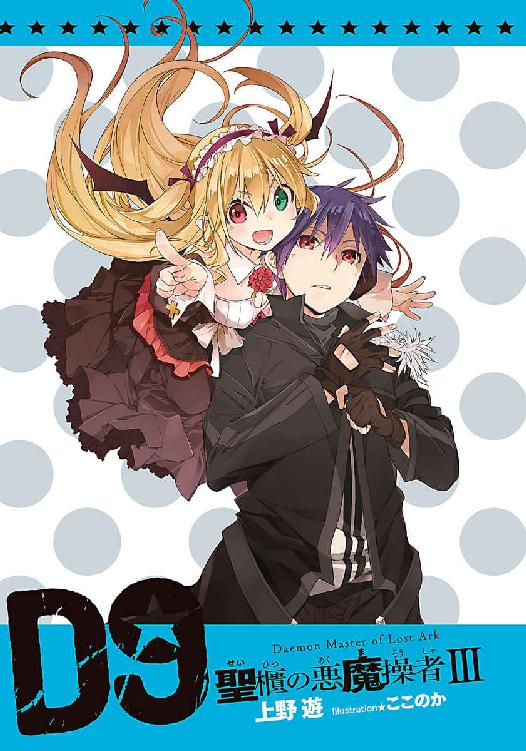
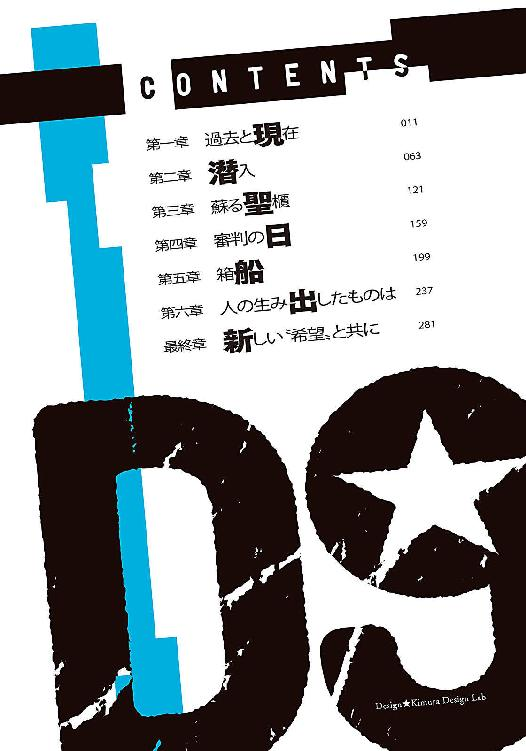
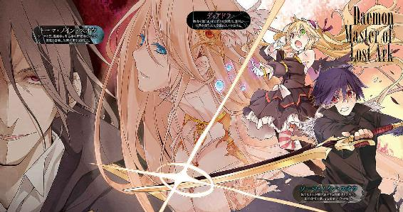
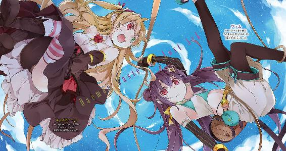
本書（電子版）に掲載されているコンテンツ（ソフトウェア／プログラム／データ／情報を含む）の著作権およびその他の権利は、すべて株式会社ＫＡＤＯＫＡＷＡおよび正当な権利を有する第三者に帰属しています。
法律の定めがある場合または権利者の明示的な承諾がある場合を除き、これらのコンテンツを複製・転載、改変・編集、翻案・翻訳、放送・出版、公衆送信（送信可能化を含む）・再配信、販売・頒布、貸与等に使用することはできません。
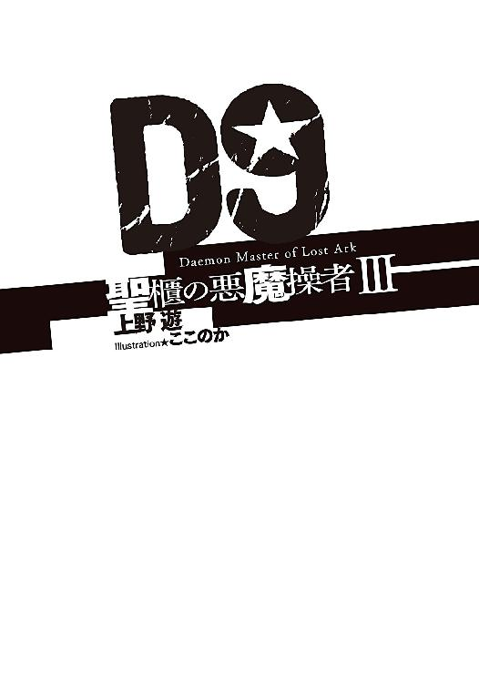
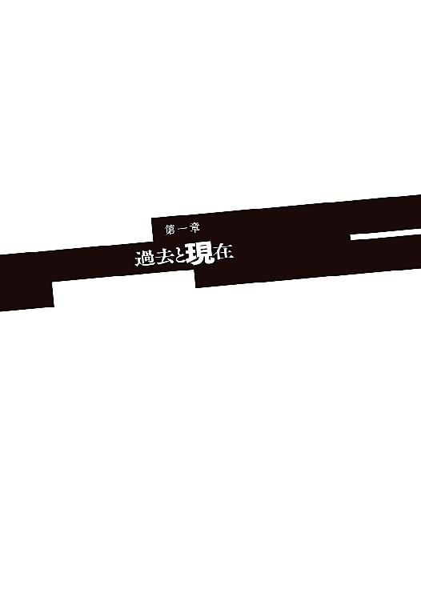
俺は今、海の上にいる。
大陸南東端の港町ナナンから東へ数百キロ──正確な距離は分からない。前にも後ろにも、右にも左にも陸地は一切見えない。ものすごく広大で、ものすごく寂しい光景だ。
三百六十度の水平線。ぽつりと浮かぶ船は、小さな点のようだろう。
箱船に乗って洪水の海を漂った始祖アダムも、こんな気持ちを味わったのかも知れない。海を見ていたらそんなことを思った。先の保証は何もなく、それどころか自分で行き先を決めることもできないような、ただ流れに翻弄されているだけのような不安。
それでふと、これまでのことを書き留めておきたくなった。
寄る辺のない光景は、人を内省させる力があるのかも知れない。あるいは単に暇なだけかも知れない。何しろ丸一日以上、かわりばえのしない海原しか見ていないのだから。
クレオン湖を出発してから今日で二週間になる──いや、どうせなら初めから書いておこう。
俺がどうして旅に出たのか。その始まりから。
俺、ソーマ・ノイン・スオウは大陸西部の古い街、アラドで生まれた。家族は両親と、年の離れた兄が一人。祖父母は俺が生まれる前に悪魔にやられて死んだと聞いている。両親はアラドではそこそこの名士だった。多忙な両親に代わって、兄のトーマが俺の親代わりだった。
その頃、俺の家の近くにはレンリという女の子が住んでいた。当時のアラド市長の一人娘だ。どちらの親も多忙で、親同士が親密だったこともあって、レンリはよく俺たちの家に預けられていた。俺よりも一つしか年上じゃないのに、やたらとお姉さんぶりたがるレンリのことを、最初はウザいと思っていたのに、俺はいつの間にか好きになっていた。そう気付いたときにはもう手遅れだった。レンリはトーマを選んだんだ。俺じゃなく。
レンリにとって俺はただの「弟」だった──眼中にもなかったことはショックだったけれど、相手が兄さんじゃ仕方ない。兄さんならレンリのことを幸せにしてくれるだろう。そう思って、俺は自分の気持ちをなかったことにしようと決めた。
なのに。
レンリは死んだ。トーマに殺された。
レンリと婚約する数年前、トーマは聖都ニューヤードに留学していた。聖都の大学で悪魔学と考古学を修め、気鋭の若手研究者としてとても注目されていたトーマは、こんな結論に達したらしい。
『このままでは遠からず人類は悪魔に滅ぼされる。そうならないように、人類は「力」を手に入れなくてはいけない』
そしてトーマは、〝天使〟を再び地上に降臨させようと思いついた。
千年前の〝終末の厄災〟において、悪魔を打ち払うために天より遣わされた神の軍勢──天使は、一般的には実在しないと言われている。俺もつい最近、現物に出会うまでは、天使は架空の存在だと思っていた。聖都への留学中、トーマはどこかで（おそらくは中央管理教会に関連したところで）その実在を確信したんだろう。必要な儀式を調べ、魔法陣を用いて、天使を召喚しようとしたのだ。場所は俺たちの生まれ故郷であるアラドの、レンリの家。
結果から言えば天使の召喚は失敗した。それも最悪の形で。
何も出てこなかっただけならまだいい。魔法陣からは天使ではなく悪魔の群れが出現してしまったんだ。それによってアラドの街は一夜にして崩壊し、大勢の人が死んだ。
レンリは天使の召喚に同席していたらしい。そこで何かトラブルがあって、レンリは魔法陣に魂を吸い取られてしまった。
トーマならレンリを幸せにしてくれると、俺は思っていた。それがどうだ？ 式すら挙げないうちにおかしな実験に巻き込まれて死ぬなんて。
何より許せないのは、レンリを死なせたトーマが平然としていたことだ。箱船があればレンリも生き返る。だからこれはたいしたことじゃない。トーマはそんなようなことを言った。
天使の次は箱船かよ。ふざけるな。あるかないかも分からないような、そんなもののためにレンリは死んだのか。殺されたのか。俺は怒りにまかせてトーマに襲いかかった。殺すつもりだった。トーマに裏切られたと感じていたし、それ以上に、トーマが「そういう奴」なのだと見抜けずに、「世界最高の強くて格好いい兄さん」だと無邪気に信じていた自分も許せなかった。
頭に血が上っていた俺は、あっさり返り討ちに遭った。トーマが呼び出した悪魔に心臓を貫かれた。トーマは屋敷に火を放ち、俺を置き去りにした。
致命傷を負った俺はその場で死ぬはずだった。けれどそうはならなかった。
トーマが残した魔法陣から一体の悪魔が現れ、俺に契約を持ちかけたのだ。
──儂と契約し、その魂を捧げよ。さすればそなたは我が主となり、遍し悪魔の力を手にするであろう。
俺はその契約に乗った。
レンリの仇を討つために、悪魔に魂を売ったんだ。
その悪魔に、俺はメルヴィーユという名前をつけた。昔飼っていた猫の名前だ。名前なんて適当でいい。長いつきあいになるとは思っていなかったし、一生懸命考えたいい名前なんてつけてしまったら、情が移るかも知れないと思ったんだ。
メルヴィーユははっきりと「ウザい奴」だった。口を開けば下ネタばかり。ことあるごとに俺を誘惑しようとするし（子供体型のくせに）、主と使い魔という関係のはずなのに俺の言うことなんて全然聞かずに嫁気取りだ。ただまあ、今にして思えば、メルのああした無神経さ──気を遣わない距離感や騒々しさが、レンリを失った悲しみを癒やしてくれていた、ということはあると思う。そういう意味では感謝だ。本人に言ったら調子に乗るから絶対に言ってやらないけど。
そのメルヴィーユを相棒にして、俺はトーマを探す旅を始めた。
公式にはトーマは死んだことになっている。屋敷の焼け跡からトーマとレンリと思われる遺体が発見されて、葬儀も行われた。けれども俺は、トーマが屋敷から立ち去るのを見ている。遺体は替え玉だ。トーマは自分が死んだことにして行方をくらましたのだ。
トーマは一度失敗したくらいであきらめる人間じゃない。きっとまたどこかで同じことをする。その前にトーマを見つけ出さなくては、またアラドのような惨劇が起きてしまう。
そうなる前に、止めると意気込んではいたけれど、トーマの足取りは全くつかめなかった。一年ほど探し回って俺は、この方法ではダメだと思った。
トーマは替え玉の死体を用意して姿を消したんだ。万が一にも発見されないように気をつけているはずで、頭の良さではトーマに敵わない俺ががむしゃらに追い回しても見つけられるはずがない。
トーマが姿を消したのは何故だ？ またどこかで天使の召喚に挑戦するつもりだからだ。去り際の態度でそれが分かる。自分のやることは全く正しいとトーマは確信していた。馬鹿な世間（その中には俺も含まれるんだろう）に邪魔をされたくはない、と思っている。
トーマがやろうとしていた「天使の召喚」はどんなものなのか。それを理解すれば、次にトーマが現れる場所が分かるのではないか。俺はそう考えた。でもそれは俺一人でできることではない。そこで俺は著名な悪魔学者に相談することにした。トーマと同じ悪魔学者なら、トーマのやることがトレースできるかも知れないと思ったんだ。
何人かの悪魔学者をピックアップして、最初にデルナの街のヴィクター・アーチボルド博士を訪ねることにした。
ファムと出会ったのは、大陸横断鉄道に乗ってデルナの街へ向かっている途中だった。
あいつ、俺が寝ている隙にレンリの形見のペンダントを盗もうとしたんだ。俺はファムを捕まえたけど、そのとき悪魔が襲ってきたのでそっちの迎撃にかかりきりになって、ファムには逃げられてしまった。まあ、その後すぐ再会することになるんだけど。
ちょっと予定は狂ったけど無事にデルナの街に着いた俺は、偶然、アーチボルド博士のメイドであるジゼルと知り合い、そのまま博士に紹介してもらうという幸運にありついた。さらに運のいいことに、博士は俺の話に興味を持ち、トーマの追跡に協力してくれることになった。
けれど、それは罠だった。本物のアーチボルド博士とメイドはしばらく前に亡くなっていて、二人を殺した悪魔が彼らに成り代わっていたんだ。正確には、吸血鬼がメイドに成り代わり、死体を操る魔法で博士を、まだ生きているかのように見せかけていた、ってことになる。吸血鬼の中には血を吸った相手の姿や知識を自分のものにできる種族がいる。その吸血鬼は本物の博士の知識を奪い、それによって〝賢者の石〟のことを知ったのだろう、というのがメルの推測だ。
話が前後した。デルナの街に潜んでいた吸血鬼は、俺がそうと知らずに持っていた賢者の石──レンリの形見のペンダントを奪おうとした。
一度は賢者の石を奪われてしまったけど、何とか取り返すことができた。けれど本来の目的は果たせなかった。がっかりしていた俺だったが、意外なところから手がかりが転がってきた。泥棒娘のファムだ。俺が何の気なしに訊ねた、悪魔を召喚する魔法陣──トーマが天使を呼び出そうとして使ったやつだ──のことを、ファムが知っていたんだ。
ファムは俺が持っている始祖アダムの遺産──〝賢者の石〟を必要としていた。
俺とメルヴィーユはファムの知識が必要だった。
そんなわけで俺たちは一緒に旅をすることになった。
東へと向かう旅の途中、俺たちは教会の刺客に襲われた。
教会騎士団の中でも精鋭中の精鋭、〝神前戦車隊〟の騎士、ロウ・フール。
最初の戦いは俺の完敗だった。たまたま増水した川に落ちて流されなければ、あの場で殺されていたかも知れない。
下流で目を覚まし、悪魔の力で怪我を治した俺はロウを追うことにした。取り残されたファムのことが心配だったこともあるし、もう一つ、大事なことがあった。
ロウは〝天使〟を連れていた。
トーマが街一つを滅ぼしてまで呼び出そうとした〝天使〟──俺たちの前に現れた天使は華奢な子供の姿をしていて、伝説に語られる神の軍勢とは全然印象が違ったけれど、無関係だとは思えなかった。
ロウと天使──本当はもっと後で分かることだけど、彼女の名前はアルディエル──を探す途中、俺たちはハンスという山師に出会い、クレオン湖に立ち寄った。ハンスはクレオン湖を仕切る山師集団〝ヤスタン一家〟の一員だ。俺たちが立ち寄ったとき、ヤスタン一家は頭目クラリスの指示の元、湖底から正体不明のお宝を引き上げたところだった。
同じ夜、乗っていたバイクの調子が悪くなったロウとアルディエルが、修理用のパーツを求めてクレオン湖にやってきた。ロウたちにクレオン湖のことを教えたのはファムだ。俺たちとはぐれた後、ファムはロウたちと行動を共にしていた。
偶然の遭遇から俺たちはそのまま交戦し、二度目の戦いは勝負がつく前に水入りになった。昼にヤスタン一家が引き上げた「お宝」の中から、巨大な悪魔が現れたんだ。
千年の時を超えて復活した魔王・蚩尤と俺たちは戦った。
その戦いで瀕死の重傷を負った俺は、賢者の石に「力を寄越せ」と願った。そうしたら信じられないことが起こった。賢者の石が剣の姿に変化したんだ。剣の名前は〝アゾス〟。魔剣アゾスだ。俺がつけたんじゃない。誰かが（何かが？）俺の頭の中に直接そう囁いたんだ。同じ声をメルヴィーユも聞いている。賢者の石が魔剣に変化するのと同時に、メルヴィーユはそれまでとは桁違いの力を使えるようになった。「力の使い方を思い出したのじゃ」とメルヴィーユは言っている。賢者の石──魔剣アゾスがメルヴィーユの記憶を蘇らせた？ 魔剣とメルヴィーユには何かの関係がある？ ここで俺はちょっとした仮説を思いついた。メルヴィーユが初めて俺の前に現れたとき、彼女は賢者の石に引かれてきたのではないだろうか？ 答えは不明だ。力の使い方以外の記憶をメルヴィーユは取り戻していない。
メルヴィーユの正体を突き止めること。これも、俺たちの旅の大事な目的だ。
ともかく、俺とメルヴィーユはその新しい力を使って魔王と戦い、何とか倒すことができた。
その翌日、ロウと三度目の戦い。俺は勝利し、そして、ロウが背負っていた悲しみと、〝天使〟の正体を知った。
天使は元々人間だった。死んだ人間を、〝転生の秘法〟で戦闘用に生まれ変わらせたものが天使だったんだ。千年前にあった悪魔との戦い〝終末の厄災〟で、人類は戦力不足をそうやって覆した、らしい。
遠い昔に失われた旧世紀の秘法を、誰かが不完全ながら現代に蘇らせた。誰か──それはトーマだった。アルディエルがそれらしい人物を見ていた。
アルディエルは自分が天使にされたことを恨んではいないみたいだった。でも、それはただの結果論だ。俺にはトーマのやったことが正しいとは思えない。人類のためとか未来のためとか理屈をつけて、人の命を弄んでいるだけだ。
アルディエルの転生には教会が絡んでいる。俺は聖都に向かうと決めた。そこにトーマもいるかも知れない。いや、きっといる。聖都に行ってトーマを見つけ出し、殺す。仇を討つ。ようやくそのときが見えてきたと思ったら、今度はファムがとんでもないことを言い出した。
『あたしは〝箱船の守り人〟のファム。永遠の封印を守るもの』
ファムはメルヴィーユを〝希望の悪魔〟と呼んだ。魔剣のことも知っていて、俺たちを教会の手に渡すわけにはいかないとそんなことになったら世界が滅びると言った。
それを阻止するために一緒に来て欲しい──ファムはそう言った。
突然すぎで面食らったし、あまりにも突拍子もない話だったけど、俺とメルヴィーユはその言葉にしたがって聖都行きを中止し、ファムと一緒に行くことにした。
そうしてクレオン湖を発ったのが二週間ほど前。街道をひたすら南下して、大陸南東端の港町ナナンに到着したのが一週間ほど前。ファムが手配した快速輸送船「ダットー号」に乗船したのが一昨日のこと。それから丸二日ほど、俺たちは〝箱船の守り人〟のアジトがある名もなき島に向かって、ひたすら海の上を移動している。予定では今日のうちに到着するって話だけど、島は影すら見えな──
「ふーっ」
「うわひゃっ！」
耳に吐息を吹き込まれて、ソーマはけったいな声を上げてソファから転がり落ちた。弾みで落としたペンと手帳を拾い上げて振り向くと、いつの間に船室に入ってきたのか、ふりふりドレスの小悪魔が笑みを浮かべてソファの背もたれに腰掛けていた。
「船室にこもってこそこそと何をしておるんじゃ？」
「暇だし、ここまでのことをちょっとまとめておこうかと思って」
ソーマがそう答えると、メルヴィーユは突然不機嫌になった。
「やめよ」
「やめよ、って」ソーマは意味が分からず首を傾げる。
ソーマはこう見えて筆まめだ。いや、旅をするからには筆まめにならざるを得ないと言うべきか。街から街へ、悪魔のはびこる危険な荒野を何十キロ、何百キロと移動するのは行き当たりばったりでは不可能だ。計画を立て、移動手段を確保し、路銀を計算して......その他諸々考えなければいけないことはたくさんある。全てを頭に入れておくことは不可能だし、後から計画と実際のズレを検証したりするためにも記録は欠かせない。そうした記録と一緒に、訪れた街の様子、出会った人のこと、遭遇した出来事のこと──簡単な日記のようなものをソーマが日常的に記してきたことはメルヴィーユも見ているはずなのだが。
「ただの旅の記録に文句など言わぬわ。来し方を振り返ってため息をつく等というじじ臭いことはやめろと言っておるのじゃ」
「俺、ため息なんかついてたか？」
「まだ」
まだついてない。そのうちつく。
「ま、気持ちは分からんでもない」
そう言ってメルヴィーユはソファの背から飛び降り、舷側の丸窓に顔を近付けた。
「ずいぶんと遠くまで来たものよ。よもや大陸を飛び出すことになろうとはな......」
「ん」ソーマはうなずいた。
最初は一ヶ月もあれば終わるだろうと思っていた。トーマを探し出して殺す。レンリの仇を討つ。それで全て終わり。それだけのことのはずだった。
「それが気付けば一年以上か......」
「だからそのようなじじ臭い述懐は......」眉間にしわを寄せ、ふっと力を抜いてメルヴィーユは微笑んだ。「......儂は何となく予感しておったぞ。そなたとは長いつきあいになりそうじゃとな」
「そうか」
「そうじゃ。......しかし一年もかけて、ソーマを籠絡できぬとは思ってもみなかったな。のう、儂はそんなに魅力がないか？ それとも──」
メルヴィーユが言いよどんだその先を、ソーマは容易に推測できた。
──いまだに死んだ女のことを思っておるのか？
それに対する答えは「分からない」だ。レンリに対する気持ちは、間違いなく恋心であったのだと思う。けれどもその思いは、レンリから家宝のペンダント──後にレンリの形見となり、賢者の石であることが判明した──を受け取ったあの日に終わりを告げた。本当なら今頃、自分でも懐かしく思える遠い過去になっていたのだろう。
けれどレンリは死んでしまった。ソーマの心もあの日に凍結してしまった。そう思っていたのだけれど。
「まあ良いわ。何ごとも辛抱が肝心。我慢に我慢を重ねた後の方が気持ちよいと言うし」
「何の話だよ......」
「聞きたいか？」
「聞きたくない」
ぴしゃりと遮って、ソーマは椅子から立ち上がった。
「どこへ？」
「甲板」
そろそろ島が見えてくる頃だ。
手帳とペンを片付けて船室から出る。メルヴィーユは不満そうに頰を膨らませたが、ソーマと一緒に船室から出てきた。
この快速輸送船「ダットー号」は、もちろん〝箱船の守り人〟の船である。秘密のアジトへ向かうのに、何も知らない一般の船を使うような真似はできない。船員は船長から末端の船乗りまで全てファムの仲間である──が、無用の混乱を避けるため、ソーマとメルヴィーユの正体についてはごく一部にしか明かされていない。大半の船員は「重要な客人」としか聞かされておらず、メルヴィーユが悪魔であることは知らないのだ。メルヴィーユの方にも正体を隠すように要請がされており、それで彼女は背中の羽を隠すようにショールを巻いて、すり減った木の床をとことこ歩いている。
「歩きづらくて敵わんな。揺れない船ぐらい造れないものなのか」
「大きい船だとあまり揺れないって聞くけど、全く揺れないのは無理だろ。波があるんだし」
苦笑するソーマの隣で、メルヴィーユがととっ、とよろけた。ソーマは反射的に手を伸ばして支えようとし、少女悪魔の目に妖しい光を見つけて手を引っ込めた。
メルヴィーユがちっ、と舌打ち。仁王立ちするその姿には船の揺れに困っている様子など欠片もない。
「この儂のよろけたふりして抱きつく作戦を見抜くとは......。階段を踏み外したふりをして腕の中に墜落作戦にするべきだったか」
どっちも変わらん、とソーマは思った。隙あらば仕掛けてくるから、もうパターンが読めるのであるが、それを指摘してやるつもりはソーマにはなかった。最初の頃はうざったいだけだったこうしたやりとりが、今のソーマはそれほど嫌いではなくなっていた。むしろ何も仕掛けられないと物足りなかったりする。
と、
「のわっ！」
メルヴィーユが突然つんのめるようにしてソーマにしがみついた。今度はよろけたふりではない。船が急に揺れたので、本当にバランスを崩したのだ。
メルヴィーユを抱き留めたソーマは鋭い視線を周囲に走らせる。船が加速していた。先ほどまで静かだった機関の音が今ははっきりと聞こえる。
「何かあったみたいだな」
二人は真面目な表情で足を速める。船内の狭い通路を抜け、突き当たりの急な階段を一気に上っていく。甲板に飛び出すと鋭い日差しに目が眩む。幾度か瞬きをして視界を取り戻すと、彼方に数条の黒煙が立ち上っているのが見えた。その発生源は水平線近くに浮かぶ小さな島だ。
「あれは......」
ソーマの呟き。
甲板には無数の船員がいて、ソーマと同じように前方の島と黒煙を注視している。
「ソーマ、メルヴィーユ！」
船首付近にいた少女が振り返って二人を呼んだ。
「ファム」
名前を呼び返し、ソーマとメルヴィーユはファムのところへ。
「あの煙が出てるのは、お前たちのアジトがあるっていう島か？」
「うん」
「何ごとじゃ？」
「分かんない。あたしたちもさっき気付いたところ」
ファムはそう答えて再び前方を見やり、顔の前で祈るように手を組んだ。
「お願い。みんな無事でいて......」
ダットー号は直ちに速力を最大にして島へと向かった。同時に船員をいくつかのグループに分けて上陸後の救助と消火活動の態勢を整える。島にいる仲間たちを救おうと、船員たち──〝箱船の守り人〟の士気はこれ以上ないほど高まっていた。
ソーマも彼らに協力するつもりでいた。降魔の中には大量の海水を自在に操るものもある。その力を用いれば消火活動は大いにはかどるだろう。それで正体がばれても仕方がない。何よりもまず人命救助が最優先だ。
だが──
「こいつはひでえ......」
島に近付くにつれて強くなっていく煙の臭いに。少しずつだが血の臭いが混じり始めた。
どうやらただの火災ではないらしい──その思いは誰の胸にもあったが、しかし接岸した彼らを待ち受けていたのはもっと過酷な現実だった。
小さな島の小さな入り江に無数の死体が散らばっていた。あちらこちらの地面が、砲撃によるものだろう、大きくえぐれている。桟橋は見る影もなく破壊され、仰向けに倒れた死体の胸には無数の弾痕が穿たれている。流れ出た血が入り江の色を変えていた。戦闘があったのだ。それもかなり激しい戦闘が。
「おーい！ 誰かいないのか！」
船上からの呼びかけがむなしく拡散する。
それでも引き返す選択肢はなかった。
船員たちは事前に決めたグループごとに上陸した。船員たちが慎重に島の奥へと入っていく。
ソーマとメルヴィーユはファムと共に上陸した。
上陸するなりファムが走り出す。
「おい！ 迂闊な行動は......」
ソーマが諫めるがファムは無視して走って行った。
「言うだけ無駄じゃ。完全に周りが見えなくなっておる」とメルヴィーユ。「言っても無駄なら、余計なことは言わずに儂らで守ってやればいい」
ソーマは目を丸くした。
「何じゃ？」
「いや、お前がそんなこと言うとは意外だったから」
「失敬な。儂だってあれのことはちゃんと仲間だと思っておるわ。......ささくれ程度には」
付け足した一言はあるいは照れ隠しだったのかも知れない。
「まあ、守るも何も、もう敵などおらんじゃろうが」
安全だという見通しを、しかしメルヴィーユは神妙な顔で言った。ソーマもうなずく。
島を襲った何者かは、当然船で来たはずなのだ。その船がどこにも見当たらないのは、襲撃者が既に島を離れたことを意味する。それは襲撃者が目的を果たしたということであり、島側が抵抗できなくなったということである。ソーマたちが異変に気付いてから既に数時間が経過している。戦闘が始まったのはそのずっと前だろう。生存者はもういないかも知れない。
「とにかく行こう」
ソーマたちはファムの後を追って走った。
海岸付近の砂地を抜けると、名も知れぬ南洋の木々の森があった。平らに削った岩を敷いた道路が森の中に通っている。ひときわ大きな木が横倒しになって道路を塞いでいた。数カ所、爆発したようにえぐれている木を乗り越えると、その陰に無数の死体があった。
「......木を倒して即席のバリケードにしたんだな」
「じゃが突破された。海賊なんぞの仕業ではないようじゃな」
メルヴィーユの見立てにソーマも同意見だ。ファラディースでは火薬は貴重品だ。ただの海賊がそれをこうも惜しげもなく使えるわけがない。では一体誰が？ そもそも何の目的で？
考え始めたソーマの耳に、ファムの鋭い声が飛び込んできた。
「しっかりして！ 誰か！ 誰か来て！」
ソーマは思考を中断して声の方へと走る。
死体の散らばる道路を十メートルも走ると、木造の家が並ぶ平地に出た。家々はその大半が焼け落ちている。ここにもたくさんの死体があり、その中の一つにファムが取りすがっている。
「ファム！」
「ソーマ！ 男爵を助けて！ お願い！」
「男爵？」
聞き返しながら近づいて、ソーマはぎょっとした。死んでいるかと思われた男が動いたからではない。ファムに抱えられた瀕死の男の顔が、普通ではなかったのだ。顔は長い毛で覆われ、口吻が軽く突き出ている、そして頭上には三角耳。長い鬣に覆われた獅子のような顔には細かな傷がいくつもあり、今も血が流れ続けている。
「悪魔？」
「いや、私は人間だ」
と言いながら、獣面の男が縦に細い光彩をきゅっと細めてメルヴィーユを見た。
「あなたが〝希望の悪魔〟か......。私は、〝箱船の守り人〟のリーダー、だ。皆には......男爵と呼ばれて、いる」
「しゃべらないで」
ソーマは疑問を棚上げにして地面に膝を突くと、ナイフで男の服を切り裂いた。手当てをするつもり──だったのだが、腹の傷を見てもう助からないと理解する。
「何があったんですか？ 一体誰がこんなことを？」
「教会......だ」
「っ!?」
「教会......騎士、団が......あれを......奪って」
「あれ？ あれとは？」
「楽園の......指輪......」
男が左腕を動かす。見ると、手首から先が切断されていた。
「頼む......彼らを......止めて、くれ。彼らは......騙され......このままでは世界は、滅び......」
一言発するたびに獣面の男──男爵から精気が抜けていくのが分かった。
「ねえ、何とかならないの!? 悪魔の力で助けられないの!?」
ファムの訴えに、ソーマは首を横に振るしかなかった。傷を癒やす能力を持った降魔は複数ある。中には瀕死の重傷からでも完全回復させるようなものまで。だが、それらはソーマ自身を癒やすことはできても、他人の傷を癒やすことはできないのだ。
「ファム......すまない......。最後の希望を、支えて......やって......く......」
男の目から光が消えた。
「男爵！ 男爵！ しっかりしてよ！ あたしを嫁に行かせるまでは死ねないって言ってたじゃない！ ねえ！ ねえってば！」
声を聞きつけたのだろう、ダットー号の船員たちがやってくる。
ファムは男爵にすがりついて、いつまでも泣き続けた。
南の海に日が沈む。
傾いた日に照らされて、いくつもの影法師が、細く長く伸びていた。
響き渡るは土を掘る音。誰も口を開かない。
穴の底に遺体が横たえられる。誰かが小さく鼻を鳴らした。
男たちは再びシャベルを持ち、遺体に土をかけ始める。
発見された遺体は二十二体──発見時にはまだ意識のあった者が三人いたが、いずれもすぐに息を引き取り、島にいた〝箱船の守り人〟のメンバーは全員が死亡した。全ての埋葬を終えたのは真夜中だった。
埋葬が終わるとダットー号の船員たちは船に戻った。夜の過ごし方は様々だ。甲板に集まって弔い酒をあおる一団がいれば、船室で静かに涙する者もいる。
〝箱船の守り人〟のメンバーではないソーマは、その空気から離れ、島の浜辺を歩いていた。傍らにはいつものようにメルヴィーユ。波打ち際。寄せては返す規則的なリズム。海はどこまでも平穏だ。何ごともなかったかのように。人の営みになど興味がないかのように。
「......のう」
メルヴィーユが海を見ながら言った。
「うん？」
「よもやまたおかしなことを考えてはおらぬじゃろうな？」
「おかしな？」
「......『俺がもうちょっと早く島に着いていたら助けられたかも』だとか」
それを聞いてソーマは小さく笑った。
「少し前、ファムにも同じようなことを言われたよ。......助けられて当たり前だと思うな、それは傲慢だ、だったかな？ そんなようなこと」
本当はそうではない。ファムは「結果論を基準にして自分を責めるな」と言ったのだ。精一杯の努力をして、それでも届かないことはある。どうにもならないことはある。それはソーマだって分かっているのだ。分かっているけれど、
「それでもやっぱりさ、人が死ぬのはやりきれないよ」
「ソーマは優しいな」
海からの風が強く吹く。ソーマは風の冷たさに首をすくめる。メルヴィーユがぴたりと身を寄せてきた。と、焼けて見通しが良くなった森の中に、小さな灯が揺れるのが見えた。
「......ファム？」
呟きが聞こえたのだろう。灯が向きを変えてこちらに近付いてくる。
「何？ デート？」
いつもの口調で言ったつもりだったのだろうけれど、その声はしわがれていた。さんざん泣いた結果だろう。両まぶたも厚ぼったく腫れてみっともないことになっていたが、さすがのメルヴィーユもそれをからかったりはしなかった。
「......大丈夫か？」
「うん。だいぶすっきりした」
噓に決まっていた。
「もうぜんぜんへーき。こう見えて切り替えは早いから」
虚勢に決まっていた。カンテラと反対側の手には、酒瓶が握られている。ファムはそれをちょいと持ち上げて、
「あんたもやる？」
「もらおうか」
と言ったのはメルヴィーユだった。
「ソーマは酒の味など分からんお子様じゃ。吞ますのはもったいない」
ファムは笑ってメルヴィーユに酒瓶を渡す。メルヴィーユが勢いよくラッパ飲みを始めた。
「ちょ、ちょっと何してくれるのよ!?」
「何じゃと？ 吞めと言ったのはそなたではないか」
「遠慮しなさいよ少しは！」
「お断り。もらったものは儂のものじゃ」
そううそぶいて、メルヴィーユは酒瓶を抱きしめてふわりと空に浮き上がる。
「待ちなさいよ！ 泥棒！」
「泥棒はそっちじゃろ」
カラカラ笑って空を飛ぶメルヴィーユ。追いかけるファムはもうだいぶ酔っているのだろう、何でもないところで足をもつれさせて尻餅をついた。
「大丈夫か？」
駆け寄ったソーマが手を貸すと、
「......あたしね、捨て子なんだ」
「うん？」
「赤ん坊の頃、木箱に入れられて川を流れているところに、たまたま〝箱船の守り人〟が通りがかって、そのとき男爵はどこかから〝始祖アダムの遺産〟を回収──要は強奪してきたところで、一刻も早くその場を離れなくちゃいけなかったんだけど、男爵は作戦を無視してあたしを助けてくれたの。さすがに親を探す時間はなかったから、そのままアジトまで連れて帰って......それからずっと親代わり」
ふらつく足で立ち上がって、
「〝女〟って名前も男爵がくれた。『お前は俺たちとは違う。一時的に預かってるだけだから、ちゃんとした名前はつけない』って。でもあたしはこの名前が気に入ってる」
空を飛んでいたメルヴィーユが戻ってきた。
「済まぬ。少々悪ふざけが過ぎた」
差し出された酒瓶を、しかしファムは笑って押し返す。メルヴィーユがわざと馬鹿な真似を──いつものような振る舞いをしたのを分かっているのだ。
「あの〝男爵〟って人は......」
訊ねようとして、ソーマは自分の言葉に戸惑う。
人──猫のような獣面のあの男。本人は人間だと言っていたが......。
「人間だよ。天使と人間の間に生まれた子供は、まれにああなることがあるんだって。男爵は自分のこと、天使アブデルの末裔だって言ってた。千年の間に血が薄れてるから、もう滅多に見られないはずなんだけど、先祖返りの一種？」
本当かどうかは怪しいけどね、とファムは付け足す。
天使は古の〝終末の厄災〟において、悪魔を滅ぼすために天より遣わされし神の軍勢──と伝えられているが実際は違う。それは失われた旧世紀の技術によって誕生した種族。乙女の魂を戦闘用の肉体に封じ込めて造り出された、人とも兵器とも言える存在である。
その天使に子供ができて、その血が今も受け継がれている。
「そう、最初は〝箱船の守り人〟なんて名乗ってなかったし、教会と対立してもいなかった。むしろ天使の末裔は教会と共にあった」
「それが袂を分かったのか。......どうしてだ？」
「箱船よ。箱船の扱いで意見が対立したの。教会は箱船を蘇らせようと考えた。天使の末裔はそれに反対した。教会内で争いがあって......」
「ちょ、ちょっと待ってくれ」
ソーマは驚き、訊ねた。
「箱船は、実在するのか？」
何を今更、と言うような顔でファムはうなずく。
「いや、だってそれおかしくないか？ 箱船が実在するってことは創世神話が本当のことだってことになるだろ？ でも創世神話にある、世界を覆う大洪水が実際にあったって証拠は見つかってない」
いや、大洪水があったという証拠が見つかっていないのではない。
箱船伝説の真偽については、過去に大規模な調査が行われているのだ。その結果、大陸はそのほとんどの地域が、少なくとも過去数万年の間は、一度も大規模な洪水、津波などに襲われていないことが判明している。
「教皇アナスタシアの大調査ね。意外と物知りじゃない」
大調査の話はかつて兄・トーマに聞いたものだ。あの頃の自分は素直に兄を慕っていた──そのことを思い出して、ソーマは複雑な顔になった。
「でもその調査結果の、一部が闇に葬られたことは知ってる？」
「何......？」
「教皇アナスタシアが派遣した大調査隊は、箱船伝説の証拠をついに一つも見つけられなかった。その代わりに、一つの奇妙な問題を発見した」
ソーマは唾を飲み込んだ。メルヴィーユまでもがファムの話に身を乗り出し聞き入っている。
「......この世界には、人類の祖先となる生き物が存在していない」
「どういうことだ？」
「人間はこの星で生まれて進化して、今の姿になった生き物じゃないのよ。さらに言うと人間以外にも、牛とか豚とか、あたしたちが普段食べている生き物の大半がそうだった。どれだけ掘ってもどこを掘っても特定の種類の動植物以外は化石が出てこない。どう？ まるで『ある日突然この世界に現れた』みたいじゃない？」
ソーマはすぐにファムの言いたいことを理解した。
「それが、つまり、〝箱船〟によるものだって言うんだな？ 俺たち人類は、どこか別の世界から箱船に乗ってやってきた」
「そう。それこそが、教会がひた隠しにしているこの世界の真実──」
ファムは重々しくうなずき、言った。
「──〝箱船〟は実在する。そして箱船が蘇るときこの世界は滅びる、と〝箱船の守り人〟には伝えられている」
「何だって？ この世界が？」
ファムはうなずいて、
「だから、〝箱船の守り人〟の創成メンバーは、教会の企みを阻止するために──この世界の滅亡を回避するために、教会からあるものを盗み出した。それが〝楽園の指輪〟。箱船の復活に必要な鍵の一つ」
もうひとつの鍵は今ソーマが持っている賢者の石──魔剣アゾスだ。
「今教会にある指輪は......代々の教皇が身につけてるあの指輪は偽物よ。盗まれたことを公表するわけにもいかないから偽物を作ってごまかしてるんでしょうね。本物はあたしたちがずっと隠していたんだけど......」
それが今日、奪われてしまったのだ。
「しかし分からんのう。ならば何故、教会は箱船を蘇らせようとするのじゃ？ この世界が滅びてしまって困るのはあちらも同じじゃろ？」
メルヴィーユの問いに、ファムは眉間にしわを寄せた。
「そこが解釈の違い......なのかな？ 教会は箱船の復活が世界の滅亡になるとは考えていないの。ぶっちゃけ、あたしたちも箱船が復活したら何が起きるか、正確なことは知らない......箱船が蘇ったら世界に再び厄災が訪れる、という以上のことは......」
「あやふやな話じゃな」
「ごめん」
謝って、ファムは森を──昨日までは森であった場所、今は簡易の墓所となった場所を見やった。
「伝説の真偽は分からない。でも、あたしは、戦う。男爵の意志を継ぐ」
──これは恨みだとか復讐とかじゃない、呟いて。
「でもあたしたちだけじゃ教会には勝てない。島に隠してあった失伝兵器も全部持って行かれたみたいだし、圧倒的に戦力が足りない。お願い、ソーマ、メルヴィーユ。あたしたちと一緒に教会と戦って」
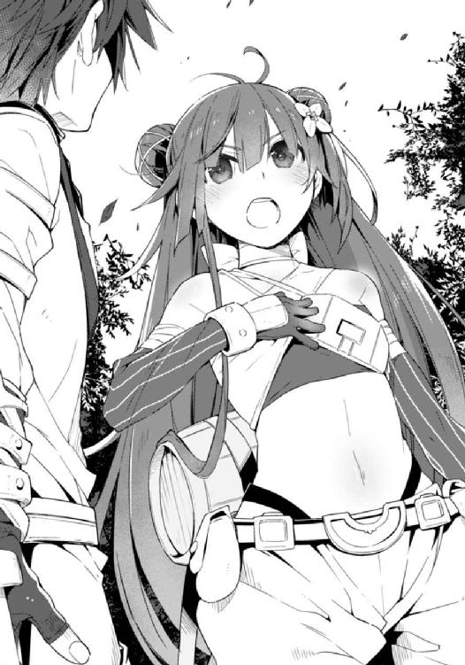
ソーマはすぐには返事をしなかった。
「......俺さ、ちょっと前まで騎士になりたかったんだ。頭を使うより体を動かす方が好きだったし」
学問を志した兄とは違う道を行こう、と思ったことも大きな理由の一つではあったが。
「悪魔を倒してみんなを守る。この世界を少しでも平和に近付ける。騎士団は......教会は千年もの間ずっとそうやってこの世界を、人類を生き延びさせてきたんだ。教会はこの世界に必要だ。間違いなく」
「ソーマ......」
ファムが残念そうに顔を歪める。
それを見てソーマは首を横に振った。
「でも、だからって何をしてもいいわけじゃないと思う」
ソーマの視線が闇を見通す。
地図にもない南の島。砲撃を受けて焦土と化し、今は墓標と焼け跡だけが並ぶ島。
「こんな風に暴力で何かを成し遂げようとする人たちに正義があるとは思えない。今の教会は間違ってる。それに教会にはトーマがいるかも知れないんだ。俺にとっても他人ごとじゃない。ファムに言われなかったら、こっちから一緒に行かせてくれと頼んでいたところだ」
「儂は手を貸さんぞ。人間同士の争いなんぞ知ったことか」平然と言い放って、しかし少女悪魔はにやりと笑う。「......じゃが我が主の行くところであればどこにでもついて行く所存であるし、その過程で、結果的に板っ切れの利益になることがあるかも知れぬな。ま、儂のやることのおこぼれを精々ありがたく拾って歩くがよい」
「あんたねえ......」怒りと呆れの混じった声を出したファムは、すぐに小さく笑って、「ありがとう。二人とも......本当に」
浜の方から、おーいおーいと呼ぶ声が聞こえ、複数の灯が揺れ動きながら近付いてくるのが見えた。姿の見えないファムを心配して探しに来たのだろう。
「行こう」
仲間の方へと歩き出したファムの頭、暗い夜空に星が一つ流れていく。
それは吉兆か、それとも──
十月某日。
その日、ソーマとメルヴィーユは港町ナナンのとある酒場を訪れた。
まだ準備中の札が下がっているドアをノックすると、内側からロックの解除される音に続いて酒場の店主が顔を出す。
店主はソーマたちの顔を確かめると、うなずいて中へと招き入れた。
「ファムは？」
「全員そろってるよ。お前さんたちが最後だ」
酒場に入る。狭く薄暗い店内は既に満席だった。準備中のこと、席を埋める人々は客ではない。普段は大陸各地に散っている〝箱船の守り人〟の主要メンバーが集結しているのだ。
「ソーマ、メルヴィーユ」
カウンターの側にいたファムが二人に気付いて声をかける。
ソーマたちは椅子の間を縫うようにしてファムのところへ行き、ソーマは壁により掛かり、メルヴィーユはひょいと飛び上がってカウンターに座るが、
「お行儀が悪い」
とソーマに椅子の上に下ろされた。
「少しぐらいよいではないか......」
メルヴィーユは不機嫌そうに頰を膨らませ、背中の羽を隠しもせずにパタパタさせる。それを見ても誰も驚かない。ソーマたちも参加するこの会合は既に三度目だ。ソーマが悪魔憑きであることも、メルヴィーユが悪魔であることも、ここに集まる全員が知っている。
「では、そろそろ始めるとしよう」
咳払いに続けてそう言った男はウルス。男爵の後を継ぐリーダーに選任された、熊のような大男である。
名もなき島が教会に襲撃され、男爵が死亡し、〝楽園の指輪〟が奪われてから一ヶ月が過ぎている。
あの後、ソーマたちは遺品と使えそうな物をありったけ持ち出して島から離れた。大陸に戻ってきて各地のメンバーに伝令を飛ばし、主要メンバーに招集をかけた。情報収集も行い、新たに分かったことがいくつかあった。
島を襲ったのは騎士団でも最強を誇る、教皇直属の〝神前戦車隊〟こと機動攻撃隊だった。
彼らは半月前に竣工して、聖都近海で演習を行っていた最新鋭戦艦〝アスカロン〟に乗り込むと、「教皇の勅命」によって演習を中止させ、艦を〝箱船の守り人〟のアジトである名もなき島へと向かわせた。島に着いてからは代表者と三十分ほどの交渉を持ち、それが決裂すると攻撃開始、島を制圧した後、失伝機械群を押収して聖都へと戻った。
「あの島は悪魔を崇拝し、その力を得るために生け贄を捧げる邪教の本拠地である。教団は失伝兵器で武装し、生け贄にする子供たちを各地からさらってきている。既に少なくない被害が出ているため、やむなく武力制圧することとなった」
作戦を指揮した男──戦車隊でもかなりの高位にありそうだった──はそう説明したそうだ。
「本作戦については社会的影響を鑑みて公式発表はされない。むやみに社会不安を煽ることは騎士団の活動に反するからだ。君たちもみだりに口外しないように」
指揮官は船を降りる前にそう言ったのだが、しかし戦艦には百以上の人員が乗り組んでいる。それだけ人がいれば秘密を守ることは不可能である。ましてアスカロンの乗組員たちは、処女航海を邪魔してくれた神前戦車隊にいい感情を持っていなかった。教皇の勅命だかなんだか知らんが、俺たちの船を顎で使ってくれるとは何様だ、と。かくして男たちは家族に、友人に、恋人に、不満をぶちまける。そうした声が周囲に伝わって、聖都に潜伏している〝箱船の守り人〟の耳にも入ったのである。
神前戦車隊と聞いて、ソーマはロウとアルディエルのことを思い出した。幾度も死闘を繰り広げ、最後には分かり合えたと思う彼らが、名もなき島での作戦に加わっていたかどうかは不明だ。〝箱船の守り人〟のスパイも、参加者の詳細がつかめるほど深くは、教会組織に浸透していないのだ。参加していなければいい、とソーマは思った。
「......我々の取れる戦略は突き詰めれば、攻めるか守るかの二つだ」
ウルスが言い、ソーマは顔を上げた。
今後の方針については前回までの会合でおおよそは話し合われている。
攻めの戦略ではこちらから打って出る。
奪われた〝楽園の指輪〟──教会側からすれば取り戻しただけだが──を再び取り返すために聖都へ乗り込む。最初の会合ではメンバーの大多数がこれに賛成した。多分に男爵の仇討ちをしようという意識が高かったのだろう。やられたからやり返すのは当然だというような、血気盛んな主張が大勢を占めた。
だが奪い返すにしてもどうやって？ 教会側だって当然警戒はしているはずで、地方ののんきな金持ちの枕元にちょろっと忍び込んでお宝をくすねてくるのとはわけが違う。そもそも持ち去られた〝楽園の指輪〟は今どこにあるのか？ 指輪は本来あるべき場所──教皇の指に嵌まっている可能性が非常に高い。もしそうなら、それを奪取するのは教皇の暗殺と同じかそれ以上の難事であるし、教会側が指輪を素直に教皇の指に嵌めるとは限らない。教会がこれまで通りダミーの指輪を教皇につけさせ、本物をどこか、誰も知らない場所に隠してしまう可能性も十分にあり得る。
守りの戦略では、「もう一つの鍵」を死守する。
教会の目的は〝箱船〟の復活である。これまでの教会の動き、教会内部に潜入している〝箱船の守り人〟メンバーからもたらされた情報からそう判断できる。伝説の箱船──それは旧世紀の超技術をさらに上回る、異世界の技術が詰まった宝の船だ。その力をもってすればファラディースを闊歩する悪魔共などたちどころに一掃できる、と教会は考えている。
だが箱船を蘇らせるには二つの鍵がいる。一つは〝楽園の指輪〟。そしてもう一つは〝魔剣──あるいは魔鍵──アゾス〟。ソーマの腰にある深紅の剣だ。魔剣がこちらにある限り、教会は箱船を復活させることはできない。であれば指輪のことはしばらく後回しにして、今は魔剣を守ることを最優先するべきであるとするのが守りの戦略で、今は六割強がこちらを支持している。
しかし守るにも問題があった。
〝箱船の守り人〟が考える、「教会に魔剣を渡さない方法」とは、「誰の手も届かないところに魔剣を封印してしまうこと」であった。たとえば深い海の底に沈めるとか。
ソーマにとっては「魔剣を手放せ、捨てろ」と言われたようなものである。承服できるはずがなかった。箱船が復活したら世界が滅びる、君一人の復讐のために全世界を危機にさらすつもりかと、その言い分は分からないでもない。それが一番の安全策であることも認める。けれどやはり承服はできない。ソーマはそのために悪魔に魂を売ったのだし、魔剣アゾスは、その元となった賢者の石はレンリの形見なのだから。
ソーマの主張にファムが援護射撃してくれた。魔剣があればソーマは古の魔王すら凌駕するほどの戦闘力を発揮できる。下手に隠すよりもソーマが持っていた方がずっと安全だ。ソーマは〝箱船の守り人〟に協力を申し出てくれたのだから、魔剣を持ったまま戦力になってくれた方がいい。これにうなずく者がいれば、「我々は戦争がしたいわけではない」あるいは「魔王を倒したというのがそもそも眉唾だ」と反対する者もいた。
どちらが正しい、どちらが間違っているという話ではなく、だからこそ結論が出ない。
連日同じようなところをぐるぐる回る人間たちの会合に、メルヴィーユは嫌気がさしてきた。ソーマの袖を引っ張って注意を引き、耳に口を寄せて囁く。
「......宿に帰って甘いものでも食わぬか？」
メルヴィーユにしてみれば教会と〝箱船の守り人〟の対立などどうでもいいのだ。一緒に来れば自分の正体が分かるかも知れない、と仄めかされたから来ただけで、男爵を始めとした幹部が死亡し、名もなき島に収蔵されていた極秘資料が焼き尽くされたことで〝希望の悪魔〟の詳細が分からなくなったと聞かされれば、口から唾を飛ばす以外に能のない連中──実際はそんなことはないのだろうけれど、連日の不毛な会合をしているところしか知らなければそうも見える──に付き合う義理も必要もないし、酒場なのに酒の一滴も出てこないのも面白くない。
ソーマは苦笑して、
「もうちょっとだけ辛抱してくれ」
「いや、話し合いに飽いたわけではなくてじゃな......」
このままなし崩し的に〝箱船の守り人〟と行動を共にすることが、ソーマにとってプラスになるとは思えない。他人の都合でいいように振り回されるだけになるのではないか。メルヴィーユはそう危惧している。
「......こやつらの、魔剣がまるで自分たちのものであるかのような態度が気に食わん」
「なっ！」
メルヴィーユの呟きが聞こえたのだろう。近くにいた男が目をむいて腰を浮かせた。
「俺たちは世界を破滅から救うためにだなあ──」
「そのためなら何を犠牲にしても構わぬし、どんな手段でも取ると？ それで貴様ら、教会と何が違うんじゃ？」
「あんな連中と一緒にするな！」
「儂には同じに見えるよ」
「このガキ！」
「やめんか！」
ウルスが怒鳴った。いきり立っていた男が我に返ったように息をつき、椅子に座り直す。
「悪かった。大勢仲間を失った後で気が立っているんだ」
「それはそちらの都ご......もが」
謝罪の言葉を切り捨てようとしたメルヴィーユの口を、横から伸びてきたソーマの手がふさいだ。
「こっちも悪かった。腹が減って気が立ってるんだろう。何かつまむものでも用意してくれないか？」
「もがもがもーもがもがもが！ もーもがもがもが！」
メルヴィーユが暴れるが、口を押さえられたまま喚かれても何を言っているのかさっぱり分からない。いや、ソーマには何となく分かった。会合は不毛な方向に進みつつある。こんなことは時間の無駄だとメルヴィーユは言いたいのだ。
ウルスも先の展開を予測したのだろう、ソーマと同じようなため息をつく。
厨房に続くスイングドアが開かれて、七歳くらいの女の子が鉄砲玉のように飛び込んできたのはそのときだった。
「みんな、大変たいへんたいへん！」
「ラビィ！ お前は会合に参加できないって言っただろ！」ウルスが女の子を叱った。「おとなしく部屋で待ってろと」
女の子──ラビィは叱られても全くひるまない。むしろますます興奮した様子で、
「お説教ならあとあとあと！ 大変なんだってば！ 聖都から鳩が来た！ ルナールから緊急通信！」
そう言いながらカウンターを飛び越えると、握っていた紙片をウルスに渡す。
「ルナール？」
「聖都にいる俺たちの仲間だ。教会の動向なんかを探ってくれて......っ！」
ソーマの問いに答えながら紙片を広げたウルスが両目を限界まで見開いた。
「どうした？」
「ルナールは何だって？」
「......殉難騎士追悼式典開催。教皇ディアドラが演説......」
読み上げるウルスの声は震えていた。視線が小さな紙片の上を何度も往復する。
「その何が緊急なんだ？ 毎年の行事じゃないか」
「待て。最後まで聞こう。ウルス、続きを」
ウルスは息を吞み、続きを読み上げる。
「......教皇が世界の滅亡を予知せり。審判の日。教会、箱船を復活させ、人々をファラディースから脱出させる計画を発表。民よ聖都に集えと呼びかけり」
「箱船の復活だって!? それにファラディースから脱出って」
「この世界を捨てるってことか！」
「それなら確かに『大いなる厄災』が来ようとも関係ない！」
「ちょっと待て！ 魔剣はここにあるんだぞ。指輪だけでは箱船は復活させられないはずだ」
「鍵以前に箱船の所在が不明だろう。教会はそれもつかんだというのか？」
「はったり？」
「それはないだろ、だって教皇の布告だぜ？」
「じゃあ教会は本当に箱船を......？」
場は大混乱に陥った。誰もが戸惑い、状況を理解できず、激流に落ちた木の葉のようにくるくる回っている。
「今日はここまでだな」
ウルスは戸惑う仲間たちを見回してそう言った。この有様ではもはや会合も何もない。
「手紙によればルナールはもう聖都を発ってこちらに向かっている。直接話が聞ければ詳しいことも分かるだろう。それを元にして今後の出方を決める。魔剣の扱いについては現状維持だ。......君たちもそれでいいね？」
確認を求められてソーマはうなずいた。
ウルスが解散の指示を出し、〝箱船の守り人〟のメンバーがバラバラに席を立つ。
そんな中、メルヴィーユがふと遠い目をしたことにソーマは気付いた。
「どうした？」
「うむ。何か思い出しそうだったんじゃが......審判......復活......むむう......」
メルヴィーユは首を傾げて小さく唸る。けれども逃した記憶の尻尾は捕まえられなかった。
電話は同じ街の中でしか使えない。
街から街へと電話線を敷設する計画がなかったわけではない。相互に即時の連絡が取れるようになれば、その利便性は計り知れないものがある。過去に一度、ある街から隣街へと電話線が通されたことがあった。結果は悲惨の一言だった。悪魔共が電話線を切断して待ち伏せ、補修に来た人間を襲う事件が頻発したのだ。対策にかかるコストと人的被害を勘案した結果、街から街への情報伝達は鳩を飛ばすか人間が直接運ぶか、以前と変わらない方法が取られるようになった。
緊急通信を届けた鳩から遅れること五日、ルナールがナナンに到着した。朝も昼もない強行軍であった。
すぐに四度目の会合が開かれ、そこで一同は教皇ディアドラの演説の詳しい内容を知った。
追悼式典は聖都南端、鎮魂の丘に立つ巨大なモニュメントの前で行われる。
教皇はまず、この一年間に殉職した騎士たちに追悼の意を述べ、深く黙禱した。それから居並ぶ騎士たちの日頃の労を労い、参列した一般市民たちと共に、今日の生を喜び合った。
それらの毎年の決まり切った手順が終わると、多忙な教皇は式典会場を後にするのが通例だ。
だが、今年はそうはならなかった。
「勇敢な騎士の方々のおかげで、今年も聖都の、そして大陸の平和が守られました。次の一年もまた、平和が続くよう、私は心から祈るものであります......ですが」
挨拶が終わったと思われた直後の「ですが」──式次第にはなかったのだろう、進行を司っていた教会関係者が慌てる。教皇は柔和な笑みで係員を制し、真面目な顔で聴衆を見回した。胸に手を当て、告げる。
「この身に刻まれた〝天印〟を通して神の御心が伝えられました。ファラディースに来年は訪れません。世界は滅びます」
突拍子もない発言に、しかしざわめきも混乱もなかった。理解が及ばなかったのが半分、驚きすぎて呼吸もできないのが半分。
ディアドラは静かに続けた。
「これが何かの間違いであればいい、と私も思います。ですが残念なことに、これは事実です。......一年前には西のアラドの街が悪魔の大発生によって壊滅し、この夏には大陸横断鉄道が悪魔によって襲われ、大勢の方が亡くなる事件がありました。この聖都ニューヤードは安全が守られておりますが、それも永遠ではありません。未確認ですが南東地方に魔王が現れたとも、中央荒野のデルナに新種の悪魔が出現したとの話もあります」息を継ぎ、目を伏せて、「教会は皆さんに噓をついていたのです。この世界が未来永劫盤石であるかのように、人類は悪魔を駆逐しつつあるかのように。しかし実態は逆です。我々は各地で敗北を重ね、人類の生存範囲は毎年のように縮小しつつあります。人類はもう、限界のところまできているのです」
聴衆が少しずつざわめき出した。
ディアドラは動じない。真剣な表情を全く崩さず、真摯に訴える。
「私は神に祈りました。人類の救済を。神の御業によって悪魔を一掃して下さることを。神は答えられました。かつて〝楽園〟でそうしたように、この地に洪水を起こし、はびこる悪魔たちを一掃すると。そして私に、伝説の箱船の在処を示し、〝審判の日〟までに可能な限りの人々を集め、箱船に乗せよと告げられたのです」
「箱船だって？ どこにあるんだよ！」
遠くの方で聴衆が怒鳴った。教皇は不躾な問いに機嫌を損ねることもなく、
「それはまだお知らせできません。私たちの計画を妨害しようとする一団がいるからです」
驚きの声と、笑うような声が混じって響いた。教皇の話を信じていない者の方が多いのだ。それはそうだろう。突然「世界はもうすぐ滅びます」なんて言われてすぐに真に受ける奴の方がどうかしている。
けれど──人々が少しずつ冷静さを取り戻して考え始める。
終末思想を喚く狂人ならその辺りの辻にいくらでもいる。けれども今彼らの前にいるのは、世界の滅亡を訴えているのは、気の触れた老人ではない。
教皇なのだ。中央管理教会の最高権力者。その身に〝天印〟を持ち、奇跡の力を使いこなす聖女。聖女も錯乱するのだろうか。人々の目は居並ぶ枢機卿たちの様子をうかがう。けれども枢機卿たちは取り乱していない。事前に知っていたとしか思えない落ち着きぶりであり、であるならば彼らは教皇の言を信じている。教皇が錯乱しているとは思っていないし、世界が滅びると確信していることになる。
「すぐには受け入れられないでしょう。けれど、残された時間はそう多くはありません。教会は既に箱船の在処を突き止め、その復活に全力を注いでいます。来る〝審判の日〟までには必ず、箱船を蘇らせ、この世界に住まう全ての人々を救済するとお約束します。だから皆さん、この話をできるだけ早く、大陸の全ての人々に伝えて欲しいのです」
教皇ディアドラは居並ぶ民衆を見回し、深々と腰を折った。
「......と、まあこんな感じだ」
話の間、ルナールは手元のメモにほとんど目を落とさなかった。とんでもない──様々な意味でとんでもない──話だったので、受けた衝撃も大きく、確かめる必要もないほどに記憶が鮮明なのだろう。
「何か質問はあるか？」
ルナールの言葉に、酒場の店主も兼ねる幹部が手を挙げた。
「市民の反応は？ こんな大法螺を真に受けてるの？」
「さあな。俺はとにかくこの話を一刻も早く持ち帰らなくては、と思ってすぐに聖都を出たから。まあ半信半疑ってところだろう、今のところは」
「教会内部の様子は？」
〝箱船の守り人〟は教会内部にもスパイを忍び込ませている。ルナールはもちろんそれらの情報もまとめてきていた。
「枢機卿連中はかなり前から知ってたようだな。それほど混乱はない。『滅びの預言』は、実は教皇が戴冠してまもなくもたらされたものだったとか何とか」
「そのときから......つまり何年も前から準備していたってことか」
「まあ下っ端は寝耳に水で大騒ぎしてるが」
「しかし神の啓示とは......」
ウルスが半ば呆れたように呟いた。
千年前の〝終末の厄災〟のおり、神は人々の祈りに応えて天使を地上に遣わしたと伝えられている。しかし実際には天使は人間が生み出した──自らを造り替えた存在だった。天使を遣わせた神などいない。教会がこれを、神の不在を知らないはずがないのだ。
教皇ディアドラはいもしない神の啓示を聞いたことになるし、教会は教皇を諫めるでもなく、むしろそれを承知で計画を推進してきたことになる。
「教皇はご乱心あそばされたか？」誰かが笑いながら言い、
「あるいは悪魔に取り憑かれたとかな」別の誰かが笑いながら応じた。
「お前たち、真面目な話だぞ」
ウルスが睨むと、軽口を叩いていた男たちはばつが悪そうにうつむいた。
「悪魔じゃないけど悪い虫が付いたかも知れないな」とルナール。「ここ数ヶ月、教皇の寝室に出入りする男がいるとかいないとか」
「誰だか分からないの？」
「枢機卿や騎士団の重鎮ではない。もっと若い男だそうだ。護衛の騎士が声を聞き、一度だけ、メイドが姿を見ている。舞台役者のような色男だったそうだよ」
「教皇猊下だって人間なんだ。寂しい夜もあるでしょうよ......失敬」先の男がまた笑いながら言い、ウルスに叱られる前に首をすくめた。
「他には？」
「後は特に興味深い話は......あ」
「何だ？」
「近頃聖都には幽霊が出るらしい」
「幽霊ぃ？」
「それがただの幽霊話とはちょっとわけが違うんだ。見たのは大学の教授様だ。論文を書いている途中、どうしてもすぐに調べないといけないことが出てきて、その教授は夜中にもかかわらず大学図書館に行った。夜中だから当然図書館は閉まってるけど教授はお構いなしだ。何しろ自分が管理責任者だからな。鍵は手元にある。これまでもそうやって夜中に調べ物をすることはあったらしい。で、その日も教授は鍵束を持って真夜中の図書館にやってきた。裏口の鍵を開けて中に入る。と、書架の間に小さな光が動くのが見えた。電灯とも蠟燭とも違った青白い光だ。それで、よせばいいのに教授はその光を確かめに行った。そしたら、そこにかつての教え子がいた」
教授は言った。『久しぶりじゃないか。聖都に戻ってきていたとは知らなかったよ。こんな夜中に何を調べているんだね？』
教え子は答えた。『ご無沙汰しております、先生。なに、たいしたことじゃありませんよ。今、教会の仕事をしていまして、その関係でちょっと、箱船のことを確認しに。先生がご壮健のようで安心しました』
「教授は懐かしさのあまり、論文のこともすっかり忘れて教え子と話し込んだ。二時間か、三時間か。夜明け前に二人は図書館を出た。教授は自宅に戻り、こっそり家に入ろうとしたところをメイドに見つかってこっぴどく叱られた。教授はメイドに謝り、図書館で懐かしい顔に会ったことを告げた。するとメイドはこう答えた」
『何を言っているんですか先生、スオウ博士なら昨年亡くなられたではありませんか』
「スオウ博士──トーマだと!?」
酒場に激しい音が響いた。ソーマが椅子を飛ばして立ち上がったのだ。
「トーマが聖都にいたんだな!? 箱船について調べていた！」
ソーマの剣幕にルナールが面食らう。
「あ？ ああ、そうだ。その幽霊はトーマ・ノイン・スオウ博士だって話だが」
「ソーマはスオウ博士の弟なのよ」とファム。
事情を知らないルナールはそれでも首を傾げていた。トーマが自分の死を偽装して姿を消したこと、アラドの惨劇を引き起こしたことを、ファムがかいつまんで話す。
「......つまり大学教授が見たのは幽霊ではなく本物のスオウ博士で、博士は箱船の復活計画に絡んでいるということか？ うむむ......」とルナールは唸った。
ソーマは飛ばした椅子を拾ってきて元の場所に置いた。しかし座らず、
「......俺は聖都に行く」
「君！ それは危険だと、」
「その話は何度も聞いた。魔剣が教会の手に落ちれば教会は箱船を復活させ、この世界は滅びるんだろう？」
「ああ、そうだ」
「逆に言うと、魔剣がなければ箱船は復活させられない」とメルヴィーユ。「じゃから魔剣を守り切ればこの世界も守られる。そのはずなのに教会は箱船の復活計画を大々的に発表した。矛盾しておるな。これはどういうことじゃろうか」
「どういうって......」
「教会は、トーマは魔剣なしで箱船を蘇らせる方法を見つけたんだ」
戸惑う〝箱船の守り人〟のメンバーに向かって、ソーマが答えを告げた。
「まさか」
「いや、確かにそう考えれば筋は通る」
「古の神兵──〝天使〟を復活させた天才なら......」
「......箱船も同じように......？」
「もしそうなら、このまま手をこまねいていては世界は破滅するな......」
酒場がざわめく。一同の視線は一カ所に、彼らの新しいリーダーの上に集まる。
仲間たちの視線を受けてウルスは重々しくうなずいた。
「我々は打って出る。目標は箱船の復活阻止」
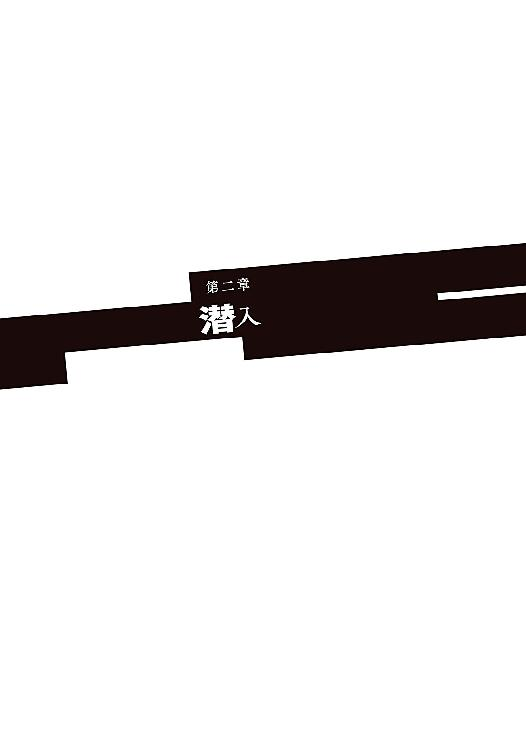
冷たい風が馬車の上に吹いた。
ファムがぶるっと身を震わせ、
「ぶわっくしょん！ ......うぃー」
「......おっさんかお前は」
「寒いんだからしょうがないでしょ」
「そんな格好をしておるからじゃ」
「うっさいわね。......っ、っくしゅ」
もう一度、今度は小さなくしゃみをして、ファムはマントを体に巻き付けるのだが、短すぎるマントは防寒の役には立ってくれそうにない。
ソーマは荷物の中から毛布を引っ張り出してファムに放り投げた。
「ほら」
「あ、ありがと」
ファムが毛布にくるまりほっと息をつく。
「それにしても冷えるわね」
「そうだな」とうなずいたソーマは、「今どの辺なんだ？」と御者台に声をかけた。
御者台のウルスがちらりと振り返って笑い、
「ちょうど今見えてきたところだ」
その言葉にソーマたちは一斉に立ち上がって前を見た。ぽくぽくと蹄を鳴らして進む馬車の行く手には紅葉真っ盛りの山脈が広がっている。山裾にはぐるりと取り囲むように大きな河が流れ、その河口付近に、万年雪のような白い建造物が突き出ているのが見えた。
「あれが中央管理教会の総本山、そのど真ん中に建つ大聖堂だ」
「あれが......」
大聖堂の周囲には、樹氷のような尖塔がいくつも並んでいる。それら教会施設を囲むように街並みが広がり、城壁は大河に沿って海まで続いていた。
聖都ニューヤード。ファラディース最大にして最古の街を、一行はそれぞれの思いを胸に見つめる。
聖都に近付くと、川のこちら側の岸にテントが並んでいるのが見えた。一つに何百人も収容できる大きなテントだ。それが十、二十、三十......数え切れないほどたくさん並んでいる。無数のテントの周囲には、それにふさわしい大勢の人々。肌の色も違えば、言葉の訛りも少しずつ違う。男もいれば女もいる。大人もいれば子供もいる。何一つ共通点のない、何万人という人々が、テントの周囲に集まっていた。一見すると難民キャンプのようであるが、住処を追われた難民とは違って、どことなく浮かれているような感じがあった──祭りの前夜のような。
「これが全部、箱船に乗るために集まってきた人たちなの？」
教皇ディアドラが発表した「箱船復活計画」の知らせは瞬く間に大陸中を駆け巡った。
計画に対する人々の反応は当初は冷ややかなものであった。
世界の滅亡などあるわけがない。箱船伝説は作り話だ。箱船なんてものは実在しない。
教皇は気が触れてしまい、ありもしない妄想に取り憑かれたのだと言う者すらいた。
けれど、計画が教皇の独断ではなく、全ての枢機卿の同意によるものであることが伝わり、さらに教会が具体的な行動に移り始めると、風向きは変わり始めた。
教会はまず、先月復旧されたばかりの大陸横断鉄道を含む、全ての公共交通機関を無料化した。街道に臨時の長距離乗合馬車を走らせ、海路にもあらん限りの輸送船を出した。もちろんこれらも無料で利用でき、移動中の食事も全て教会側で用意した。これによってどこの誰でも、一文無しであっても聖都まで来ることが可能になった。
そうして大陸各地からやってきた人々が、川沿いのテントに集まっているのだった。
「教会は本気なんだ。本気で箱船を復活させて、大勢の人を連れて違う世界に行くつもりなんだ......」
川沿いを埋め尽くす群衆を見回して、ファムがうめくように言った。
教会が本気なのは前から分かっていた。けれども、頭で分かっているのと、こうしてその準備過程を目の当たりにするのとでは理解度がまるで違う。
「でも、これだけの人数をどうやって？」
「これだけではなかろう。これからもっと増えるぞ」
メルヴィーユが前後を見回しながら言った。ソーマたちの前にも後ろにも、人の列は延々と続いている。
教会が発表した〝審判の日〟は今月最後の、そして今年最後の日だ。ファラディースは来年を迎えることなく、神が悪魔を一掃するために起こす大洪水に吞み込まれて消える。
「事実だとして残り一ヶ月か......」
ソーマが呟いたとき、前方から数人の騎士たちがやってきた。
「箱船の乗船希望者か？」
ウルスは御者台から降り、騎士たちに一礼してからこう言った。
「ああ、いえ、違います。私どもはルナール商会の者です」
聖都に潜入するための噓──ではない。〝箱船の守り人〟の幹部であるルナールの本業は商人なのだ。彼が経営するルナール商会は聖都に本店を持ち、教会とも取引がある老舗であった。商会の主であるルナールはソーマたちに先んじて聖都に戻り、次なる作戦の準備をしている。
「ルナール商会か」
「はい。騎士団の方々にはいつも御世話になっております」
ぺこりと、本物の商人のように頭を下げるウルス。
騎士は鷹揚にうなずいて、
「この列は乗船登録待ちだ。街に入るなら東門に回れ」
「ああ、ご親切にどうも」ウルスはまたぺこぺこ頭を下げて、「それにしてもすごい数ですなあ。大陸の全ての人間が集まったかのようです」
騎士は苦笑した。
「商人が大陸の人口を知らないとは言わせないぞ。ここに集まったのは、多めに見積もっても精々二割。元々の聖都の人口と合わせて、ようやく三割というところかな」
「それでもたいした数です」ふっと表情を曇らせて声を潜め、「......本当に世界は滅びてしまうのでしょうか？」
「さてな」と騎士は意外にもあっけらかんとした様子で答えた。「教皇猊下がおっしゃるんだから間違っちゃいないんだろう。けれども俺には半信半疑だ。ここに集まってる連中もそうじゃないかな？ 本気で信じてる奴もいないわけじゃないが、タダ飯が食えるから来ただけだとか、面白半分、物見遊山な連中も相当混じってるよ」
「後は私どものような商人ですな」
ウルスはにやりと笑う。
聖都に集まり、箱船の復活を待つ人々に教会は無償で衣食住を提供している──仮設住宅の建設が全く間に合わずに大半はテント暮らしだが、食料と衣類、燃料などについては、商人たちが各地をかけずり回って集めてきたおかげで、必要量が確保できている。
「世界の危機に乗じて荒稼ぎとは、地獄に落ちるぞ」
「地獄の沙汰も何とやら、ですよ」
ウルスは笑いながら御者台に戻った。手綱を操り、馬車を列から出して東門へと向かわせる。騎士たちから十分に離れたところで唇を嚙み、
「地獄の蓋を開けようとしているのは教会なんだぞ......」
東門へと回り、そこでもかなり待たされて、日が暮れる頃にようやくソーマたちは街の中に入ることができた。振り返ると東門の検問所は松明を掲げて業務を継続している。
箱船復活計画が発表されて以来、聖都に出入りする人の数は激増した。通常通りの受付では到底間に合わないため、時間を延長して夜間にも検問業務を行うようになったのだ。人員が十分であれば二十四時間受付にしたいのが教会の本音で、「さすがにそれば勘弁してくれよ」というのが現場の声であった。
とにかく忙しすぎて一件一件精査してられないのだろう、荷物をきちんと調べられることもなければ、〝悪魔憑き〟として手配されているはずのソーマが見咎められることもなく、至極あっさりと検問を抜けることができた。
「うわぁ......きれい」
街並みを目にしてファムが目を輝かせ、うっとりとため息を漏らした。
一列に並んだ街灯のみならず、商店の看板、通りに面した窓という窓から光が溢れ、街は日没後とは思えない明るさだ。そのまばゆい光に照らされて、道行く自動車のボンネットも、馬車の馬具も、通りを行き来する人々の装飾品も、キラキラと輝いている。
「何じゃ板っ切れ。お上りさん丸出しじゃな」
検問の間姿を消していたメルヴィーユが馬車の荷台に実体化してファムをからかう。
ファムはキッと目つきを鋭くして、
「っさいわね。別にいいでしょ。てかあんたも聖都は初めてでしょ。素直にはしゃいだらどうなのよ。その方がかわいげあるわよ」
「と言われてものう......」
メルヴィーユは輝く街並みを何の感動もなく眺める。
「もしかして見覚えがあるのか？ 実は聖都に来たことがあるとか」
「そういうわけではないんじゃが......。とにかくこれは別に珍しく感じない。なんじゃろうな？」
「どこかで似たような光景を見たことがあるとか？」
「どこでよ？」とファム。「あたしもこれまであちこち行ったけどさ、夜でもこんなに明るい街、他にないわよ」
実際ファムの言う通りであった。聖都ニューヤードは世界最大の街、中央管理教会の総本山ということもあって、失伝機関の保有数も世界一である。その膨大な電力源のおかげで、聖都ではありとあらゆる家に電線が引かれ、一般家庭でもふんだんに電気が使える。ほとんどただ同然で使い放題なのである。
「......もしかしたら、メルは楽園の生まれなのかも」
「は？ 急に何言い出すのよ？」
ソーマのふとした呟きにファムが首を傾げた。
「いやほら、創世神話の一節にあるじゃん。『輝きは楽園の隅々まで照らし......』って。楽園にはきっと、ここよりもずっと明るい街があったんだよ。メルがそれを、もっと立派な街を知っているのだとしたら、聖都をつまらなく感じることにも説明が付く」
「なるほど。面白い仮説じゃな」
「でもそうしたらメルヴィーユは何万歳のおばあちゃんってことにならない？」
「それは嫌じゃな。というか、悪魔でもそんなに長くは生きられんよ」
「違ったか。まあ適当に言ったし」
「お前たち。あまり大きな声でそういう話はするなよ」
と手綱を操るウルスが注意する。
「あ、ごめん」
「まあ誰も聞いちゃいないと思うがな。念のため油断はしないことだ」
敵のお膝元なんだから──そう言いながらウルスは馬車の向きを変え、大通りを右に折れた。少しだけ細くなった道をしばらく進むと、広い敷地を持った商館が見えてきた。ルナール商会の本店である。馬車ごと入って行くと、商館の玄関に座っていた少女──ラビィが飛び上がるように立ってこちらへと走ってきた。
「遅い！」
「いやあ済まん済まん。道がやたらと混んでてな。ルナールは？」
「もうみんな集まってる。こっち」
ウルスが御者台から降りた。続いてソーマたちも荷台から降りる。商会の人間──もちろん〝箱船の守り人〟のメンバーだ──がウルスから手綱を預かり、馬車を裏手へと引いていく。
ソーマたちはラビィに案内されて商館の中へ。
電気照明で煌々と照らされたホールに、メルヴィーユが白けたように鼻を鳴らした。
「明るすぎるのもムードがないのう」
「しゃべってないでこっち！」
ラビィが腰に手を当ててメルヴィーユを叱った。さすがのメルヴィーユも小さな子供相手に怒鳴り返すようなことはせず、
「お姫様がご機嫌斜めじゃ。急ごうぞ」
階段を上って二階へ。警備員の立つ扉を開けて部屋に入ると、ルナールを始めとした〝箱船の守り人〟メンバーの緊張した顔が、ソーマたちを出迎えた。
「遅くなって済まない。これで全員そろったな？ ルナール、状況はどうなってる？」
教会の箱船復活計画を阻止する──そのために必要なのは情報だった。
箱船の復活はいつ、どこで、どのように行われるのか......計画の概要すら分からないのでは阻止のしようがない。
計画をウルスたちに伝えたルナールはすぐに聖都にとって返し、仲間と共に情報収集に当たっていたのだが、
「......正直に言うと芳しくない」
〝箱船の守り人〟は仲間を何人も教会に潜入させている。一般職員だけではなく、騎士の中にすらメンバーが混じっているのだ。それでも中枢には近付けない。
「分かったことと言えば精々、計画に参加している枢機卿たちの名前くらいだ」
強引な作戦も考えられた。枢機卿の誰かを拉致して、情報を無理矢理聞き出すのだ。だがそんなことをすれば教会側はこちらの存在を察知し、以降は厳しい警戒態勢を敷くだろう。そうなってしまっては後の活動に支障が出る。それは避けたい。
「すると、やはりソーマくんたちの出番か......」
「遺憾ながら」
ウルスの言葉にルナールが同意する。
ソーマとメルヴィーユが悪魔の力を用いて中央管理教会に潜入し、箱船計画の概要を調べる。単身敵中枢に忍び込むわけで、当然危険は大きい。
「済まんな。本来部外者のはずの君たちに頼ることになる」
「それは言わないで下さい。僕たちにとっても大事なことです」
社交辞令ではなく、ソーマは言った。
箱船計画の中枢にはトーマがいる。ソーマはそう、確信していた。あるいは全てがトーマの差し金なのかも知れない、とすら思っている。
「実行はいつだ？」
「すぐにでも......と言いたいところだが、まだ段取りが整っていない。二、三日くれ」
「ではのんびり観光でもしていればいいのじゃな」
「遊びに来たんじゃないのよ」
場違いにのんきなことを言うメルヴィーユにファムが苦言を呈すが、
「いや、それでいい」とルナール。「地理も頭に入ってないのではさすがにまずい。観光客を装って歩き回り、特に教会周辺の道路は頭に叩き込んでおいて欲しい」
「ほれ、儂が正しいではないか」
勝ち誇るメルヴィーユ。ファムがムッとして唇をとがらせるが、仲間たちの手前、いつもの口げんかは自重する。
「教会内部の、関係者以外立ち入り禁止区域についても、分かっている限りは図面に起こしてある。目を通しておいてくれ。とりあえずそんなところか」
「分かった」
その日はルナール商会が経営するホテルに泊まり、翌朝、ソーマはメルヴィーユ、ファムと共に街に繰り出した。
明るい光の下で見る聖都は、昨夜とは印象が全く違っていた。夜の光り輝く街は文明の最先端、豊かな近代都市を思わせたが、朝の聖都は白い石造りの建物が建ち並ぶ、荘厳な歴史の街だ。街並みの向こうに目印のように、白い尖塔が無数に突き立っていた。
「あれが中央管理教会の総本山か」
近々潜入することになる敵本丸。まずはその姿を確かめておこうと、ソーマは尖塔の方へと足を向けた。
聖都の通りはどこも、歩道と車道が完全に分離されていて歩きやすかった。交差点の一つ一つに案内表示が出ているのは仕事や観光で訪れる人たちへの配慮だろう。
「これならまず迷うことはないな」
とソーマは安心したのだが、ファムは全く逆の感想を抱いた。
「いざってときに身を隠せる場所も全くないわよ」
言われてみれば確かにその通りだった。
「まあそこは儂らにはそう問題にならんじゃろ。儂は空を飛べるし、ソーマには降魔がある」
「見つからないのが一番だけどな」
さらに進む。聖都ニューヤードは街の中央に、中央管理教会総本山があり、総本山を囲むように教会関連施設が並んでいる。
荘厳な雰囲気を漂わせる風景の中、ひとつだけ飾り気の少ない無骨な印象の建物があった。騎士団の本部である。
ソーマは足を止めると、騎士団本部に出入りする騎士たちを見やった。
「どうしたの？」
「ん。もしかしたらロウがいるかもと思って」
「あの陰険眼鏡か」とメルヴィーユが酷いことを言う。
「聖都に戻ってるはずなのよね。アルディエルも一緒に。元気でやってるかしら？」ファムは少し考え込んで「あの二人、味方になってくれたりは......」
「どうじゃろうな。恩を売ってあるとはいえ、あの眼鏡は相当な石頭......っと」
呟くメルヴィーユが通行人にぶつかりそうになり、ソーマはさっとメルヴィーユを引き寄せた。通行人が「ああ、これはすいません」と会釈して通り過ぎていく。
ソーマたちは教会施設がある区画の外側を反時計回りに進んで行く。時計でいうなら六時の位置が〝祈りの広場〟である。この広場は教会の正面にあるので、天を衝く尖塔も、教皇が市民に姿を見せるときに使う白いバルコニーもよく見える。
広場には大勢の人がいた。その中に、石畳の上に直に座り、教会に祈りを捧げている老夫婦がいた。側を通り過ぎるとき、彼らの呟きが聞こえてきた。
「......教皇ディアドラ様、どうか我らを滅びの運命からお救い下さい......」
「教会の言うことを信じる人もいるのね」
帰り道、ルナール商会の敷地に入ったところでファムがそう言った。
何のことだか一瞬分からなかったが、ソーマはすぐに昼間の老夫婦のことを思い出す。
「まあ普通はそうだろ。教会はこれまでずっと人々を守るために活動してきたんだ。俺だって、ファムたちの島が襲われて大勢が殺されたのを見てなかったら、〝箱船の守り人〟の言い分を信じようとは思わなかったよ」
「うん......」
ファムが表情を陰らせる。男爵のことを思い出したのだろう。実の父のように慕っていた相手の死を。
「ファムは『教会が憎い』とは言わないんだな」
「ん」曖昧なうなずき。「そりゃあね、全く憎くないとか言ったら噓になる。けど、男爵は自分の信念と使命のために戦った。教会だってそうでしょ？ やり方は気に食わないけど、別に世界を滅ぼしたくて、箱船を復活させようとしてるわけじゃないはずよ。......お互いの正義がぶつかった結果、不幸な出来事が起きてしまった......そう考えるようにしてる」
「そうか」
呟くソーマ。ファムはその横顔をうかがって、
「ソーマはさ、まだお兄さんのことが憎い？ 殺したいほど」
ソーマは足を止めてファムの方を見た。返事をしようとしたそのとき、商館のドアが開いて若い男が飛び出してきた。
「あ、戻ってきた！」若い男はソーマたちを指さしてそう叫び、すぐに商館に頭を突っ込むと、「ソーマくんたち戻ってきましたよ！」
するとすぐに商館からウルスが出てきた。
「何？ 何か用事？」ファムが問う。
「中に」
険しい顔で短く告げ、ウルスは商館内に引っ込む。表ではできない話──事態が動いたのだと察してソーマたちはすぐに商館に駆け込んだ。
「下見の方は？」
「一応ぐるっと回ってきたけど......何かあったの？」
「教会に動きがあった。今夜、何かやるらしい」
「何かって？」
「何かだ。教皇が枢機卿に非常招集をかけた。今夜九時、『大事な話し合い』が開かれると、枢機卿の家にメイドとして潜入している仲間からの連絡だ。言うまでもないことだが、その枢機卿は箱船計画に関わっている。ソーマくんたちには今夜教会に潜入し、その話し合いの様子を探ってきて欲しい」
ソーマは無言でうなずき、メルヴィーユを見た。
「我が主のご命令とあらば、儂はいつでもどこにでも参る所存じゃ」
準備時間が足りなかったこともあって、作戦は古典的なものになった。
教会施設は全てが関係者以外立ち入り禁止というわけではない。中央管理教会は「開かれた教会」を標語として、大聖堂や歴史資料室、その他少なくない区画を一般開放している。これは自分たちが支配者ではなく、人々の暮らしを支える組織であることを示すための政策だ。もちろん二十四時間誰でも入れるわけではなくて、観覧には時間制限があるのだが。
ルナール商会から教会区画へと舞い戻ってきたソーマとメルヴィーユは、観覧時間のぎりぎりに、教会付属図書館に入り込んだ。そのまま書架の陰に隠れて待つ。
図書館の閉館は午後五時。閉館後に客が残ってないか確かめるための見回りがあったが、やり過ごすのは簡単だった。六時を過ぎると残業をしていた職員も帰宅し、図書館は無人となった。それを確かめたソーマたちは図書館の二階に陣取った。ここの窓からは教会区画の裏手が見える。臨時招集をかけられた枢機卿が自宅からやってくるなら裏手の門を使うはずで、ここにいれば見落とすことはない。
メルヴィーユが出窓に座り、すうっと姿を消した。こうして実体化を解除していれば、外から見られることもなく、一方的に監視ができるという寸法だ。
「頼んだぞ」
『そいつはご褒美次第じゃな』
姿を消したメルヴィーユの声だけが返ってくる。
「ドーナツ三つ」
『十』
「五」
『七。譲れん』
「自分で見張る」
『ドーナツ五つと、熱いキッス、それから一緒に風呂でどうじゃ』
「三つと風呂」
『仕方ないの。それで手を打つか』
ソーマの方は外から見えない位置に身を伏せた。予定では会議は午後九時から。枢機卿が現れるのは早くても八時頃だろうから、しばらくは待機が続く。潜入作戦は神経をすり減らすことが予想される。休めるときには休んでおいた方がいい。
しかし目を閉じて体を休めようとしたソーマの耳に、含むような笑い声が忍び込んできた。
「なんだ？」
『ちょいと懐かしくなっての。二人だけで旅をしていた頃は、こんな夜が幾度もあった』
「......俺が日記を書いてたときは『じじ臭い』って言ったくせに」
『そんな昔のことは忘れたわ』
こんにゃろう、とソーマは苦笑する。
「のう、ソーマよ」
不意にメルヴィーユが姿を現した。膝を抱えて窓枠に収まるような格好は、誰かが窓を見上げたら丸見えだ。
「おい、お前何やって、」
ソーマは慌てたが、
「復讐などやめにせぬか？」
思い詰めたようなその横顔に言葉を失う。
「仇討ちなどやめて、このまま二人だけでどこかに......」
ソーマは自分の目が信じられなかった。あのメルヴィーユが、いつもちゃらんぽらんで、真意の不明な愛の言葉を安っぽく連発する小悪魔がこんな、すがるような。
「本気なのか......？」
「本気も本気じゃ。儂は怖い。このまま進めばよくないことが起きる。儂はソーマを永久に失ってしまう......そんな気がするのじゃ」
メルヴィーユが音もなく窓枠から降りてきた。起き上がりかけたソーマの腰にまたがり、身をかがめて、細い両腕をソーマの首へと回す。
「儂はそなたを失いたくはない......」
「......」
「死んだ女のことなどもうよいではないか。それより儂と生きておくれ......」
悪魔の華奢な背中が震えていた。ソーマは彼女の孤独を思う。ソーマの復讐が成れば──メルヴィーユとの契約が達成されれば、ソーマの魂はメルヴィーユのものとなる。ソーマは死ぬ。メルヴィーユは一人になってしまう。
それでいいのだろうか？ 命など惜しくはない。けれど、
「メル......」
震えるメルヴィーユがとても哀れで、そして愛おしいとソーマは感じた。
今更後戻りはできない。けれどせめて今だけは、孤独を感じさせないようにしてやりたいと、お前は一人じゃないと伝えたいと思った。思いは自然に行動になり、ソーマは両腕を広げてメルヴィーユの華奢な軀を包もうとする。が、
「なーんてな！」
ソーマの手が触れる寸前、メルヴィーユは意地の悪い笑みを浮かべると、素早く飛び上がって宙に逃れた。
「信じたか？ 今のは迫真の演技じゃったろ？」
「お前、こんなときになあ──」
ひゃっひゃと笑うメルヴィーユを見上げてソーマは声を荒らげようとし、そこでふと気付いた。
「──お前、もしかしてびびったんじゃないか？」
「なぬっ？」
「そうだろ？ 俺がいつもみたいに追い払おうとしないから、何か妙な雰囲気になりそうだったから動揺したんだろ。意外に押しに弱いんだな」
「なななな何を！ ここここの儂が押しに弱いだなどと、そそそんなことがあるものか！」
図星──ものすごい図星を指されてしまったのだろう、メルヴィーユは両手をバタバタ振り回して抗議（？）する。顔は真っ赤で目は渦巻き。
うろたえるメルヴィーユが面白すぎてもうちょっとからかってやりたかったが、ちょうどそのとき窓から光が差し込んできた。二人はすぐに表情を引き締める。ソーマは窓枠の下に隠れ、メルヴィーユは姿を消して外の様子を見る。
『車じゃ。いかにもな高級車が裏手の門から入ってきた』
メルヴィーユがそう言う。ソーマの耳にも車のエンジン音が聞こえていた。
『車が止まった。誰か降りてくる』
ソーマはそっと体を起こし、外の様子をうかがった。門の内側にある車止めに誰かが立っている。性別も不詳なゆったりした服装。高位聖職者の中でも選ばれた人間にしか許されない、黄金色の帯を肩から垂らしている。枢機卿だ。ターゲットが現れたのだ。
ソーマは素早く身を翻して一階に降りた。玄関の鍵を内側から開けて、ソーマだけが外に出る。中に残ったメルヴィーユが鍵を閉め、それから実体化を解除してドアをすり抜け表に出てくる。密室からの脱出完成。翌朝出勤してくる職員たちもよもや、図書館内に誰かが潜伏していたとは思うまい。
実体化を解除したメルヴィーユは人の目には見えなくなる。物陰に隠れる必要もなく空を飛んで周囲の様子を確かめ、
「今じゃ。向こうの建物まで行ける」
ソーマはメルヴィーユの案内に従い、建物の陰や植え込みを利用して枢機卿を追う。
枢機卿は自分が尾行されているなどとは考えもしないのだろう。時計を気にしながら、まっすぐに中央管理教会、その夜間通用口から中へと入っていった。後を追うには守衛の前を通らなくてはいけない。ここが一つの山場だ。
『降魔展開──〝陽炎軍妃〟』
メルヴィーユが呪文を唱えた。〝陽炎軍妃〟はその名の通り、陽炎を操り幻影を生み出す悪魔である。ソーマの傍らに朧な幻影が生じ、ファムの姿をしたそれが、人目をはばかるように歩き出す。どこからともなく現れたそれを守衛が見た。幻影のファムはぎょっとしたように飛び跳ねてから走り出す。
「あ、待て！ 夜間は立ち入り禁止だぞ！ どこから入った！」
守衛が幻影を追いかけて持ち場を離れる。その一瞬に、ソーマは守衛の死角を突いて通用口から飛び込んだ。
「幻影のモデルなんて誰でもいいだろうに、なんでファムなんだ？」
『不審者イコール泥棒イコール板っ切れじゃ』
幻影は近くの植え込みに飛び込んだところで霧消するようにセットしてある。もしかしたら新たな怪談を生み出してしまうかも知れないが、ソーマの知ったことではない。
通用口から続く細い廊下を抜けると、昼間は一般の人でも入れる大きなホールに出る。枢機卿はホールを横断して反対側の通路に入るところだった。追いかける。通路の奥の階段を枢機卿は上った。ソーマたちは表でやったのと同じように、姿を消したメルヴィーユを先行させて様子を確かめながら尾行を続ける。枢機卿は階段を二階分上り、通路を進み、別の階段をさらに上る。そのまま上階を目指すのかと思いきや、四階の途中の廊下で立ち止まった。左右を見て、壁に両手を押し当てる。壁が動いた。
「隠し扉！」
ソーマは思わず声を出してしまい、慌てて口をふさいだ。幸いにして気付かれなかったようだ。
枢機卿が隠し扉の中に消える。ゆっくりと壁が閉まる。
ソーマたちも壁の前へ。枢機卿が触れていた辺りを観察すると、小さなスイッチが見つかった。押す。音もなく扉が開く。ソーマはかすかな緊張を覚えた。
隠し扉の内側には螺旋階段があった。上にも下にも延々と急な階段が続いている。枢機卿の足音は下から聞こえてくる。
『いかにも怪しくなってきよったな』
「ああ。気を引き締めていこう」
小声で応じ、足音を殺して階段を降りる。しばらく進むと前方がぼんやりと明るくなった。明かりは歩くリズムで揺れている。枢機卿が持つライトが石壁に反射しているのだろう。
近付きすぎないように気をつけながら、尾行を続ける。
螺旋階段の終着点からは再び石畳の、若干広めの廊下が続き、さらに奥にまた階段があるようだった。
ふと、ソーマは強烈な違和感に襲われた。
「おかしい......」
『何がじゃ？』
「会議一つに何でこんなにこそこそする必要があるか？」
箱船復活計画が極秘だった頃なら分かる。〝箱船の守り人〟の妨害を回避するため、あるいは無用の混乱を避けるため、教会内部でも一部の人間にしか事情を明かさず、全てを秘密裏に進めるためなら、隠し部屋で秘密会議も必要だろう。
だが今はもうその段階ではない。教皇は箱船復活計画を公にし、乗船希望者を聖都の周囲に大勢待機させている。世紀の大規模プロジェクトとして実際に動き出している計画の会議を、こんな風に人目に付かない場所でやる必要がどこにある？
『箱船復活計画には、公にされていない「裏」があると？』
その可能性もある。けれどソーマが感じたのはもっと違うことだ。
「罠......？」
「ようやく気付いたか」
「っ！」
背後からの声に、ソーマは反射的に前に跳んでいた。石畳の上を前転しながら腰に手をやり即応体制。それでも一手、いや三手ぐらいは出遅れた感がある。
敵地ど真ん中で注意をおろそかにするほどソーマは間抜けではない。いつ何時想定外の事態が起きてもいいように全方位に注意を払っていた。
そのはずなのに、背後を取られた。声をかけられるまで全く気付かなかった。
こめかみを嫌な汗が伝う。
相手は間違いなく凄腕だ。こちらが体勢を立て直す前に、致命的な攻撃の二、三発は飛んでくるだろう──そう覚悟したソーマはしかし、あっさりと振り向いて立ち上がることができた。相手は仕掛けてこなかったのだ。それは何故かと訝る前にさらなる驚きがソーマを襲った。
「......〝箱船の守り人〟のスパイが教会内部に浸透していることは分かっていた。生き残りが聖都に集まってきていることも、その狙いが箱船復活計画の阻止であることもな。しかし奴らは計画の全貌を知らない。そこで偽りの『緊急会議』の情報を流せば当然のように食いつく。そしてスパイの動きを追えば潜伏先も割り出せるし、こうして忍び込んできた相手を捕らえることもできる」
どこか懐かしさを感じさせるその声。
目を見開いたソーマを、ソーマに似た、しかしソーマよりもずっと大人の顔が迎えた。
「トーマ......」
「久しぶりだな、弟よ」
一年前に姿を消したソーマの兄、アラドの街を壊滅させ、レンリを死に追いやった張本人、トーマ・ノイン・スオウがそこにいた。
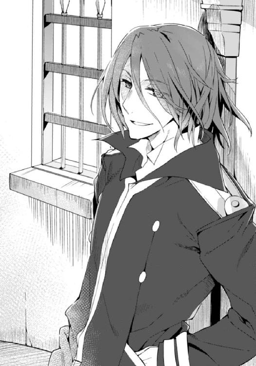
いかにして冷静さを保つかが問題になる、と思っていた。
ソーマは自分が意外に激情家であることを知っている。
レンリを死なせ、故郷を滅ぼした憎むべき相手。一年もの間探し回った仇敵──トーマを眼前にしたなら自分は我を忘れてしまうだろう。そうなってしまっては勝ち目はない。感情のままがむしゃらに突っ込んでは一年前の再現だ。レンリの仇を討ちたければ、荒ぶる心を落ち着かせて、冷静に、冷酷に、冷えた刃でトーマを貫くのだ。
そう、思っていた。
けれど実際はどうだろう。
ソーマは動けなかった。
意外だったからではない。
トーマが教会に与していることは分かっていた。その教会に潜入すれば、トーマも深く関わっている──いや、トーマが主導的な立場にいるであろう箱船復活計画に探りを入れようとすれば、こうなる可能性は十二分にあると分かっていた。
当然の遭遇であり、待望の邂逅である。
なのにソーマはすぐには動けなかった。それは、ためらいだった。
動けないソーマを見下ろして、トーマはふ......と笑った。その傍観者のような笑い方を目にした瞬間、怒りが燃え上がった。
「トオオオオオオオオオオオオオマアアアアアアアアアアアアアアアアアアアア！」
「ソーマ！」
メルヴィーユが叫ぶ。ソーマの耳には入っていない。事前の心構えも何もかも消え失せていた。激情に駆られたソーマは一抱えの炎となって切り込む。
トーマの顔に驚きが浮かぶ。冷静さを失っていてもソーマの動きは速かった。悪魔たちと戦い続けてきた経験が思考の蒸発したソーマの体を半ば自動的に動かす。下手に考えていない分鋭くなった剣閃は、反応することすら困難な速さでトーマの喉笛に食らいつこうとする。しかしトーマの顔に焦りはない。
トーマが右手を挙げ、喉を守ろうとする。ソーマは構わず振り抜いた。手指もろとも喉を切り裂くつもりだったし、勢いの乗った切っ先は間違いなく思い通りの結果を出すはずだった。
「──っ！」
手応えに違和感。切った感触が全くない。見ればトーマが右手で刃を止めていた。その手には何か布が巻き付けてあった。
「聖骸布か！」
メルヴィーユが驚いたように叫ぶ。あらゆる攻撃から持ち主を守ると言われている始祖アダムの遺産。その力を使って、トーマは魔剣の刃を防いだのだ。
トーマが手を翻した。聖骸布をからめて魔剣を奪い取ろうとしているのだと気付いたソーマはすぐに剣を引いた。そのまま間合いを取り直す。
「ソーマ」
「......済まない」
メルヴィーユに声をかけられ、ようやく冷静さが戻ってくる。やってしまった。考えなしに仕掛けるのはダメだと分かっていたはずなのに。
メルヴィーユはちらりと後ろを気にした。ソーマもすぐに気付く。二人が追っていた枢機卿が、魔力の波動を発している。
「メル、あれ......」
「うむ。人間ではないな。悪魔......かなり高位の奴じゃぞ」
正体を看破された途端、枢機卿──に化けていた悪魔はそれまでの年寄り臭い姿勢をやめてまっすぐに立った。たっぷりとした法衣を脱ぎ捨てると、現れたのは身長二メートルほどの人間型の悪魔だった。ただし顔には目も鼻も口もなく、背中には黒い六枚の羽が生えている。
「あいつは！」
ソーマは胸の古傷がうずくのを感じた。忘れもしない。一年前にトーマが呼び出した、ソーマの心臓を貫いて瀕死の重傷を負わせた悪魔であった。
無貌の悪魔が動く。トーマがそれを制し、ソーマに声をかけた。
「強くなったな。いい踏み込みだった」
うれしそうな笑みだった。ソーマはその笑みを過去に何度も見たことがある。剣術の稽古で一本取ったとき、ソーマの学校の成績が──ちょっぴりでも──あがったとき、トーマは今と同じように控えめに微笑んで、ソーマを褒めたものだ。
だからこそ許せなかった。理解もできなかった。あれだけのことをしでかして、レンリを始め大勢の人を殺しておいて、何故そんな風に屈託なく笑えるのだ。罪悪感の一つもないのか。
「トーマ......」
「......緊急会議があるというのは偽情報──罠だったようじゃな」
「その通り」
メルヴィーユの呟きにトーマが答えた。
「魔剣の主が反教会勢力と行動を共にしていることは分かっていた。教会内への潜入、となれば単騎で十二分の戦闘力を有する駒──魔剣の主が出てくるだろうということもな。まさかそれが我が弟だとはさすがに予想外だったが......」視線をソーマからメルヴィーユへと移して、
「ところで君は何者だ？ 見たところ悪魔のようだが」
「メルヴィーユ。ソーマの伴侶じゃ」
「なるほど、ソーマは悪魔に誑かされたのか......」
「誑かされてなんかない！」
「悪魔に取り憑かれた人間はみんなそう言う。俺は正気だ、これは自分の意思だ、とな」
トーマは冷ややかに言った。ソーマは何か言い返したかったが、不毛な言い合いをしに来たわけではないのだと思い直す。
「そっちこそ、悪魔に取り憑かれて正気を失ってるんじゃないのか？」
「まさか。俺はこいつと『取引』しているわけじゃない。完全に支配下に置いている」
「......悪魔の廃滅を願うくせに悪魔の力に頼るのか」
「使えるものは何でも使うさ。人類は手段を選んでいられる状況にはない」
「箱船もその一つだと？」
「そう」
答えるトーマは左手に白い石を弄んでいた。鶏の卵くらいの大きさで、石鹼のような微かな透明感がある。あれも始祖アダムの遺産なのだろうか。得体の知れない道具を警戒しながら、ソーマは問答を続ける。
「......箱船が蘇れば世界が滅びる、と〝箱船の守り人〟は言ってる」
「具体的には？」
かつてソーマがファムに投げたのと同じ問いだ。
ソーマは答えられない。トーマも答えは求めていない。
「〝箱船の守り人〟と称する連中は、自分たちの主張がどういうことなのか、何に根ざしているのかすら説明できない。そんなあやふやな、非科学的な主張が信頼に値するか？ 一方で教会には無数の資料が残されている。教会と天使の末裔はかつて箱船の所有権を巡って争った。破れた天使の末裔は聖都を追われたが、その際に〝楽園の指輪〟を盗み出した。......かくして箱船は誰の手も届かない異次元に消えた。くだらない争いの結果、人類は最大の至宝を自ら失ったというわけさ」
「......」
「我々は箱船を取り戻さなくてはならない。過去の過ちを清算し、未来を繫ぐために」
トーマは正面からソーマを見据えた。
「ディアドラの演説の内容は知っているな？」
「ああ......世界が洪水で滅びるって話だろ？」
「その顔だと信じていないようだな」
当たり前だ。この世に神なんていない。箱船は言うまでもなく、天使ですら人が造ったものだったのだ。神の実在を示すものなど何一つないではないか。
「今まで地上に悪魔がはびこりまくってたのを放置してた神様が、今更なんだって地上のことに介入する？」
いもしない神様が、との皮肉を込めて言ってやると、トーマは笑いも怒りもせず、質問で返してきた。
「創世神話の大洪水はどうして起こされた？」
意表を突かれてソーマは戸惑う。創世神話に置いて、始祖アダムと妻イブは、楽園が洪水で水没するから箱船を造って脱出することにした。その洪水の原因は、楽園に入り込んだ〝黒い蛇〟を退治するためだ。疫病と災いを振りまく〝黒い蛇〟。
「何が言いたいんだ！」
怒鳴るソーマ。その隣でメルヴィーユが表情を強ばらせた。
「まさか......同じことが起きると言うのか!?」
「そちらの悪魔は察しがいいようだね。その通り。世界を破滅に導く〝黒い蛇〟がファラディースで復活する可能性がある。ディアドラはそれを感じ取ることができる。教皇の、〝天印〟にはそういう力がある──いや、元々〝黒い蛇〟の脅威に対抗するために生み出された存在なんだ」
悪魔に対抗するために天使が造り出されたように、〝黒い蛇〟に対抗するために造り出されたのが教皇──〝天印〟の血筋。
「我々はかつての人類がそうしたように、箱船を蘇らせて洪水を起こし、〝黒い蛇〟を抹殺しなくてはならない。さもなくば人類は滅びる」
「洪水を起こす......だと？」
「言葉通りの『洪水』かは分からないがな。箱船にはその力があるはずだ」
トーマは軽く息をつき、ソーマをまっすぐに見据えた。
「ソーマよ、俺と共に来い。俺たちで箱船を蘇らせ、人類を魔の手から守るのだ」
ソーマはうなずかない。表情は険しい。トーマは少し考え、言った。
「......レンリのことか？」
「他に何がある！ 俺はレンリの仇を討つために悪魔に魂を売った。そしてここにいる」
ソーマは自分の意思を示すかのように、剣を握り、構え直した。
トーマは動じない。応戦する姿勢すら取らない。
「レンリが生き返る、としたら？」
「え......」
唐突に飛び込んできた言葉に構えが緩む。そんなソーマを見てトーマは苦笑いを浮かべた。
「一年前にも言ったはずなんだがな。頭に血が上りすぎていて聞いてなかったか」
思い出す。そうだ。確かに聞いた。
「レンリだけじゃない。父様も母様も、レンリの家族も街の人も全員だ。箱船にはその力があるんだ。〝楽園〟には老いも病もなかった。〝黒い蛇〟が現れたことで、〝楽園〟には死が戻ってきた。逆に言えば、それ以前は〝楽園〟では人々は永遠の命を持っていたということにならないか？」
「......」
「レンリは蘇る。お前が仇を討つ必要はない。俺たちに戦う理由などないはずだ。......もう一度言う。俺と共に来い、ソーマ」
「......」
レンリが生き返る──もう一度会える。お姉さんぶった叱り声が、ふんわりとした笑顔が、もう一度、ソーマの前に現れる。
そんなことが可能なのか。確証はない。けれど。そこに万に一つの可能性があるのなら。
──あの幸せな日々を取り戻せるのなら。
「......」
ソーマは剣を下ろし、
「誑かされるな！」
宙に浮き上がったメルヴィーユがソーマの横っ面を全力で殴りつけた。
不意を突かれたソーマはたたらを踏み、驚いてメルヴィーユを見上げる。
「何をほいほい敵の甘言に乗っておるか。阿呆、間抜け、お人好しの能なしのスカポンタン！ 死者が蘇るなど世迷い言ぞ！ 神にも悪魔にもできぬことが人間風情にできるものか！」
「でも......箱船なら......」
魔法のような旧世紀の技術をさらに上回る、神話世界の超文明の力があれば。
「それがあり得んと言っておるのじゃ！」怒鳴り、ため息をつき、「一年前のことを思い出すのじゃ。そなたの初恋の女が死んだことについて、こやつはなんと言った？ 『たいしたことじゃない』じゃぞ？ 後で生き返らせるから殺してもオーケーか？ 数字を足したり引いたりするみたいに、人の命を奪ったり与えたりする。そんな人間をそなたは信用できるのか？ 儂にはこやつこそ、人間の皮を被った悪魔に見えるわ！」
「......」
ソーマは目を瞬かせた。殴られたことよりも、今の言葉の方が遙かにガツンときた。
そうだ。全くその通りだ。
「メル。ありがとう」
幼なじみが蘇ると聞かされて曇った目を綺麗に晴らしてくれた相棒に、ソーマは素直に感謝を述べた。
「言葉などいらぬ。行動で示せ」
「分かった。帰ったら何でも一つ、言うこと聞いてやる」
「なんと!?」
メルヴィーユが喜色満面飛び上がる。
「じゃがそのためにはこやつらを蹴散らさねばならんな」
「ああ。頼りにしてるぞ」
「任せておけ。儂を誰だと思っている？」
「ご褒美に釣られたチョロい悪魔」
「未来の妻に対してその物言いであるか......」
嘆く口調で、しかしメルヴィーユは笑っている。いつもの調子を取り戻し、軽口を叩き合いながらも二人は臨戦態勢に移行する。
「お前なら分かってくれると思ったんだが......残念だよ」
それほど残念でもなさそうにトーマが呟き、通路の反対側では貌のない悪魔もじわりと間合いを詰めてくる。
ソーマとメルヴィーユは背中合わせ。ソーマはトーマと相対し、メルヴィーユは貌のない悪魔と相対する。
「......魔剣を引き渡せば見逃す、と言ったら？」
ソーマは石畳に唾を吐いた。
「お前なんかにレンリの形見を預けられるか、豚野郎！」
叫ぶと同時に剣を抜き、トーマめがけて飛びかかる。
汚い言葉を使ったのは半分は挑発、もう半分は自分を鼓舞するためだった。
今、目の前にいるのは兄ではない。たまたま自分と同じ家名を持つろくでなし。独善的で押しつけがましいくそったれであり、幼なじみの仇である。容赦も敬意も必要ない。ぶちのめされて当然の屑なのだ──そんな風に自分に言い聞かせなければならないことが、実はまだ肉親の情が残っていることの証明ではあった。
「おおおおおっ！」
本人すら意識しないかすかな情、それを追い払おうとソーマは雄叫びを上げる。
対するトーマは冷静だった。ソーマの裂帛の突きを、聖骸布を巻き付けた拳で滑らせるようにそらす。体勢を崩されたソーマの肩にトーマの手が伸びる。
ソーマは不格好に相手を突き飛ばして後ろへ下がる。トーマが同じ速度で踏み込む。
顔面めがけて振り下ろされる拳をソーマは首をそらして避ける。トーマがパッと手を翻し、聖骸布をソーマの首に巻き付けた。あらゆる攻撃から着用者を守ると言われる聖骸布は、それ自体が不変不朽の性質を持ち、切り裂くことも燃やすこともできない。悪魔の力も通用しないのは先刻証明済み。これで首を絞められたら脱出は不可能。最強の盾は最強の攻撃手段になり得る。
だが聖骸布を攻撃に使ったことで、トーマ自身の守りは薄くなった。そこにソーマは勝機を見いだす。腰をひねって二人の間に隙間を作り、魔剣の切っ先をトーマの下顎めがけて滑り込ませる。察したトーマが攻撃を中断して離れたため、切っ先は顎の先をかすめるに終わった。攻めに回ったソーマが横薙ぎの一撃。仇の脇腹を狙った剣が階段入り口の壁に触れ──迷わず切り進む。降魔〝経津主〟の力だ。だがトーマは巻き取った聖骸布で先ほどと同じように魔剣を受け流してしまう。
「降魔展開──〝黒妖犬〟！」
ソーマの影から輪郭の朧な黒犬が無数に出現する。上下左右から一斉に飛びかかられては聖骸布でも防ぎ切れまい。そんなメルヴィーユの思惑をあざ笑うかのように、トーマが白い石を握り込むと、虚空に白い腕が現れた。トーマが使役する貌のない悪魔だ。
「こいつ、瞬間移動じゃと!?」
「彼の名前は〝千の無貌〟だ。『こいつ』などとは呼ばないでやってくれ」
トーマが余裕を崩さず言う。
悪魔──千の無貌は妖犬の頭を無造作に捕まえて動きを止める。と、妖犬が突然爆ぜた。黒妖犬はまたの名を〝荒野の雷火〟。その身が帯びる高電圧は、触れれば人間など骨も残さず焼き尽くす。爆発が直撃した千の無貌の両腕がひしゃげ、しかし次の瞬間には元通りの傷一つない腕に戻って、トーマに襲いかかる黒妖犬を片っ端から潰していく。暗い通路に連続した爆発音が響き渡り石壁を揺らす。
「ソーマ！」
「おう！」
攻撃はあっさりと防がれてしまったが、それならそれで構わなかった。〝千の無貌〟がトーマを守ろうと場所を変えたおかげで挟み撃ちの構図が崩れたからだ。
ソーマとメルヴィーユはトーマに背を向けて通路を奥に向かって走り出した。
ここで戦い続けるのは得策ではない。
屋内の狭い空間では強力な降魔は使えないし、何よりファムたちのことがある。
今夜、大事な会議があるというのは罠だった。今頃教会の別働隊が、ルナール商会に詰めるファムやウルスたち、〝箱船の守り人〟を制圧しようと動き出しているに違いない。
だから優先するべきはここからの脱出。仲間の救援だ。
「逃げても無駄だ。その先は行き止まりだぞ！」
トーマが叫ぶのが聞こえた。トーマも悪魔も追っては来ない。〝黒妖犬〟の足止めが効いている──そう長くは保つまいが。
（ごめん、レンリ......仇は後で必ず......）
亡き幼なじみに心中で詫び、ソーマは石畳をひた走る。
トーマが警告した通り、通路はほどなく行き止まりになった。突き当たりには鉄格子の嵌まった小部屋。異端審問──と言う名の拷問──に使っていたのだろう、小部屋の壁に拘束具が設置されているのを見つけてメルヴィーユが顔をしかめる。長い歴史を持つ組織にはどうしても暗部ができるものだ。その黒い染みの残る小部屋にソーマとメルヴィーユは飛び込んだ。ソーマが石壁に手をつける。
「降魔展開──〝木霊〟！」
鐘を打つような澄んだ音が連続して周囲に響き渡る。音は壁を伝い、天井を這い、その内部へと入り込んでは複雑に反響してソーマのところへ戻ってくる。目を閉じ、耳を澄ませていたソーマはすぐに音の聞こえ方が違うところを発見した。
「メル、そこ！」
ソーマが指さした壁を、実体化を解いたメルヴィーユがすり抜ける。メルヴィーユはすぐに壁から顔を出して、
「ビンゴじゃ！ 向こう側に空間があるぞ！」
「よし！」
ソーマは魔剣で壁を切り裂き、自分が通り抜けられる大きさの穴を作った。迷わず飛び込む。
穴の向こうは暗闇だった。肌寒く、湿気た黴の臭いがする。メルヴィーユが呪文を唱えて〝光玉〟を生み出す。光の中に浮かび上がったのは広い空間だった。
「洞窟......？」
幅は十メートル程度、天井はその倍ほどもある空間は、完全に自然のものではないようだった。足下の土が押し固められて通路になっているし、壁には一部補強のようなものが入っている。元々あった洞窟を何かの工事に利用したのだろう。ならばどこか別の場所に通じている可能性が高い。
土を固めた通路には、はっきりと分かる傾斜があった。ソーマはそれを登る方向に走る。宙に浮いたメルヴィーユがソーマの後に続いた。
足音を響かせながら走って行くと、行く手に古い井戸が現れた。水道設備が整う以前は、ここから水を汲み上げていたのだろう。数百年に渡って使われ続けた井戸の回りの石畳は、その歴史を思わせるかのように、人の通った場所がすり減り、へこんでいる。露のたまったその石畳のへこみの先に古い木製の扉があった。
「あそこから戻れそうだな」
サビの浮いた金属棒で補強された扉を叩き切る。閂が地面に落ちる音をその場に残してソーマたちは再び教会内に突入した。短い廊下の先にある、階段と呼ぶのもおこがましい段差を飛び越える。古い石畳の左右に扉のない小部屋が並ぶ。人の気配は全くなかった。
またしばらく廊下が続き、今度は長めの階段があり、階段の上にまた扉。同じように叩き切って飛び込むと、空気が明らかに変わった。遙か昔に閉ざされた地底から、現在使われている区画へ。長い時を超えたかのような錯覚は一瞬。ここはまだ教会の地下であり、脱出行は半分も終わっていない。
掃除の行き届いた廊下にちらちらと電灯が瞬いている。住み込みで働いているのだろう、廊下の先に初老のメイドが歩いていた。それが振り返ってソーマたちを見つけ、目を白黒させる。
「だ、誰か！」
「ちっ！ 降魔展開──」
大声を上げそうになるメイドをメルヴィーユが黙らせようとするが、それより早くソーマがメイドに肉薄し、「悪い！」みぞおちを打って気絶させる。
意識を失ったメイドをその場に寝かせ、再び走り出す。階段を駆け上がり、廊下を幾重にも折れる。事前に見取り図には目を通していたが、教会内部は思ったよりも複雑だった。一定の方向を目指しているつもりだが、正直、どこをどう走っているのか自信がない。それでも上を目指して走り続ける。地上に出ることさえできれば、袋小路に追い込まれてしまっても構うことはない──降魔で壁を壊せば脱出できる。
そうしてがむしゃらに走り続け、もう何度目か分からない角を曲がると、見覚えのある広い空間が現れた。昼間は誰でも出入りできる大広間だ。非常口の上に夜間照明が点っているのが見える。
あと少し。
だがそうは問屋が卸さない。眼前に突如白い手が出現して行く手を阻む。
「もう来よったか！」
メルヴィーユが舌打ちをした。〝黒妖犬〟を突破されるのは予想通りだが、もう少し手こずってくれると思っていたのだ。
虚空から白い手に続いて全身を現しながら〝千の無貌〟がソーマに襲いかかる。
「降魔展開──〝雷公〟」
屋内に突如として雷が発生する。至近からの、避けられるはずのない攻撃が悪魔をすり抜けた。いや、違う。落雷のその場所に悪魔はいない。〝千の無貌〟は瞬時に場所を変え、ソーマの背後から手刀を振り下ろそうとしていた。
「ソーマ！」
メルヴィーユに警告される前にソーマは敵の動きに反応していた。魔剣を逆手に持ち替え、脇を通して自分の背後を突く。悪魔の胴体に魔剣が突き刺さ──らない。再び空間を渡った悪魔がソーマの頭上に出現し、黒い翼を大きく広げて急降下、鋭い蹴りを放ってくる。ソーマは避けられない。肩口に重い衝撃。一撃で鎖骨を蹴り砕かれ、左腕が動かせなくなる。
「ちいっ！」
やられたのが利き腕ではなかったのは幸いだ。ソーマは片手で剣を振って反撃する。〝千の無貌〟はまたしても空間を渡って瞬時に間合いを取る。
「ええいちょこまかと！」
メルヴィーユが苛立ったように叫ぶ。
「落ち着け。焦ってもいいことはない」
「そうは言うが......なんぞ手が？」
「あるさ。攻撃が通じないなら......」ソーマはにやりと笑い、「逃げればいいんだよ！」
言うが早いか全力疾走。ソーマは教会の出入り口めがけて突っ走った。〝千の無貌〟が空間を渡ってソーマの前に回り込んでくる。
「そうくると思ったよ！」
「ライブラリ〝黙示録〟解放、降魔展開──〝黒の蝗王〟」
瞬間、広間に虫の羽音が響き渡る。
〝千の無貌〟の出現地点めがけてソーマは神速の斬撃を見舞った。だが、
「......」
〝千の無貌〟の目も鼻も口もない顔、それがわずかに歪む。笑ったのだ。〝千の無貌〟の能力は「瞬間移動」だ。ソーマの攻撃がいかに速くても、「瞬間」を超えることはできない。必殺の攻撃も当たらなければ意味がない。
嘲笑を浮かべた〝千の無貌〟は空間を渡り剣の間合いから逃れていく。
それを見るソーマも笑みを浮かべていた。その後方で宙に浮くメルヴィーユも。
〝黒の蝗王〟を発動させて、しかし魔剣は漆黒に染まってはいなかった。ソーマの腕も同様だ。蝗王はそこには宿っていない。では、メルヴィーユは蝗王をどこに顕現させたのか──その答えは、「広間の空間全てに」だ。
全てを食らい尽くす黒い魔王は、その化身たる蝗の群れとして出現した。その数は十万か、あるいは百万か。実体のない黒い蝗の群れが、広間を完全に埋め尽くしていた。
〝千の無貌〟はその蝗の結界とでも言うべき空間に出現する、せざるを得ない。空間が全て埋め尽くされているのだから、もはや回避も何もなかった。出現と同時に食らいつかれ、後はほとんど一瞬だ。殺到した蝗の群れが〝千の無貌〟の白い腕も黒い翼も覆い尽くし──蝗の群れが飛び去った後には肉の一片も残されてはいなかった。
「どうじゃ！ 儂とソーマの愛の共同作業！ むふー」
得意げに鼻から息を吹くメルヴィーユ。
「......教会で言うと洒落にならないからやめてくれ」
「ついでじゃから愛を誓うか？」
「お前、自分が悪魔だってこと忘れてないか？」
突っ込み、ため息をつく。
「冗談じゃよ。それより急いで戻らねば。板っ切れが焚き付けにされてしまうやもしれん」
「ああ。こんなところ、さっさと脱出しよう」
答えて走り出そうとしたその刹那、ソーマの全身がずたずたに裂けた。
「っ！」
「ソーマ!?」
全身から血を吹き出しながらソーマがその場に膝を突く。どこでもない死角から緑色の四足獣の影のようなものが飛び出したかと思うと、ソーマの手から魔剣を奪い、教会の奥に向かって走って行った。
「〝死角の猟犬〟!?」
メルヴィーユが悪魔の名前を叫んだ。
獣の悪魔は広間の一番奥で足を止め、魔剣をその場に落とす。奥の通路からソーマによく似た男が現れて、魔剣を拾った。
「人が最も油断するのは、勝利を確信したときだ」
「トーマ......」
立ち上がるだけで意識が飛びそうになった。全身を膾切りにされ、足下は流れ出た血で海のよう。心の中は悔しさでいっぱいだった。
ソーマとメルヴィーユの気が緩んだ一瞬をもう一体の悪魔で狙う──最初からそのつもりだったのだろう。〝千の無貌〟が倒されることは、トーマにとっては織り込み済みだったのだ。ソーマたちは一から十までトーマの想定通りに動き、まんまと魔剣を奪われたというわけだ。
「魔剣アゾス。確かにいただいた。これでようやく箱船が蘇る」
トーマがソーマに背を向けた。
「待て！」
勢いよく踏み出したソーマはしかし、自ら流した血だまりに足を取られて転んだ。
トーマが立ち止まり、肩越しに振り返った。唇が開き、
「......」
けれどトーマは何も言わず、抜き身の魔剣を手に再び奥へと歩き出した。
「トーマ！ 待て！」
「よせ。ここは引くのじゃ」
メルヴィーユがソーマを助け起こしながら言う。その視線がせわしなく左右に動く。
「これだけ騒いでしまえばもはや隠密作戦も何もない。異変に気付いた連中がすぐにでも殺到してくるぞ」
ただの警備員程度ならそれでも問題はないだろう。けれどもここは中央管理教会の総本山、隣には騎士団本部もあり、数十人からの騎士がいるはずなのだ。重傷を負い、魔剣も失った状態で手練れの騎士に囲まれてしまえば、いくらソーマでも突破は難しい。
「でも、魔剣が、」
「そんなもの放っておけ！」
「メル......」
「済まぬ。取り乱した」メルヴィーユはふう、と息をつき、「......鍵さえあればすぐに復活できるというものでもなかろう。箱船の復活には相応の儀式が必要なはず。魔剣を取り戻すチャンスは必ずくる。じゃが、捕まってしまえばそれも終わりぞ。今は引け。ファムたちと合流して、反撃のときを待つんじゃ」
と、
「なんだこれは!? 一体何が......！ そこにいるのは誰だ？」
通用口の方から懐中電灯の光と共に、誰何の声が飛び込んできた。警備員だ。早速見つかってしまった。
「......それしかない、か」
不承不承、ソーマはうなずいた。
「行くぞ！」
メルヴィーユが呪文を唱え、軽度の再生能力がある降魔を展開した。〝死角の猟犬〟にやられた傷は、普通の人間なら致命傷となってもおかしくないほど深い。本当はもっと強力な降魔を使って手早く傷を治したいところだが、降魔の反動を抑えてくれる魔剣を失った以上、強い力を使うことは逆にダメージを受けることになってしまう。
気休め程度に傷をふさいで警備員に突撃。メルヴィーユがこれ見よがしに宙を舞って相手を攪乱し、ソーマの援護をする。
「え？ と、飛んで......悪魔!? 悪魔だ！ 誰か──ぐふっ！」
「ごめん！」
状況を把握して応援を呼ぼうとした警備員に掌打を浴びせて昏倒させる。そのまま通用口から飛び出したソーマの背後でけたたましい警報が鳴り響いた。
一刻も早くこの場を離れなくてはいけない。そう思うのだけれど、傷口はまだ全然ふさがっていないし、何よりも失った血が多すぎた。数歩走っただけで目眩がし、階段で足を踏み外したが最後、ソーマは受け身も取れずに転がり落ちた。
「う......ぐぁ......」
どうにかこうにか起き上がる。見上げた階段に血の跡がくっきりと浮かんでいた。
「ソーマ、血を止めねば。これではどこに逃げても追跡されるぞ」
「分かってる」
けれども傷がふさがるまで待つ時間はない。かといって強力な降魔を使って一気に治すこともできない。八方ふさがりの状況でとにかく移動は続ける。移動することでますます体力を消耗して動きが鈍くなる。と、ソーマは行く手にマンホールを見つけた。選択肢はなかった。マンホールの蓋を開けて下水道に降り、濁った生活排水の中に飛び込む。水中を移動すれば血の跡をたどられることもない。けれども冷たい水はソーマの残り少ない体力を確実に削っていく。
「ソーマ......」
「大丈夫だ」
全然大丈夫ではなかった。今にも意識が飛びそうだ。けれどもここで気を失うわけにはいかない。敵はこちらが下水道に逃げ込んだことにすぐに気付いて追ってくるだろう。
全身を苛む激痛を気付けとしてソーマは前に進む。前方に錆びた鉄の梯子が見えた。入ってきたのとは別のマンホールだ。あそこから出るか。いや、まだたいした距離を移動していない。あそこから出ても教会の目と鼻の先に──下手をしたら捜索隊のど真ん中に戻ってしまうだろう。もっと遠くへ──そう思ったのだが、背後から複数の足音が聞こえてきた。
「追っ手じゃな......」
どうする？ ここから地上に戻るか、それとも下水道を逃げ続けるか──どちらもろくな結果にならないのは目に見えている。
「仕方ない。──っ！」
ソーマは覚悟を決めて息を止め、汚水に頭から突っ込んだ。強烈な悪臭に吐きそうになるのを堪えて水底の汚泥を掘り返し、その中に体を横たえると、メルヴィーユがすかさず呪文を唱えた。
「降魔展開──〝青銅機人〟」
ソーマの全身が金属の質感に覆われる。全身をこの世ならざる金属へと変化させる〝青銅機人〟は、本来は物理攻撃から身を守るために使う降魔だが、使用中は呼吸が不要になるという副次効果がある。一塊の金属と化したソーマの体が汚泥の中に完全に沈んだ。すぐにメルヴィーユも姿を消し、その場から人の気配が完全になくなる。
そこへ捜索隊が現れた。四人組の捜索隊は余計な口をきかずに二手に分かれた。二人はそのまま前方へ。残る二人のうち一人が梯子を登り、梯子の下で待機する最後の一人が、じっと汚水を観察する。見通しのきかない水中に潜む可能性は彼らも当然考えているのだ。
姿を消したメルヴィーユは息が止まりそうな気持ちで彼らを見守った。
梯子を登っていた方が降りてきて、
「ここからは出られない。外から鍵がかかっているみたいだ」
「そうか。俺たちも先に進もう」
仲間と共に下水の先へと走っていく。
その足音が完全に聞こえなくなってから、メルヴィーユは〝青銅機人〟を解除した。
ソーマがぷかりと浮いてきて──そのまま流される。
「ソーマ！ っ！」
思わず声を出してしまい、メルヴィーユは慌てて口をふさぐ。
流されていたソーマが腕を動かした。下水道の通路に摑まり、大儀そうに体を持ち上げる。下水から体を上げたソーマはそれ以上動けなかった。重傷を負ったところに無理をして降魔を使ったことで、とうとう限界がきてしまったのだ。
さらに悪いことが起きた。頭上でマンホールの蓋が動く音がしたのだ。
「っ！」
誰かが降りてくる。鍵がかかっているのではなかったのか。外からなら開けられるのか？ いやそんなことはどうでもいい。誰が降りてきてもまずい状況だ。
メルヴィーユはソーマの体をかき抱いた。逃げられない。少女悪魔の細腕では意識のないソーマを背負って逃げることなど不可能である。
（何人だろうとソーマは渡さぬ......）
強く思う。しかし自分が無力であることをメルヴィーユは誰よりも知っていた。〝降魔展開〟は、契約者の身を通して発動する。メルヴィーユ一人では使えない能力なのだ。メルヴィーユ自身の力といったら姿を消すことと空を飛ぶことぐらい。
だが、無力だから何だというのか。
魔法が使えないなら拳を使えばいい。拳では非力だというなら蹴飛ばせばいい。それでもダメなら嚙み付いてやる。何としてでもソーマを守る。その決意を胸にしてメルヴィーユは立ち上がり、降りてきた相手に不意打ちを食らわすべく姿を消した。
何者かが梯子を降りてくる。
今じゃ！
メルヴィーユは瞬時に姿を現し、相手の目玉に指を突き入れようとした。その手があっさりと受け止められる。
「おのれ！」
「......久しぶりだというのにずいぶんとご挨拶だな」
メルヴィーユは目を瞬いた。降りてきた相手の丸眼鏡の奥の、刃物のような目つきは見覚えがある。
「ロウ・フール！」
そう、それは以前ソーマと死闘を繰り広げた神前戦車隊の騎士、ロウ・フールだったのだ。最強の追っ手を前にしてメルヴィーユの戦意は一瞬でくじけた。ソーマですら大苦戦の末にようやく倒したような相手だ。メルヴィーユが一人でどうにかできるわけがない。
ふと、違和感があった。ロウは騎士団の制服を着ていなかったのだ。それだけではなく武装もしていなかった。教会への侵入者を捜索していたのだとしたらこれはおかしい。非番に呼び出されてとるものもとりあえずだったのだとしても、剣の一本ぐらいは持ってくるはずだ。
メルヴィーユの戸惑いを察したのだろう、ロウは目を伏せてこう言った。
「俺は追跡部隊ではない。お前たちを助けに来たんだ」
「なんじゃと？」
「ロウ、急いで」上から柔らかい声がした。こちらも聞き覚えがある。ロウの相棒であり恋人でもある〝天使〟アルディエル。
「話は後だ。急いでここから脱出する。おい、〝悪魔憑き〟。まだ生きているな？」
訊ね、返事は聞かずにロウはソーマを背負った。したたる汚水に一瞬顔をしかめ、立ち上がって梯子を登り始める。
ソーマとメルヴィーユの侵入──そして脱出に気付いた警備の騎士たちが慌ただしく動き始めた頃、トーマは教会内の隠し通路に戻っていた。
教皇ディアドラの元に出入りしてはいるが、トーマは正規の騎士でも聖職者でもない。それどころか公には死亡したことになっているまま、訂正もしてない。
ふと思う。音もなく階段を上っていく自分は、もしかしたら幽霊なのかも知れない。ソーマに言わせれば悪魔のような奴、あるいは悪魔以下の冷血漢か。
（お前はまっすぐすぎるのだ......）
心中で独りごち、トーマはとある踊り場で立ち止まった。踊り場の壁に据え付けられたレバーを引くと、壁が無音で横に動いた。
壁の向こうには豪奢でありながら落ち着いた雰囲気の居室。うら若き乙女が寝間着姿で椅子に座り、書き物机に頰杖を突いて窓の外を眺めていた。
乙女──教皇ディアドラは隠し通路から入ってきたトーマを一瞥し、
「ずいぶんと騒がしい夜ね」
「交渉が決裂して戦闘になった。〝悪魔憑き〟は教会から逃走」
「あら、では作戦は失敗？」
「いや。鍵は手に入れたよ」
トーマはそう言うと絨毯の上に膝を突き、後ろ手に持っていた魔剣アゾスを恭しくディアドラに差し出した。
「この輝きは確かに〝賢者の石〟のもの......」
魔剣を確かめ、うっとりと呟くディアドラ。その左手の中指には先日〝箱船の守り人〟から奪還した〝楽園の指輪〟が光っている。
「これで二つの鍵がそろった」
「そして〝箱船〟を呼び出す魔法陣は既に用意できている」
「いよいよだな」トーマは感慨深く呟く。「箱船に導かれ、人類は楽園へと帰還する......」
「老いも病もない、永遠の楽園......ええ、いよいよだわ」
ディアドラは魔剣を顔の前に立てる。
深紅の刀身に映るその瞳が、淡く妖しく輝いていた。
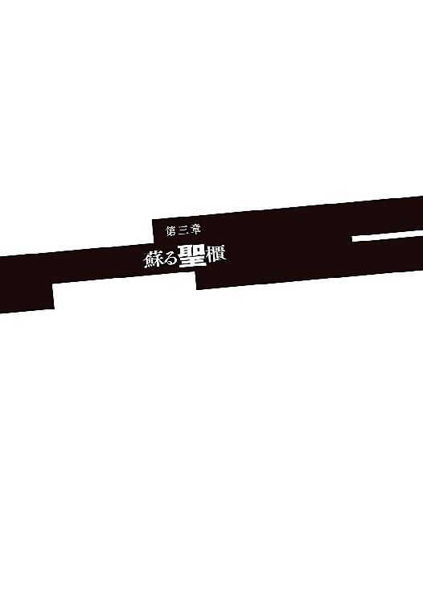
夢を見ているのだとすぐに分かった。
生まれ育ったアラドの屋敷にあった子供部屋は、天井一面に薔薇模様が浮き彫りになっていて、それ自体は名のある職人による立派な内装だったのだけれど、その部屋を使っていたソーマの気持ちとしては「男の部屋に花の模様なんて格好悪い」に尽きる。と言って自分勝手に天井の張り替えなんてできるわけもなく。天井なんて滅多に見ないんだから気にしないことに決めた。実際、その試みはほとんどの場合うまくいっていた。ベッドに入ってしまえば後は寝るだけなのだから。唯一例外と言えるのが病気で寝込んだときで、目が覚めている間もベッドに横になっていれば、嫌でも天井が目に入ってしまう。
その子供部屋もあの日に焼け落ちて。
けほけほと咳が出る。夢の中、ソーマは子供の頃と同じように熱を出していた。ソーマは体の丈夫な子供だった。滅多に風邪を引くこともなく、寝込んだことなど一度しかない。
熱が引いてもすぐには起き上がることが許されなかった。退屈をもてあましたソーマは天井の薔薇模様を数える。そうしているとノックもせずにドアが開いて、レンリが部屋に駆け込んでくるのだ。「ソーマ死んじゃいやー」。年上の威厳なんて欠片もない、舌っ足らずの涙声。
夢の中、現実と同じようにドアが開いて、しかし入ってきたのは幼なじみの少女ではなかった。飴細工のような金の髪を揺らして、現れたのはメルヴィーユだ。
こいつ、夢の中にまで出てきやがって──そう思いながらも、感じていたのは大きな安らぎだった。
あの日に出会って契約を交わして。それはただの打算だったはずなのに。
メルヴィーユの存在が、自分の中で大きくなっていたことにソーマは気付く。もはや単なる契約相手ではない。信頼できる相棒。半身とでも言うべき存在。
少女悪魔は半覚醒のソーマを見つめて聖女のように微笑んだ。持ってきた盥を側のテーブルに置き、ベッドに身を乗り出してソーマの額に手をかざす。輪郭を優しく撫でる、ひんやりとした指先が気持ちいい。
「メル......」
「何じゃ？」
「......いつもありがとう」
「っ！」
メルヴィーユが真っ赤になった。パッとベッドから離れてその場でぐるぐる回り出し、
「なななななんじゃ藪から棒に潤んだ瞳でそんなことを言われてはそなたが怪我人だということを忘れてしまいそうになるではないか。いかん！ いかんぞ！ ......いやしかし今が最大のチャンスなのかや？ 我が主は熱に浮かされてちいっとばかり理性も防御も緩んでおる。それにあれじゃ。人間は生命の危機に瀕すると種族を残そうとする本能が活性化するとも言う。というわけでいざあうちっ！」
勢い込んで布団をはがし、ソーマの上にまたがろうとしたメルヴィーユはしかし、額を押さえて大きくのけぞった。ソーマが全力容赦なしのデコピンを叩き込んだのである。
「......うぬぬ......寝ぼけているとは思えないこの破壊力......」
「......お前が騒いだおかげですっかり目が覚めたよ。ちくしょう、夢だと思って油断してしまった......」
「何か言うたか？」
「お前のせいで寝覚めが最悪だって言ったんだよ。......俺はどのくらい気を失ってた？」
ぶっきらぼうにそう言って、ソーマは辺りを見回した。見知らぬ部屋の見知らぬベッドに、包帯でぐるぐる巻きにされて寝かされている。それなりに高級なアパートであるようだが、さて自分はどうしてこんなところにいるのか。
「おぬしが下水で気を失ってからだいたい十二時間というところじゃ」
「メル、」
下水道で気を失った後のことを聞こうとしたそのとき、メルヴィーユが入ってきたドアが再び開いて、そこからロウとアルディエルが姿を現した。
「ふん。くたばらなかったようだな」
「そんなこと言わないの。元気になってよかったわ。久しぶりね？」
不機嫌そうなロウと、そんなロウをたしなめるアルディエル。クレオン湖で別れたときと全く変わっていない。
「こやつらが儂らを助けてくれたんじゃよ」
「ここは......」
「私たちのアパートよ」とアルディエル。「聖都に戻ってきてから、ロウが借りてくれたの。教会に私の部屋があったんだけど、石材むき出しだから牢屋みたいで嫌だろう、って。優しいでしょう？」
「余計なことを言うな」
とロウが苦虫を嚙みつぶすがアルディエルはどこ吹く風だ。アイマスクの下の頰をにいっと持ち上げて、
「この人のあのときの顔、あなたたちにも見せてあげたかったわ」
微笑むアルディエルが中心となって説明をしてくれた。
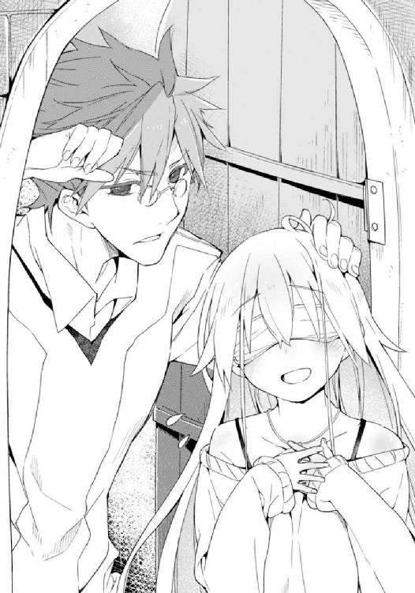
数ヶ月前にクレオン湖でソーマたちと別れた後、ロウとアルディエルは聖都に戻って任務失敗の報告をした。ロウは右腕の負傷──ソーマがやったものだ──の治療のために休職し、これを機会にアルディエルと共に住むことにして引っ越しをした。右腕が不自由なロウは一人では生活がままならなかった......というのが同居の主な理由だが、アルディエルの身柄を教会に預けておくことに不安を覚えたせいもある。
昨夜、ロウはアルディエルを連れて中央管理教会総本山にある、神前戦車隊の隊長室に出頭した。これ自体に特別なことは何もない。怪我の治り具合を報告し、もうしばらく休職が続くことを確認して書類にサインをもらうだけの手続きだ。その帰り道でロウとアルディエルは、ソーマを巡る捕り物に遭遇したのだった。
走り回る騎士を呼び止めて話を聞いた時点では、ロウは追われているのがソーマとメルヴィーユだとは知らなかったし、介入するつもりもなかった。ところがアルディエルが気付いた。〝歌声の天使〟アルディエルは非常に耳がいい。数キロ離れた相手の声が聞き分けられるし、数メートル地下の空洞に響く足音も、話し声ももちろん聞こえる。
「......〝箱船の守り人〟と行動を共にしているらしいな？」
「ああ」
ソーマが寝ている間にメルヴィーユが話したのだろう。
「悪い知らせだ。昨夜、ルナール商会に警察と騎士団の合同部隊が踏み込んだ。商会にいた〝箱船の守り人〟のメンバーはほとんどが逮捕され、市内の警察署に拘留されている」
「くっ......」
トーマがそのようなことを匂わせていたので、驚きはなかった。けれども全くショックを受けなかったわけでもない。まんまとおびき寄せられて、一網打尽にされた──その悔しさが募る。
「板っ切れの奴もどうやら捕まっておるようじゃ」
「何とかして助け出したいところだな。警察署か......」
「儂らなら突破は容易じゃろう。が、牢を壊してはいおしまいというものでもない」
「突入前に内部との連絡が欲しいところだな」
真面目な顔で話し合うソーマとメルヴィーユ。ロウが苦笑を浮かべた。
「騎士の目の前でよくも警察署の襲撃計画を練られるものだ」
「あ」とソーマ。
アルディエルがクスクス笑った。
「何を今更。法令違反を気にするならソーマくんを匿ってることの方がよっぽど重罪よ」
「......」
ロウがしかめっ面をする。ソーマは今更のような疑問を覚えた。
「俺たちを助けてよかったのか？」
ロウは騎士──それも教皇直属部隊の精鋭である。それがソーマを匿うのは教会への裏切り行為に当たる。
「構わんさ。元々教会に忠誠を誓っていたわけでもない。アイシャを助けてもらった借りもあるし」ちょっと言いにくそうに、「俺たちも教会には疑問を持っている」
「と言うと？」
聞き返すソーマ。答えたのはアルディエルだった。
「私たちもね、戻ってきてからちょっと探ってみたの。それでどうも、教会のやってることはおかしいんじゃないか、って思えることがいくつも出てきて。たとえば......そうね、箱船復活計画についてどう思う？」
「どう、って......」
「変だと思わない？ 不自然だと。いくら神代の奇跡、究極の始祖アダムの遺産だとしても、それが実体を持っている限りは大きさも限られるわけよね？ ということは、乗員には限りがある。乗れない人は見捨てられる......そうならないかしら？」
「そう、なるな」とソーマはうなずき、話の先を促した。
「なのに教会は大々的に人を集めている。現時点でも河川敷には大陸中からやってきた人が、十万人以上集まっている。さらに増えている。このままじゃ、聖都は人で溢れかえる。暴動が起きるかも知れない。いえ、絶対に起きる。だって箱船に乗れなかったら洪水で死んじゃうのよ？ 死にものぐるいで箱船に乗ろうとするに決まってるじゃない。そんなことを教会が考えられないはずがない。でも教会は人を無制限に集めている。これはどういうこと？」
「〝箱船〟は、旧世紀の超科学すら上回る異世界の遺物だ。だから何か、魔法のような技術で本当に全ての人間が乗れるのかも知れない」
話の成り行き上、教会を擁護するような主張をするが、ソーマ自身が自分の言葉に懐疑的だった。そんな都合のいい話があるはずがない。
「そうならそれでいいんだけど......」アルディエルは息をつき、「枢機卿たちの動きも妙だし、他にも不自然な点があって......箱船復活計画には何か裏がある。教会は噓をついている。私たちはそういう結論に達したの」
「そこでお前たちの話が聞きたい。〝箱船の守り人〟には、箱船を蘇らせるとこの世に災いが降りかかると伝わっているらしいな」
「そうなんだけど......具体的なことはよく分かってない」
「それでよく教会に反旗を翻したな」
「教会は箱船の鍵を手に入れるために大勢の人を殺した。本当に人類救済のために必要なら、そのことをきちんと説明して、協力を呼びかけるべきだった。なのにそうはしないで力で奪っていった。そんな連中の言う『人類救済』が信用できるか？」
ロウは鼻を鳴らしてうなずいた。
言葉には出さないが、感じ方は同じなのだろう。だから組織への裏切りになると分かっていてソーマを匿ったのだ。
「俺たちに協力してくれる......ということでいいのか？」
今更のような、確認の問い。果たして教会騎士は皮肉に唇を持ち上げて、
「栄えある神前戦車隊がテロリストに与するわけがないだろう。......騎士の本分は民衆を守ること。それだけだ」
「ふっ」とソーマが笑うと、ロウも笑みのようなものを返した。
そんな二人のやりとりを見てメルヴィーユが肩をすくめる。
「なんでこう、男という奴は面倒くさいのかのう......」
「でもそこがかわいいじゃない」
「うむ。確かに」
悪魔と天使が顔を見合わせて笑う。ソーマとロウは茶化されたと思って苦虫を嚙む。
「ひとまずは情報収集だな。箱船復活計画が動いていることは間違いないんだ。その詳細を把握しないことには始まらない」
「残り時間が気になるところだが」
「そう焦ることもないじゃろう。箱船の復活には魔法陣が必要じゃ。それもかなり大きなやつがな。教会はまだそうした準備を始めておらぬようじゃし、まだしばらくの猶予が──っ！」
メルヴィーユが言葉を途切れさせる。強烈な耳鳴りが全員を襲った。
「うっ」
「これは......」
ソーマたちは反射的に耳を押さえる。けれども空間そのものを震わせるような耳鳴りを抑えることはできない。これは何だ。すさまじい勢いで気圧が変化しているのだ。
バランス感覚が狂って立っていられないのだろう、ロウが壁により掛かり、アルディエルがロウにすがりついた。
ソーマは彼らよりもいくらか苦しまずに済んだ、といってもベッドに横になっているので倒れる心配をしなくてもいい、という程度でしかなかったが。
耳抜きのために何度も唾を飲み込みながら視線を窓の外にやり、ソーマはぎょっとした。
「な」
昼だというのに外が暗い。窓枠を摑んで見上げた空にソーマはそれを見た。
「なんだこれは!?」
空に天井がかかっていた。否、中央管理教会の総本山直上に、何か巨大な物体が浮かんでいるのだ。その巨大な物体は広大な教会の敷地をすっぽりと覆い、周囲の街並みにまでせり出している。
「でかい......百メートル、いや二百......三百？」
ソーマの目測は一桁間違っていた。このとき空を見上げて、その大きさを正確に割り出せた者はいなかっただろう。ある種の錯覚を生み出してしまうほどに、それはあまりにも巨大だったのだ。
「どうなってる!? こいつはどこから現れた!?」
ロウも困惑した声を出す。
と、外から飛び込んできた赤い光が彼らの目を射した。
「この光──〝賢者の石〟の......魔剣アゾスの光か!?」
ソーマは悪魔の力を使って視力を高め、光の発生源を見た。
光の発生源は彼方に見える中央管理教会総本山。そのバルコニーだった。
稲穂のように豊かな金髪の美しき乙女──教皇ディアドラが両手で魔剣を持ち、空に向かって高々と掲げている。彼女の左手に、小さいが鮮やかな緑の光があった。
「メル、まさか......これが......」
「うむ。そのまさかじゃ」
楽園の指輪と魔剣アゾス──その二つが同時に輝き、そして空に出現した巨大構造物。その正体は一つしかない。
「これが......箱船......」
ソーマは窓から身を乗り出し、首が痛くなるほど顎を上げて空を見上げた。
始祖アダムの遺産。太古に飛来した異世界の超文明の遺物。数千年もの間、時空の狭間に封印されていた箱船が、今ここに復活したのである。
「しかしこの不意打ちめいた復活はどういうことじゃ？ これだけのデカ物を現世に呼び出すには相応の規模の魔法陣が絶対に必要になる。なのにそんなものはどこにも──まさか！」
メルヴィーユはあることに気がついた。昨日、教会に潜入する前に下見として歩き回った街の様子。幾何学的な街並み。道路の形。教会を中心とした同心円と、その内部を交差するような街路。
「連中は何の準備もしていなかったのではない。もう準備は終わっておったんじゃ。鍵さえそろえばいつでも儀式が実行できた。何故ならば、」
メルヴィーユは窓枠を握りしめた。声が震える。
「何故ならば、この街それ自体が巨大な魔法陣だったんじゃ！」
バルコニーに熱い風が吹いた。聖都上空に突然出現した〝箱船〟、その大質量に押しのけられた空気が突風となって地上に吹き付けたのである。バルコニーに居並ぶ枢機卿たちはいずれも高齢で、不意の風に耐えられずに手すりに摑まったり、従者に体を支えてもらわなければいけなかった。その従者たちにしても、続いて襲いかかった耳鳴りによって平衡感覚を狂わされ、主と共によろめいてしまう。
ようやく風が治まり、しつこく残る耳鳴りに耐えながら彼らは顔を上げ、それを見た。
「......おお......これが......」
「始祖アダムの究極の遺産......楽園へ渡る船......伝説は真実であったか......」
「信じていなかったのに、私についてきたのですか？」
どよめく枢機卿たちに、ディアドラがいたずらっぽく笑いかける。
「いいえ！ 教皇猊下を信じないなどということがありましょうか。ですが......伝説の箱船ともなると、判断も慎重にもなるというものです」
枢機卿の一人が追従するように言う。
事実、彼らは半信半疑であった。〝天印〟を持つ教皇に奇跡の力が宿っていることは疑いようがない。けれども、奇跡の力を持つからといって、それが全知全能を意味するわけではない。まして教皇は二十代も半ばの、枢機卿たちからすれば孫より若い娘なのだ。そして教会にとっては隠したいことだが、過去には精神を病んで、終末の到来と箱船の復活を言い出す教皇も少なくはなかったのだ──今のディアドラと同じように。
それでも預言に一片の可能性があるなら対策しないわけにはいかない。まずは言われた通りに行動し、もし間違っていたら「教皇猊下ご乱心」で全て押しつけてしまえばいい。枢機卿の大半は、そんな打算を隠して、今日までディアドラに付き従ってきた。
ディアドラは魔剣を下ろし、ふう、と息をついた。一人の男がすっと進み出て、その腰を支えるように手を伸ばす。トーマであった。
「大丈夫か？」
「ええ。さすがにこれだけ大きな魔法陣を起こすと、疲れますね」
そう言いながらディアドラはトーマに体を預け、バルコニーから見える街並みへと顔を向けた。複数の同心円を持ち、複雑に交差した、美しいが少々実用性に欠ける街路。
魔法陣は誰が書いても、何で書いても、どこに書いても作用する。
メルヴィーユが気付いた通り、聖都の中央、教会とその周辺地区の街路は、箱船を呼び出すための巨大な魔法陣なのである。それを言うならば、この聖都ニューヤードそのものが、箱船を封印し、いつの日か再び呼び出すまで守り続けるために築かれた都市であり、中央管理教会は聖都を──翻っては箱船の封印を守るための組織だったのであるが。
「いやしかし、教皇猊下の偉大さはもちろんとして、スオウ博士も然る者ですな」
枢機卿がそう言ってトーマを褒めそやした。
ディアドラの元で暗躍し、様々な実験を繰り返していたトーマに、枢機卿たちはよい印象は抱いていなかった。教会の中枢たる枢機卿の頭越しとはけしからん──けれどもそれも、箱船が復活した今では些細なことだ。楽園へ行けば永遠の命が得られる。悪魔に脅かされることもない。希望にあふれた未来が開けたのだ。若造の無礼など些細なことである。
「俺の力など些細なものだ」トーマは真顔で言った。「それにまだ終わってはいない。復活させた箱船を、きちんと運用しなくてはいけないのだから」
「おお、そうでしたな」
「トーマ博士の研究によれば、〝楽園の指輪〟で箱船は制御できるということだったが......」
枢機卿たちの言葉にトーマはうなずき、それからディアドラに促すような目線を送った。ディアドラは微笑みを返すとバルコニーの中央に立ち、右手に持った魔剣を杖のように立てて体を支え、指輪を嵌めた左手を高く空へと掲げる。
楽園の指輪が深い森を思わせる、緑色の光を放った。周囲に無軌道に放射された光はすぐに一本に収束し、ディアドラの頭上、箱船の底面へと吸い込まれるように上っていく。
箱船の底面には無数のランプが配されている。そのいくつかがチカチカと、返事をするように瞬いた。箱船の底面全体が虹色に揺らめき、何かが虚空に大量に出現した。
「あれは......!?」
遠すぎてゴマ粒のようにしか見えない何かの正体を見極めようと枢機卿たちが目を凝らし、瞬時、驚きに喉を詰まらせる。
ゴマ粒のような無数の黒点──それが降下し、近付くにつれてその姿が少しずつ露わになる。獣のようでいて、決定的に異なる異形。
降り注ぐ数千数万のそれは、全て悪魔だった。
古い街である聖都ニューヤードには用地の厳密な区別がない。商業地と住宅地、職人の工房がモザイクのように重なり合い、渾然とした街並みを形成している。そうした街並みのあちらこちらに、悪魔の群れが降り注いだのだ。
それはまさしく青天の霹靂であった。
〝箱船〟を見上げていた若者が、巨大な猿のような悪魔に踏み潰される。それを見て腰を抜かした老人が、小鬼の群れに八つ裂きにされる。
悲鳴を上げて女が逃げる。女の胸に抱えられていた赤子が人面鳥に攫われ、次の瞬間にはその女も別の人面鳥に食らいつかれ、鮮血を吹き出しなら空高く運ばれていった。
別の街区で火の手が上がった。触れたものを燃え上がらせる能力を持つ悪魔、〝煤の巨人〟が集団で現れたため、街区が丸ごと燃え上がったのだ。激しい炎に追い立てられて住民が一斉に走り出す。突如街中に激しい嘶き。箱船から降ってきた〝二角馬〟の群れが、逃げ惑う住民を角で貫き、逞しい足で蹴り殺す。
「くそっ！ この道はもうダメだ！」
「下水に逃げ込め！」
目端の利く一団が地下へ隠れようとする。
が、
「あ......？」
マンホールの中は既に悪魔の巣窟だった。蝙蝠のような、鼠のような──けれども一目でまっとうな生き物ではないと分かる異形の群れが、闇に赤い目を光らせていたのだ。
「あああああああ！」
断末魔が響き渡り、血の臭いが街を染める。
市街の惨状は、それは確かに悲惨なものであったが、しかし街の外と比べればまだマシだったのかも知れない。
聖都ニューヤードの城壁の外側。川を挟んだ対岸の河川敷には、箱船に乗るために大陸各地からやってきた人々が集められていた。その数は十数万。広い河川敷もこれほどの人数が集まれば身動きも取れないほどだ。
そのど真ん中に出現したのは〝魃〟だ。
傾国の美貌を持つ、飢餓と干魃を司る熱風の悪魔は唇をぺろりと舐めると高熱の旋風を巻き起こした。千数百人が一瞬にして乾涸らび、枯れ木のようになって死んだ。熱波から逃れようと川に飛び込んだ人々は、川の水ごと煮沸された。運良く悪魔の出現地点付近にいなかった人々が我先にと逃げ出す。大混乱に陥った十数万人が何の統制もなく一斉に動けば当然事故は起きる。よろめき、弾き飛ばされ、倒れた人間は起き上がることすらできず、同じ人間たちに踏まれて死んでいった。死体から流れ出た血で川が真っ赤に染まる。
街の各所で火の手が上がり、あるいは吹雪が渦巻いて、ところによっては落雷が滝のように降り注ぐ。もはや季節もない。
あるのは悪魔が生み出す天変地異と、凄惨な死。
箱船の復活からわずか十数分で、聖都は地獄と化していた。
「い、一体何が......」
目の前の出来事を、枢機卿たちは全く把握できないでいた。意味が分からない。何が起こっているのか分からない。
種類も様々な悪魔の群れが聖都の各地に降り注ぎ、彼方から悪魔の咆吼、そして悲鳴のようなものが聞こえる。
上空を飛んでいた悪魔が教会前の広場に人間の生首を投げ捨てるのを目撃するに至って、枢機卿たちはようやく我に返った。
「ひいっ！ 騎士団だ！ 騎士団に出動をかけよ！」
「教会の守りはどうなっている!?」
「トーマ博士！ これはどういうことなのですかな!?」
一人がトーマに詰め寄り、唾を飛ばして咎めるような言葉をぶつけた。
「それは......」
トーマは答えられない。どうして箱船から悪魔が出現する？ そんなはずが。あり得ない。いや、トーマはこのとき答えを探していなかった。脳裏に浮かんでいたのは一年と少し前の故郷の光景──大量に出現した悪魔。蹂躙される街並み。魔法陣に魂を吸われた幼なじみの顔。
あの失敗をトーマは片時たりとも忘れたことはない。
あの犠牲を絶対に無駄にしない、何としてでも伝説の箱船を復活させ、全ての死者を蘇らせ、人類を楽園に──悪魔のいない平和な世界に導く。そう誓った。
あれ以来全てを捧げて研究に打ち込んできた。そして独学でやっていたあのときとは違って、今回は教会の全面的な支援があったのだ。中央管理教会の秘中の秘、存在すら秘匿されている数々の古文書と失伝機械群を用い、不確定要素など一つもなかった......はずだった。それがどうしてこんな。
「まさか......」一つの可能性をトーマは思い浮かべた。「あれは箱船ではない？ そうだ、そうに違いない。あれの正体はおそらく〝黒い小箱〟──小箱のアダムが蓋を開け、この世に悪魔を解き放ったと伝えられる〝黒い小箱〟を、俺たちは箱船を呼び出すつもりで間違えて呼び出してしまったんだ......」
戦慄くトーマ。その二の腕にディアドラが励ますように触れた。
「いえ、スオウ博士は間違ってなどいませんわ。箱船復活の儀式は正しく完了しました。あれは〝箱船〟です」
「......」
トーマがディアドラを見返す。ディアドラは至上の慈しみを込めてトーマを見つめた。
「でも同時に、あれは〝黒い小箱〟でもあります」
「それは......どういう......」
「〝黒い小箱〟は箱船の中枢。箱船は〝黒い小箱〟の運用装置。二つは不可分な存在。つまり、悪魔を生み出す源は箱船なのですよ」
「まさか!?」
信じられない。受け入れられない。あり得ない。それでは全ての認識がひっくり返る。
けれども事実として彼らの頭上に箱船はあり、そこからは今も無数の悪魔が産み落とされて地上に混乱を、破壊と殺戮を振りまいている。
連絡が行ったのか、いや、彼ら自身が異変に気付いたのだろう。隣の騎士団本部から、完全武装の騎士たちが一斉に街へと飛び出していく。けれどもその動きは遅すぎた。既に街中で大量の悪魔が暴れ回り、聖都は大混乱に陥っている。
もはや悲鳴も聞こえない。聞こえてくるのは悪魔の鳴き声と建物の破壊される音。血の臭いと死体の燃える臭いがここまで届いてくる。
「そ、その口ぶりですと猊下は......」枢機卿の一人が震える声で訊ねる。「猊下は、これをご存じだったのでございますか？ こうなることが分かっていて、箱船を復活させたのでございますか？」
「ええ」
「こ、こうなることが分かっておいでで、聖都に民を集めたのでございますか!? 悪魔に襲われることが分かっていて！」
「ええ」
「何故!?」
問いはほとんど絶叫だった。
ディアドラはトーマに向けたのと同じ、慈愛に満ちた笑みで、バルコニーに居並ぶ枢機卿とその従者たちを順に見つめた。目をきゅうっと細めて微笑む。
「もちろん、殺すためですわ」
「っ！」
瞬間、トーマは反射的に後ろへ飛んだ。刹那の間を置いてバルコニーに二つの影が降ってくる。どちらも身の丈二メートルを超える長身で、赤銅色の肌。片方は人間の体に牛の頭、もう片方は馬の頭をしていた。地獄の獄卒と伝えられる悪魔〝牛頭〟と〝馬頭〟だ。
二体はバルコニーにヒビを入れて着地すると、間髪入れずに金棒を振った。ディアドラに詰め寄っていた枢機卿たちの上半身が瞬時に消し飛ぶ。悪魔たちが金棒を床にゴン、と立てると、残った下半身がバタバタと倒れた。
ディアドラはちょっとばかりしかめっ面をして、悪魔の脛をこつんと蹴った。それだけを見れば、拗ねた少女のようなかわいらしい仕草であっただろう。けれども続く台詞は血も凍るものであった。
「いけませんよ、もっと苦しめて殺さないと」
牛頭馬頭がディアドラを守るように、左右に立つ。
ディアドラがバルコニーを眺める。穏やかに。しかし傲然と。獄卒たちに守られて、彼女は全てに裁きを下そうとしているかのようであった。
「猊下！ あ、ああ、あ......」
生き残りの枢機卿がディアドラに呼びかけ、しかし何を言えばいいのか分からないのだろう。立ち尽くして震えた。
「冥土の土産を差し上げるのも、悪くはないですね」
「な......」
「質問に答えて差し上げる、と言ったのです。あるのでしょう？ 訊きたいことが。嫌なのでしょう？ 訳も分からず殺されるのが」
枢機卿たちはガタガタ震えている。従者たちも含めて、とても質問なとできる状態ではなかった。ただ一人、トーマだけがかろうじてまともな思考力を残していた。
「......お前は本物のディアドラなのか？」
こいつは偽者ではないのか。どこかで悪魔が成り代わったのではないか──トーマのその疑問に、ディアドラは唇を舐めながら答えた。
「肌を重ねた相手のことが分からない？ あなたと出会ったあの日から、いいえ、北部の寒村から聖都に連れてこられる前から、私はずっと私です。他の何者でもありません」
「では、お前は何者だ？」
ディアドラは聖女のように微笑んだ。
「我が名は〝悪意〟......人類根絶を目指して生み出されたもの」その目をきゅうっと細めて、「人間は私を〝黒い蛇〟と呼んでいましたわね」
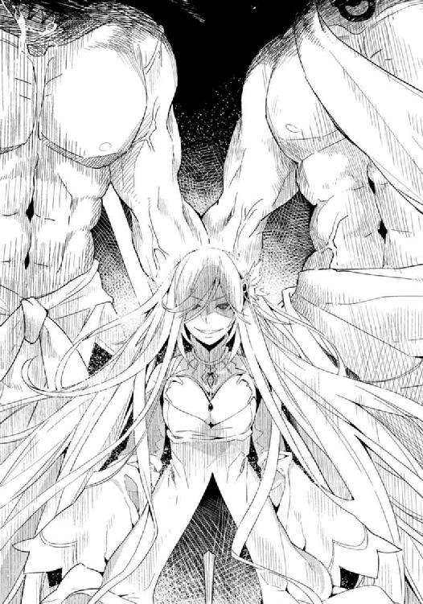
ソーマは傭兵として、ロウは騎士として、数え切れないくらい悪魔と戦い、修羅場をくぐり抜けてきた経験がある。野営地を悪魔に襲撃されるだとか、思いもよらぬところに悪魔が潜んでいただとか、そんなことは日常茶飯事である。山中で出会った行商人の一団が実は全員悪魔だったとか、山小屋に入ったら小屋そのものが悪魔だったとか。そうした経験をしてきた彼らは、もはや並大抵のことでは動じない自信があった......のだが、空に〝箱船〟が出現し、そこから無数の悪魔が降り注ぐ光景にはさすがに驚きを禁じ得なかった。
驚き、混乱し、それでも二人は非常事態を悟ってすぐに動き出す。
「戦えるか？」
「無理だと言ったら休ませてくれるのか？」
ソーマはベッドの上で包帯を解き始める。メルヴィーユとの契約によって変貌したソーマの肉体は、どちらかといえば悪魔に近い。一晩休んだおかげで体力は回復し、傷も──一応は、という程度ではあるが──ふさがっている。
「使え」
ロウが使い込まれた騎士剣を放ってよこす。以前ロウが愛用していたものなのだろう。ロウ自身は背中に長大な刀──失伝兵器の一つである、機械化刀・鹿島是秀を背負っている。
戦闘準備を終えると同時、外から悲鳴が聞こえてきた。降りてきた悪魔たちが人々を襲い始めたのだ。
ついさっきまで寝ていたソーマは装備を整えるのに手間取る。
ロウが先に窓から飛び出した。
近隣の住人だろう、アパートのすぐ前の道路に数人の男女が固まっている。彼らの前には数体の独眼鬼。悪魔の一体がロウに気付いて顔を上げた。そのときにはもう、ロウは肩に担ぎ上げた機械化刀を斜めに振り下ろす動作に入っていた。
「......arkas arkas......aharos on ioyay......」
アパートの窓から身を乗り出したアルディエルが声を張り上げ呪歌を紡ぐ。魔力を帯びた歌が旋律となって機械化刀に伝わり、その機構を駆動させる。刀身が淡く輝いた。
轟、と旋風を伴った一閃。三体の独眼鬼の首が空高く舞い上がった。切断面からどす黒い血を吹き出しながら倒れる悪魔たちは一顧だにせず、振り返って大太刀を縦に振った。ロウに背後から襲いかかろうとしていた独眼鬼が唐竹割りにされて倒れ伏す。
瞬時に四体を始末したロウであったが、敵はまだ半分も片付いていない。さらなる独眼鬼が数体、ロウを包囲して一斉に襲いかかってくる。ロウは寝かせた刃を水平に振るって三百六十度をなぎ払う。無数の悪魔が胴を輪切りにされ、しかし一体が仲間を踏み台にしてロウの頭上から襲いかかろうとした。
「はっ！」
ソーマが窓枠を踏み台にして跳び蹴りを放ち、ロウを狙っていた悪魔を地上に蹴り落とした。そこに、
「降魔展開──〝霜の巨人〟」
メルヴィーユが呪文を唱えて悪魔を地面ごと凍り付かせて動きを封じる。体勢を整えたロウが大太刀でとどめを刺した。
「礼は言わんぞ」
ロウの言葉にソーマはにやりと笑い、
「ああ。そんな暇があったら一体でも多く片付けてくれ」
「フン」
不機嫌そうに鼻を鳴らしてロウが大太刀を振り下ろした。また一体の悪魔が脳天から真っ二つにされる。
アパートの周辺にいた悪魔は独眼鬼を始めとして、百腕鬼、首なし騎士等々......いずれも決して弱い悪魔ではない。単体でも小さな村なら容易に食い尽くしてしまうだろうし、討伐には騎士十人以上の部隊が必要となる。しかしその悪魔たちも、ソーマとロウの前では赤子のようなものだった。メルヴィーユが呪文を唱えるたび、ロウが大太刀を振り下ろすたび、強大な悪魔が次々に倒れ、路上に死体の山を築いていく。
戦況は極めて有利......に見えるだけだということを、しかしソーマもロウも知っていた。敵の数が多すぎるのだ。何の援護もなしにひたすら戦っていても、やがて数で押し潰されてしまうだけだ。
「ソーマ！ 騎士団と合流するぞ！」
悪魔を切り伏せながらロウが言った。正しい判断だ。状況を打開するには組織的な行動が必要だ。その中心となるのは、対悪魔戦闘の専門家である騎士団をおいて他にない。
「とっくに壊滅しておったりしてな」
メルヴィーユが笑えない冗談、あるいは真剣に考慮すべき可能性を口にした。
「そう簡単にはやられんよ。騎士団はかなりの量の失伝兵器を保有している。それに港にはアスカロンを始めとした戦闘艦が多数停泊している」
「生き残りを港に集めて、船で聖都から逃がすんじゃな」
メルヴィーユが補足し、確かにそれが一番かとソーマもうなずく。
「けどその前にファムを助けないと」
ファムたち〝箱船の守り人〟のメンバーは昨日から警察に捕まっている。武装を取り上げられて監禁された状態にあるわけで、そんなところを悪魔に襲われたらひとたまりもない。
「こっちも寄りたいところがある。......位置的には警察署の方が近いな。そっちから回るか」
「寄りたいところ？」
「私たちが生まれ育った孤児院。ロウはそこで剣を教えてるの。子供たちにもすごく慕われてるのよ」
「ほう、こやつがのう......。ちと想像できんな」
「余計なことを話している場合か！」
照れ隠しだろう、ロウが怒鳴った。
アルディエルは微笑んで受け流す。
ロウは舌打ちをすると、大太刀を高々と掲げた。
「遅れるなよ！」
アルディエルが呪歌を紡ぎ、その力を受けて鈍く発光する大太刀を構えてロウが悪魔の群れに突撃する。その勢いたるや刃のついた竜巻だ。必殺の光を放つ大太刀が翻るたび、立ちふさがる悪魔が細切れになって吹き飛んでいく。
刃の暴風圏に入らないよう、しかし決して遅れないよう、アルディエルと並んでソーマも走る。前方の敵はロウが一手に引き受けてくれるが、それでソーマが楽になるわけではなかった。横合いから襲ってくる悪魔を切り伏せ、追いすがる悪魔を蹴り飛ばす。アルディエルも元は騎士であったらしいのだが、天使に転生する際に体が幼くなってしまったため、現在の戦闘力はほぼ皆無である。これを守りながら進まなくてはいけないので全く気が抜けない。自分が前衛に立って突っ込んだ方がよっぽど楽だとソーマは思った。
何より恐ろしいのは空からの敵だった。
守るべき街の内側に悪魔が大量に出現するという異常事態を前に、城壁の上に並ぶ防衛兵器はほとんど何もできずに全てが沈黙させられていた。飛行能力を有した悪魔たちは何に邪魔されることもなく、聖都の空を我が物顔に飛び回り、襲いかかってくる。かといって空の敵に気を取られすぎれば、地上の物陰から襲いかかる小型の悪魔に不意を突かれる。
四方八方、空にも地下にも──下水に潜んでいた悪魔がマンホールから奇襲を仕掛けてくるのだ──気を配りながらもなるべく急いで進む。
空には黒煙がたなびき、地面には温かい血が川を作っている。なのに煙の臭いも血の臭いも感じない。とっくの昔に鼻が馬鹿になっている。
どこを見ても破壊された街並みに人の死体と、死体の欠片が転がっている。
どこからか──どこからでも聞こえる悪魔の吠え声と人間の断末魔。
この地獄のような有様を、ソーマは嫌というほど知っていた。
一年と少し前。ソーマの故郷は全く同じようにして滅びた。同じ人間の手によって。
「トーマ......」
ぎりぎりと奥歯を嚙みしめる。
「これが、これが......人類の救済のために必要なことだって言うのか！ トーマ！」
猛るソーマは知る由もない。
事態は既に、トーマの思惑から遠く外れたところに行こうとしていることを。
中央管理教会総本山、本棟。
牛頭馬頭に殺された枢機卿たちの死体から流れ出た血で、バルコニーの床は真っ赤に染まっている。タイルに沿って流れる血が、生き残った従者の足下に到達する。従者が逃げるように後ずさり、足をもつれさせて転ぶ。失禁してズボンを濡らす。
「......」
トーマはそれを不思議なくらい冷静に見ていた。弟と違って感情が高ぶることの少ない方ではあったが、目の前で人が死んでも平気でいられるほどの冷血漢でもないはずで、ではどうして自分はこうも落ち着いていられるのか。
そんな風に考える自分のこともどこか突き放したように観察しながら、トーマは視線をディアドラに向けた。
「黒い蛇......楽園を滅ぼした大いなる災い......それがお前だと？」
「厳密には違う個体ですが、記憶は継承していますし、同じと見なして下さって結構です。ああ、それと、楽園を滅ぼしたのは私ではありませんよ？ それは人間がやったことです。私を楽園に閉じ込めて、楽園ごと葬り去ろうとしたのです。その作戦自体は成功したのですけれど、私は、閉じ込められる前に私の分身を箱船に送り込んでいたので、あれは何というか、まあ無駄な犠牲でした」
「俺たちは、俺は......ずっと騙されて......」
フフ、とディアドラは笑った。体をくねらせ、
「今どんなお気持ち？ 世界を救うんだと息巻いて、そのためにならどんな犠牲も厭わないなんて豪語して。やっていたことは人類抹殺のお手伝いだったなんて、ねえ？ どんな気持ちか聞かせて下さらない？ 朝まで愛し合った相手が悪魔の親玉だったって、私の手のひらの上で踊らされていたなんて、ねえ、ねえ、どんな気持ち!?」
「貴様ぁ!!」
怒鳴りつけ、剣を抜いて躍りかかる。激昂したかに見えて、トーマは頭の芯まで冷えていた。
騙されていた。共に人類の未来を摑もうと誓った同志は人類の仇敵だった。
今日の今日まで自分は人類抹殺の片棒を担いでいた。
だからなんだ？ 箱船は復活したのだ。ならばこの黒い蛇を排除して、箱船を人の手に取り戻せば予定通りだ。箱船が悪魔を生み出す元凶だというなら尚のこと。箱船を制御できれば、人類はもう二度と悪魔に脅かされることはなくなる。それどころか悪魔を利用することすら可能になるだろう。
まだ、希望は何も潰えていない。むしろここが絶好の機会。
あくまで冷静に、トーマはディアドラに向かって切り込んでいく。
二体の悪魔、牛頭と馬頭が主を守ろうと動き出す。二体は荒々しい見た目の通り、典型的な近接戦闘型で特殊な能力を持たない。それでいて悪魔としてはかなり高位の存在とされている。それは何故か？ 単純に強いのである。鋼のような肉体はそれ自体が強固な鎧であり、圧倒的な破壊力の源である。金棒を振り上げるだけで風が唸り、叩き付ければ大地が鳴動する。今、牛頭がその一撃を放った。瀟洒なバルコニーがあっさりと崩れ落ち、枢機卿と従者たちがもろともに墜落していく。トーマは崩れ落ちる足場を蹴り、落下の勢いも乗せて牛頭の脇をすり抜ける。
ディアドラは馬頭の左肩に腰掛けていた。誘うような微笑。
トーマは瓦礫を蹴って馬頭の左側に回り込もうとする。そこに牛頭が金棒を投げつけてきた。大砲のごとき一撃をトーマは空中で、驚くべき体捌きでいなす。それだけでなく金棒を軸にして向きを変え、さらに勢いを増してディアドラへと肉薄。剣を突き出す。
その剣がディアドラの胸に突き刺さる寸前、馬頭がディアドラを放り上げた。投げ上げられたディアドラを牛頭が受け止める。標的を失ったトーマの剣はそのまま馬頭の額に刺さり、しかし悪魔の強固な頭蓋骨を貫けず、滑るような傷を刻むに留まる。トーマが馬頭の肩に乗る。馬頭が巨大な手でトーマの右足をがっちり摑んだ。
「私の勝ちね」
「いいや。俺の勝ちさ」トーマは懐の白い石を握り込んだ。「来たれ、〝死角の猟犬〟！」
突如、ディアドラの背後の空中に黒い筋が刻まれた。空間の断裂から飛び出してきたのはソーマを一撃で倒したあの悪魔だ。暗い緑色をした獣の影が完全な死角から襲いかかり、その鋭い刃で落下する瓦礫を切り刻みながらディアドラへと襲いかかる。ソーマを相手にしたときは殺さないよう手加減したが今度は本気だ。高速旋回する刃は牛頭もろともディアドラを八つ裂きに、
「っ!?」
──しなかった。〝死角の猟犬〟はディアドラを抱えた牛頭の足下に走り込むと、くるりと丸まってその足に頭をすりつけたのだ。まるで飼い主に甘える犬だった。
崩落するバルコニー。残骸と共に落下するトーマたち。馬頭は着地の寸前にトーマを地面に叩き付けた。
「がはっ！」
トーマは苦悶の声と共に血を吐いた。折れた肋骨が肺を突き破ったのだろう。まともに息ができない。それでも立ち上がろうとして、トーマは自分の右足が雑巾のようにねじれているのを見た。
「だから言ったでしょう？ 私の勝ちだって」
一拍遅れて着地した牛頭の肩からひらりと降りて、ディアドラが特に勝ち誇りもせずにそう言った。
「何故だ......」
「〝死角の猟犬〟が、あなたの言うことを聞かなかったこと？ お馬鹿さん。私は箱船の制御を握っているのよ？ 全ての悪魔は私の意のままに操れて当然じゃない」
牛頭馬頭が金棒を振り上げた。両足、肋骨、そして背骨までも損傷したトーマには避けるすべがない。一緒にバルコニー──普通の建物でいうなら五階の高さから墜落してきた枢機卿たちも似たような有様、老体ばかりということもあって、下手をしたらあちらの方が先に絶命しそうな塩梅だ。救助など当てにできない。
「くっ......」
トーマは死を覚悟した。だが、
「やめなさい」
ディアドラが悪魔たちの行動を制した。
「言ったでしょう。人間は苦しめて殺すのです」
『......』
牛頭馬頭が下がる。入れ替わりにディアドラが進み出て、トーマの前にしゃがみ込んだ。その手が血に汚れるのも厭わずトーマの顔を上げさせて、恋人のように口づけする。トーマは自分の中に何かが流れ込んでくるのを感じた。痛みがふっと和らぎ、活力さえ湧いてくる。といっても動けるほどではない。
「ありがとう、トーマ。あなたのおかげでようやく使命が果たせるわ」
「使命......人類、滅亡の......か？」
「ええ。だからお礼に、あなたはもうしばらく生かしておいてあげる」
何がお礼だ、より長く苦しめたいだけのくせに、とトーマは思った。こいつはただ、俺を苦しめたいだけなのだ。愚かな男をあざ笑いたいだけなのだ。
「............〝悪意〟！」
あらん限りの怒りを込めて、トーマはその名を叫んだ。
ディアドラは立ち上がり、〝楽園の指輪〟を嵌めた左手を天にかざした。すると箱船から一条の光が降り注ぎ、光の当たった地面に円形の足場を形成した。
「そこで見ていて下さいね。この世界から人類が消え失せる様を」
微笑みを浮かべたディアドラが上に乗ると、足場はすぐに浮き上がり、箱船に向かって一直線に上昇していく。
ディアドラが足場ごと箱船に吸い込まれて見えなくなった。
直後、空全体が戦慄くような音を立てた。
終末の喇叭が鳴り響く。
それは、最後の審判の始まりであった。
「......ちょっとこれ、やばいんじゃない？」
呟く声がコンクリートの壁に反響して、嫌な感じに耳に残る。
偽の会議情報でソーマをおびき出したトーマとディアドラは、残る〝箱船の守り人〟にも部隊を差し向けていた。ルナール商会でソーマとメルヴィーユの帰りを待っていたファムたちは一人残らず逮捕され、聖都北部にある第十七警察署へと連行された。
踏み込まれた時点で抵抗していれば、半分くらいのメンバーは逃げられたのかも知れない。けれどもリーダーであるウルスはそれをしなかった。〝箱船の守り人〟のメンバーの大半は資金援助や情報収集、装備の手配等々、実働部隊の支援を担う非戦闘員だ。騎士と警官からなる鎮圧部隊と正面切って戦えば、少なくない被害が出てしまうだろう。それを考えたウルスは警官隊に逆らわず、素直に捕まったのだった。
そうして捕まったファムたちは、男女別に分けられて留置場で一夜を明かした。街中に悪魔が出現したらしいことは、警官たちの様子を見ていて分かった。
警官たちは銃や警棒を手に警察署から飛び出していき──すぐに人数を半分に減らして戻ってきた。空に何か巨大な物体が出現した。街中に悪魔があふれている。負傷者多数。死者はさらに多数。
「無理だ。立てこもろう」
「市民を見捨てるのか！」
「こんな豆鉄砲と棒きれでどうしろって言うんだ！」
警官の一人が持っていた警棒をロッカーに投げつけた。
警官たちの頭からはファムたちのことなどもう意識から消し飛んでいるのだろう。留置場に続くドアが開けっ放しだったので、警官たちの怒鳴り合う声を、はっきりと聞くことができた。
「警察の装備も技能も人間相手を想定したものだもんな。悪魔に太刀打ちできるわけが......」
通路を挟んだ向かいの留置場でルナールが呟くのが聞こえた。
「......お姉ちゃん、あたしたちどうなるの？」
一緒に捕まったラビィが、ファムの腰にすがってそう言った。声は震えていた。泣きそうなのを必死で我慢しているのだろう。ルナール商会に踏み込んできた警官隊は「誰一人逃がすな」という命令を忠実に実行し、子供も老人も区別しなかったのだ。
「大丈夫。きっと助かるから」
ファムはそう言ってしゃがみ込み、ラビィを優しく抱きしめた。先ほどの自分の呟きを思い出し、小さな子供を怖がらせてしまったと反省する。
留置場には窓もなく、外の様子は見えない。けれども遠い悪魔の吠え声や、死体の発する嫌な臭いなどが、どこからともなく忍び込んでくる。
しばらく前からファムは、不規則な地響きを感じていた。意識を集中すると、爆発音のようなものも聞こえる。大きな悪魔が暴れ回っているのだろうか。
「皮肉なことに鉄格子の中が一番安全なようだな」
ルナールが軽口を叩いた直後だった。
「うわあああっ！」
「バリケードを押さえろ！ いや、離れろ！ 早く！」
「撃て撃て撃て撃てウテエエエエエエエ！」
にわかに署内が騒がしくなったかと思うと、絶叫と発砲音が鳴り響いた。続いて聞こえてきたのは粘り気のある泡が弾ける音。カチャカチャと爪を立てるような音も聞こえてくる。
「何!?」
声に出しつつ、ファムは何が起こったのかを正確に予測していた。
「ぐああっ！」
「痛え！ いでえよぅ！」
銃声と悲鳴が近付いてくる。警官たちが押されている、いや、蹂躙されているのだ。
一人の警察官がファムたちの方へ逃げ込んできた。
「来るな！ 来るな！ くびゃっ！」
狂ったように発砲していた警官の首が、熟れすぎたトマトのように弾け飛んだ。首をなくした胴体は残弾がなくなるまで打ち続け、仰向けに倒れても引き金を引き続ける。
その死体をまたぎ越え、留置所の通路へと、悪魔が姿を現した。
蟹のような下半身から裸の女の上半身が生えた、そいつが何という悪魔なのかファムは知らない。初めて見る型だった。蟹のような悪魔は両手のハサミを高く掲げて打ち鳴らす。うれしそうに上がった口角にぶくぶくと、唾液が泡を作っている。
「ラビィ、下がって。みんなも」
ファムは同じ牢に入れられた仲間たちを壁際まで下がらせた。武器も奪われ無力だけれど、ただ死を待つなんてあり得ない。ファムはじっと悪魔を見据えた。
「こっちよ、ホラ。あたしのこと食べたいんでしょう？ 若くて活きのいい美少女よ？」
安い挑発ついでにくねくねと科など作ってみせる。
「何やってるんだファム！ 馬鹿かお前！」向かいの牢でウルスが怒鳴った。「おい糞悪魔！ こっちに来い！ 俺が相手になってやる！」
ウルスよりもファムの方がうまそうだと思ったのだろうか、悪魔は涎を垂らし、足の爪をカチャカチャ鳴らしながら、ファムのいる牢へと近付いてくる。
悪魔はファムを襲おうとしたのだが、太すぎるハサミは鉄格子の隙間に差し込むこともできない。悪魔は口の端にぶくぶくと泡を立てた。
「フシュアアア！」
怒り狂った悪魔が両手のハサミを鉄格子に叩き付け始める。ガンガンとけたたましい音が警察署中に鳴り響き、鉄格子が少しずつひしゃげ始めた。
「ファム！ 下がりな！ 鉄格子が壊される！」
同じ牢の女性が警告する。だが、それこそがファムの狙いだった。このまま牢の中にいれば安全か？ そんなはずがない。今回はたまたま大きめの悪魔だったから牢の中に入ってこられないが、次もそうとは限らない。鼠や虫のような小さな悪魔が集団でやってきたらおしまいだし、仮にずっと襲われなくても体力が保つわけがない──ファムはともかくラビィや年配の仲間たちは。
悪魔が鉄格子を壊してくれれば、外に出ることができる。警察署内だから武器もあるだろう。牢の隅で小さくなって震えているよりはずっと勝算がある。
「ほらほら手を休めないで悪魔さん！」
挑発し、悪魔に攻撃させる。鉄格子がさらに歪み、隙間が大きくなる。もういけるか？ まだか？ 隙間が小さければ引っかかってアウト。かといって待ちすぎれば鉄格子そのものが破壊されて悪魔が中に入ってきてしまう。自分はすり抜けられる。けれども悪魔は中には入れない。そういうタイミングが必要だ。焦らず、機を逃さず......今！
「とぉりゃあああああ！」
気合い一発、ファムは狭い留置場で精一杯の助走をつけ、悪魔が広げた鉄格子の隙間へと頭から飛び込んだ。ちょっとばかり目測を誤って鉄格子に肩をぶつける。「っ！」死ぬほど痛い。でも死んじゃいない。うずくまっていたら本当に死ぬ。気配を感じてファムは前転。
「キシャアア！」
振り下ろされたハサミが爆音を轟かせてコンクリートにヒビを入れる。ファムは後ろを見ないで走った。通路に無数の死体が転がっている。いずれも拳銃を握っていたが、ファムは死体から銃を取ろうとはしなかった。どうせ弾切れだ。でなくても対人用の小型拳銃では悪魔に通用しない。そんなものより自分の装備。昨夜押収されたファムの荷物には特別製の手榴弾が入っている。
「あれさえあれば悪魔なんてイチコロよ。みんな待ってて。すぐに戻るからね」
通路を駆け抜け警察署のロビーへ出る。激しい銃撃戦の痕跡と爆発跡。火薬の臭いと血の臭い。ファムは己の甘さを嫌になるほど思い知った。受付前の長椅子に、カウンターの内側に、留置場に現れたものと同じ型の──けれども二回りは大きい悪魔が陣取ってお食事中だったのだ。
「フシュシュ......」
「シャ......」
二体の悪魔が顔を上げ、ファムを見て、ニタァ......と笑った。ファムは視線を素早く巡らせる。押収された荷物は警察署の奥の証拠保管室にあるはずだ。奥へ続く通路には悪魔はいない。まだいける。素早く判断して再びダッシュ。悪魔が追ってくるのを音で聞く。
奥の通路へ飛び込んで、目指す証拠保管室はすぐに見つかった。死体がドアストッパーのように倒れている。鍵を探さなくて済むのは幸運だった。針金が何本かあればどんな鍵でも開けてみせる自信はあるけれど、悪魔に襲われながら瞬時に解錠するのはさすがに無理だ。
死体をまたいで証拠保管室へ飛び込む。〝箱船の守り人〟は昨日捕まったばかりだから押収品も手前にあるはず──そう思って探すとすぐに見つかった。ファムは自分のポーチをまさぐる。が、
「ない！ 何で!?」
三つあったはずの手榴弾が一つ残らずなくなっていた。
警察官が使ったのだ。対人用の小型拳銃やネット投射機では悪魔を止めることができなくて、証拠品も構わず勝手に使ってしまったのに違いない。
ファムがそう理解したとき、大きな体を斜めにして、蟹の悪魔が証拠保管室へと入り込んできた。
「くっ。何かないの!?」
ファムは必死で証拠品の棚を漁った。煙草の吸い殻や、帳簿の類いに高級そうな腕時計......棚には無数の証拠品が並んでいたが、武器と呼べるような物は小さなナイフが数本で、悪魔に立ち向かえるような重火器、爆発物は一切なかった。これが別の警察署ならもう少し武器──事件に用いられた凶器と言うべきか──があったのだろう。けれども第十七警察署の管轄は余所よりも治安が良くて、凶悪犯罪は滅多に起こっていなかったのだ。
悪魔が近付いてくる。ファムは部屋の奥へと逃げ込んだ。もう一体の悪魔も入ってくるのが見えた。二体の悪魔が左右に分かれ、ファムを部屋の隅へと追い立てていく。挟み込まれた。
証拠品を収めた棚を倒して悪魔を押し潰せないだろうか？ 試しに揺すってみたが、棚はがっちり固定されていてファムの腕力ではびくともしなかった。
「このっ！」
破れかぶれになったファムは棚の証拠品を引っつかみ、手当たり次第悪魔に向かって投げつけた。悪魔はほとんど避けようともしない。頑丈な甲羅は帳簿をぶつけられたくらいではびくともしないのだ。
「フシュ......」
「フシュシュ......」
悪魔が接近し、血塗れの口角に唾液の泡を弾けさせる。磯の臭いがつんとした。
これから自分はあのハサミで摑まれて──あるいは手足を切り落とされて──食われるのだ。柔らかい肌に生臭い牙を突き立てられて。
「やだ、......誰か......だれかあああ！」
「降魔展開──〝経津主〟」
鈴を転がすような声、そして涼やかな風切り音が室内を切り裂いた。
「シュ？」
二体の悪魔が同時に振り返り──その途中で首がぽろりと落ちたかと思うと十以上の破片に分割されて床に散らばった。どす黒い血が床いっぱいに広がり、てらてらした粘り気のある水たまりを作る。その水面に、見知った少年とその相棒が上下逆さまに映っていた。
「大丈夫か？」
「ソーマ！ 無事だったのね！」
ルナール商会が襲撃されたからには、教会に潜入したソーマもただでは済まないだろうと思っていた。その無事が確認できて、しかも絶体絶命の危機を助けられたことで、ファムは感極まってソーマに飛びつき、抱きついて頰ずりしたくなった。が、
「儂らがそんな簡単にやられるものか。......しっかし今のは笑えたのう。『やだ、誰か......だれかあああ！』。よほど恐ろしかったと見える。小便なぞ漏らしてはおるまいな？」
ニヤニヤ笑いの少女悪魔がいい雰囲気を一撃で粉砕する。
「あんたも無事でよかったわ、メルヴィーユ」ファムはにっこり笑って、「ああ、小さすぎて敵に見つからなかったのね」
「......そういうそなたは牢屋に入っているはずではなかったかや？ ああ、引っかかるものがないから鉄格子をすり抜けるのも容易と」
「......お前らいつも通り過ぎるだろ......」
ソーマが呆れながら突っ込むと、ファムとメルヴィーユは顔を見合わせ楽しそうに笑った。しかしすぐに真面目な顔になって、
「そうね。こんなことしてる場合じゃないわ。みんなが捕まってるの。留置場にも悪魔が、」
「そっちならもう片付けたよ」
ソーマはファムたちが全員牢の中だと思っていたのだ。だから突入すると留置場に直行した。そこでまず悪魔を一体倒し、ウルスからファムが一人で抜け出し、悪魔と戦おうとしていると聞かされて驚き、急いでこちらに来たのである。
「じゃあみんなも無事なのね。よかった」ファムはほっと息をつき、「そっちはどうしてたの？ 昨夜の潜入は......やっぱり失敗だった？」
「話は後だ。とりあえずここを出よう。ロウと合流する」
「ロウ？ クレオン湖で会ったロウ・フール？」
「ああ」
「そうか。聖都に住んでるって言ってたものね。でもどうしてロウと一緒なの？」
「それも後で話す。急げ」
ソーマに急かされファムは歩き出す。
死体だらけの警察署から出ると、外はさらに死体だらけだった。人の死体も悪魔の死体も数え切れないほど散らばっていて、むっとする死臭は風が吹いても全く薄まってくれない。遠くで不規則に爆発音が響き渡る。
「ファム、無事か」
「ソーマのおかげ」
表で待っていたウルスたちと無事を喜び合うと、ソーマはすぐに北に向かって歩き出した。歩きながら、昨日教会に潜入した後のことを説明する。
「......で、途中までは一緒に来たんだけど、あいつら、孤児院が気になるって言い出して」
「孤児院？」
「二人が育った場所らしい。......この先だって聞いたけど......」
「お、陰険眼鏡がいるぞ」
メルヴィーユが行く手にロウの長身瘦軀を発見する。その傍らには天使アルディエルと、何人かの子供たち。
耳のいいアルディエルのおかげで、ソーマたちの接近を察知していたのだろう。ロウと子供たちは特に驚きもせずソーマたちを迎える。
「そっちは全員無事だったか？」
「ああ。そっちは？」
「子供たちは。だが、シスターがやられてしまった。子供たちを助けるために自分が囮になったらしい」
「そうか......」
ソーマは名前も知らない、勇気あるシスターに黙禱を捧げた。
「で、この後はどうするんだ？ 何か当てがあるのか？ 女子供をぞろぞろ連れて、悪魔だらけの街中をあてもなくさまようなんてのはごめんだぜ」
ルナール商会の若者がそう訊ねた。
「港に向かう」
そう言いながらロウは空をちらりと見上げる。ファムは先ほどから聞こえている爆発音......と、留置場でも感じた地響きの正体を悟った。これは大砲の音──戦艦が地上の悪魔に向かって艦砲射撃をしている音だったのだ。
一行はすぐに東にある港に向かって移動を開始した。
ロウを先頭にして進む集団は総勢三十人以上に膨れ上がっている。人数が増えた分戦力は増えたが、同時に守らなければいけない非戦闘員も大幅に増えたため、移動は楽にはならなかった。戦えない女子供を中心にして、ロウ、ソーマ、ファム、それに〝箱船の守り人〟の男たちが周囲を固める。皮肉にも武装は潤沢だった。道中の死体から銃器と弾薬を補充し続けることができたからだ。彼らの無念を思いつつ、ありがたく使わせてもらう。
皆よく戦った。子供たちも泣きわめいたりせずがんばって歩いた。相変わらずの地獄のような光景を歩き続ける。
遠雷のようだった砲声がいつの間にか腹を揺する轟音に変わっていた。血と硝煙の臭いに混じって、かすかに潮の香りがする。崩れたビルの向こうに黒山のような艦橋が見えた。
「船だ！ 港だ！ やった！」
負傷者こそ多数だったが、脱落者は一人も出さずに港へとたどり着くことができたのだ。
ソーマたちが港に入ると同時、湾口に陣取った戦艦アスカロンの連装主砲が火を噴いた。彼方の道路に姿を現していた〝煤の巨人〟が上半身を爆裂させて倒れ、岸壁に集まっていた人々がどっと湧いた。
岸壁からは今しも輸送船が一隻、離れていこうとしている。入れ替わるように別の輸送船が接岸作業を開始する。
「あの船に避難民を乗せて聖都を離れるつもりみたいね」とファム。
岸壁にいた騎士たちが、ソーマたちに気付いた。小走りに近付いてくる。
「避難してきたのか!? 早くこっちへ！」
子供たちがわっと駆け出す。もう大丈夫だと思ったのだろう、気が緩んで走りながら泣き出す子がいた。それを大人たちが追いかけていく。
「あたしたちも行きましょ」
と、そのときだった。
「──っ!?」
岸壁を離れた輸送船の直近に巨大な水柱が上がった。海面を割って巨大な岩の塊が浮き上がってくる。否。
岩の塊がぱっくりと口を開け、水面を激しくかき回した。真っ赤な口の中には叩き割った氷山のような鋭い牙が並ぶ。それは岩などではなかった。全長十メートルを優に超える大型海洋悪魔、〝吞鯨〟であった。
「うそ！ なんであんなのが湾内に！」
ファムが悲鳴を上げる。岸壁に集まっていた人々が一斉に海から遠ざかろうとしてぶつかり合い、そこかしこで衝突、転倒。騎士たちも混乱を収拾できない。
「輸送船が！」
「アスカロンは何をやっている！ 早く撃て！」
市民の誰かが無責任に叫ぶ。
撃ちたくても撃てないのだ。戦艦の主砲は近距離の標的を撃つようにはできていない。仮に撃てたとしても、この位置関係では悪魔もろとも輸送船を──つまりは千人以上の避難民ごと──吹き飛ばしてしまうし、岸壁にも被害が及ぶ。
湾口に陣取るアスカロンの甲板に慌ただしく人が行き来し、あちらも混乱しているのが見て取れた。距離を取って主砲を使うのがベストだが、そんなことをしている間に輸送船は沈められてしまう。
「行くぞ！」
ソーマが走る。メルヴィーユも走る。一拍遅れてロウも走り出した。アルディエルがその場で呪歌を歌い始める。
吞鯨が汽笛のような甲高い音を立てた。口を閉じて身を一度沈め、岩のような頭を輸送船に打ち付ける。輸送船が折れ曲がりながら浮き上がり、その衝撃に耐えられなかった乗員がばらばらと海に投げ出される。
「降魔展開──〝雪の女王〟！」
落水の直前、突然海面が凍り付き、投げ出された人々を受け止める。ソーマが岸壁を蹴って氷の上へ、さらに蹴って輸送船の舳先。それも蹴って悪魔の頭へと飛び移ったソーマは、潜行しようとする吞鯨の頭部にある呼吸穴に騎士剣を突っ込み、えぐるように刃を動かした。小さいとはいえ急所に傷をつけられた悪魔がのけぞり、大きく口を開けてめちゃくちゃに暴れる。その勢いにソーマは弾き飛ばされるが、続けて輸送船の舳先を蹴ったロウが、吞鯨の口の中に半ば入り込むような飛び込みからの一閃。頭を斜めに切断してのけた。
悪魔の巨体が倒れ込み、巨大な水しぶきを上げる。ソーマとロウも悪魔と一緒に海中に没したが、すぐに浮き上がってくると岸壁に向かって泳ぎ出した。
戦闘を見守っていた人々は呆けたようにそれを見る。
「......すっっげえええええ！ ありがとうございます！」
輸送船に乗っていた子供が身を乗り出して大声で礼を言い、それを皮切りに大歓声が上がる。
「輸送船は!?」
「ただいま浸水の応急修理中！ 大丈夫です、沈没は免れる模様！ 機関も問題なし！」
「落ちた人の救助を急げ！」
騎士たちが状況の把握と市民の救助に動き出す。
と、一人の市民が首を傾げて、
「でも何で急に海が凍ったんだ？」
「あの鯨みたいな悪魔の能力じゃよ。海に落とした人間を凍らせて食うつもりだったのではないかや？」
海を凍らせた張本人がしれっと噓をついた。悪魔について詳しくない市民は「なるほどなあ」とうなずきながら、救助に加わる。
そうしている間にソーマとロウが泳ぎ着き、投げ込まれたロープを伝って岸壁へ上がった。
「感謝する！」輸送船の上から一人の騎士が礼を言ってきた。「あなた方のおかげで無事に出港できそうだ」
「礼には及ばん」とロウ。
ソーマはただうなずくに留めておいた。
改めて輸送船が動き出す。
「じゃが海の上も安全とは言えんじゃろうな」
「それでも聖都に留まるよりはずっとマシよ」
メルヴィーユとファムがそんな会話をする中、ロウは近くにいた騎士を捕まえ、自分が神前戦車隊であることを明かして状況を訊ねた。特に気にしたのは他の街への連絡状況だ。すると、既に伝令が出ていることが分かった。陸路による敵中突破は文字通りに決死の行軍となるだろう。けれどもロウは大丈夫だろうと判断した。伝令に出たのはロウと同じ戦車隊の隊員だったのだ。全員が無事にとはいかないだろうが、きっと役目を果たして援軍を呼んできてくれる。
「ひとまずはどうにかなりそうだな」
悪魔が大量発生して以来初めて、ロウはふう、と息をついた。
だが──
「うっ!?」
「何だ!?」
突如、空が激しく輝き始める。いや、光っているのは〝箱船〟だ。
空を見上げた人々は一様に鳥肌を立て、顔を青ざめさせた。
始まりのときと同じような、虹色の輝きが箱船の底面を覆っている。
再び悪魔が大量発生し、しかし地上には降り注がず四方の空へと飛んだ。人々は安堵し、次の瞬間、今の光景の意味を悟って愕然とした。
「今の悪魔の群れは、別の街を襲いに行ったんじゃないのか!?」
「......逃げようなんてね。フフ、甘いわ。断末魔の悲鳴のように甘ぁい考え」
箱船の中枢部。背筋を伸ばして立つディアドラの周囲には、光る板のようなものがいくつも浮かんでいた。その表面には大量の文字列や、ここからでは本来見えるはずのない、遙かな地上の様子が映し出されている。触れれば小さな音を立てる板は、しかし実体を持ってはいない。超古代の技術が生み出した幻影──立体映像だ。
その仄かな明かりに照らされて、ディアドラは暗い愉悦を堪能していた。人間共が苦しみのたうち回る様を眺めることは、彼女にとってどんな美食にも、どんな行為にも勝る快楽であった。絶望の瞬間もいいが、死ぬ瞬間はさらにいい。
「私の目的は人類の殲滅ですのよ？ どうして聖都以外を放置するなんて思ったの？」
呟きながら立体映像に触れる。入力に従って箱船の中枢──〝黒い小箱〟が新たな悪魔を造り出し、ファラディースの各地へと送り出す。箱船は全ての悪魔の根源。その力があれば、この世界のどこにでも悪魔を送り込むことができる。
逃げ場など、地上のどこにもありはしないのだ。
動き出した輸送船が再び、迷うように減速を始めた。戦艦アスカロン、その向こうに見える船団の間を発光信号が激しく往復する。ヒステリックな光の乱舞は、誰もが混乱していることを如実に示していた。
無理もない。箱船は悪魔をどこにでも送り込める──その事実を目の当たりにして、避難計画は根底から覆ってしまった。世界最大の都市である、聖都ニューヤードですらこの有様なのに、より防備の小さな他の街へ逃げ込んでどうなるというのか。下手をしたら避難しようとした街の方が、聖都よりも先に壊滅していることだって十分にあり得る。
「畜生！」ルナールが膝を突き、拳で地面を殴りつけた。「畜生！ 畜生！ ......ちっくしょおお！」
「落ち着け」
ウルスが声をかけると、ルナールは目をむいて立ち上がり、ウルスの胸ぐらを摑んだ。
「これが落ち着いていられるか！ お前は状況が分かっているのか」
「分かっている」ウルスは身じろぎもせずに言った。「だが落ち着け。子供が見ているぞ」
「っ！」
ロウが連れてきた孤児院の子供たち──その視線を意識して、ルナールは我に返った。
「ごめんな、驚かせて。怖かったか？」
「ううん」
機嫌を取るように訊ねるルナールに、子供たちは首を振り、こう言った。
「安心した」
「安心？」
「大人だって怖いんだって分かったから。怖いのにずっと我慢してがんばってたんだって分かったから」
「......おお......」
ルナールは再び地面に膝を突いた。今度は自棄になったからではない。この地獄に放り込まれてもなお魂の高潔さを失わない子供たちを、同じ目線で抱きしめてやりたくなったのだ。
子供たちは少し照れくさそうに、ルナールに身を寄せた。
「......済まない、恥ずかしいところを見せた」
抱擁を解いたルナールが立ち上がり、大商会の会長としての顔──人の上に立つ者の態度を取り戻す。
ウルスがうなずいて、
「この状況を打破しなければならない。次世代のためにも」
「だがどうやって？」
「元を叩かねばどうにもならんな」とメルヴィーユ。「......悪魔を生み出しているのは箱船の中枢部分にある〝黒い小箱〟じゃ。箱船に乗り込んで黒い小箱を停止させてしまえば、これ以上悪魔が生み出されることはなくなるし、今いる悪魔共も動きを止める」
「本当なのか？」
「うむ。全ての悪魔は箱船より出る。儂とて箱船で生まれたのじゃ、間違いない」
それを聞いて〝箱船の守り人〟のメンバーたちはそれぞれ思案を始めた。
ソーマはメルヴィーユの二の腕をつついて注意を引き、
「初耳だぞ」
「うむ。さっき突然思い出した」
「なんだそれは」突っ込み、しかしそう不思議なことではないなとソーマは思い直した。箱船を、生まれ故郷を見たことが記憶の扉を開いたのだろう。
やはりメルヴィーユは箱船に関係のある──とても関係の強い悪魔なのだ。
〝希望の悪魔〟──その正体は箱船にあるのかも知れない。
「元を叩くしかない......確かにそうだけど、相手が空の上じゃどうしようもなくない？」
ファムが冷静に指摘した。
「空を飛ぶ降魔もないわけではない」メルヴィーユは答えて、「しかしいずれも魔王級じゃ、展開するには魔剣が必須となる」
その魔剣はトーマに奪われて、ディアドラの手に渡ってしまった。
「空を飛ぶ方法はある。けれどもそれを手に入れるためには空を飛ばなければいけない......鍵は鍵のかかった箱の中ってわけね。うーん」
とファムが唸ったが、いい考えは出てこなかった。
「〝始祖アダムの遺産〟の中に、何か代わりになるものってないかしら？」
「そんな都合のいいものがあるはずないだろう」
アルディエルの問いにロウが答える。と、
「......いや、あるかも知れない」
ルナールがとんでもないことを言い出した。
「何だって!?」
「以前男爵に聞いたことがある。教会は〝賢者の石〟を人工的に作ろうとしたと」
「それはどういう......」
ルナールは少し考えてから、
「我々が〝楽園の指輪〟を盗み出すずっと前に、賢者の石は行方不明になっていた。教会にはずっと箱船の鍵の片割れだけが残されていたんだな。賢者の石はいくら探しても見つからない。そうなると当然こんなことを考える奴が出てくる、」
「ないなら作ってしまえ？」
メルヴィーユの合いの手にルナールはうなずいて、
「教会は極秘裏に研究を重ね、ついには人造賢者の石の生成に成功した......かにみえたが、それは失敗作だった。人造賢者の石──男爵は〝偽石〟と呼んでいたが──は期待されていた箱船の鍵としては全く機能しなかった。この失敗作のために、大勢の人間が命を失った......当時の記録が残っていないのではっきりしないが、魂を偽石の材料にされたのだとか。〝箱船の守り人〟が教会と袂を分かったきっかけの一つだ」
「そんな昔のことじゃ残っているかも怪しいわね。しかも失敗作じゃ」
「ああ。現存していれば多少は足しになったはずだが。何でも、偽石には悪魔を操る力があったらしいから」
「悪魔を操る............ああっ！」
脳裏を前日の光景がよぎった瞬間、ソーマはルナールに詰め寄っていた。
「ルナールさん！ その〝偽石〟ってどんなものだか分かりますか？」
「どんなって、今話した通りだが......」
「そうじゃなくて！ 見た目です。本物の賢者の石みたいな」と言ってから、ルナールが賢者の石を見たことがないのだと気付いて言い直す。「こう、手のひらに包めるくらいの大きさの、ちょっと透き通った石鹼みたいな白い石じゃないですか」
「っ!? 男爵は確かにそう言っていた。ソーマくん、何故君がそれを!?」
「見たんだ！ トーマがそんな石を持っていて、悪魔に命令する前に触っていた」
「あれか！」とメルヴィーユも思い出したようだった。
悪魔を操る力を持つ、白い石──それは今説明された〝偽石〟そのものである。
「ただの人間が何故あれほど高位の悪魔を従えていたのか謎じゃったが、ようやく納得がいった。たとえ失敗作の模造品だとしても、それほどの力のある石を使えば、あるいは〝黙示録〟の降魔も展開できるやも......いや、やってみなければ何とも言えぬ。可能性は低いと言わざるを得ないじゃろうな」
それでも何もせずにいれば死ぬだけだ。
可能性がいくら低くても、行くしかないのが現実だった。
来たときとは逆のルートをたどって、街の東にある港から、中央にある教会総本山を目指すのは、ソーマとメルヴィーユ、ファム、ロウとアルディエルの合計五人──に加えて騎士団から選抜された、生存者捜索隊が十名ほど同行している。
崩れた建物の向こうに黄色い太陽が浮かんでいて、一同の顔を正面から照らす。ファムは眩しさに目を細めた。まだ太陽が出ている。そのことが信じられなかった。正午頃に悪魔が大量発生してから、ほんの数時間しか経過していないのだ。
ほんの数時間でこの有様なのだ。
建物は崩れ落ち、地面は穴だらけ。通りに面した窓という窓が砕け、道路は瓦礫と車の残骸──そしてもちろん大量の死体に埋め尽くされている。
物音といったらファムたちが立てる足音と、思い出したように響く戦艦アスカロンの砲声のみ。それ以外はほとんど何も聞こえない。物音を立てる人間がいなくなってしまったのだ。人がいないから、人を襲う悪魔もいない。街は死に支配されつつある。
「......っ」
ぶるっと身震いをして、ファムはソーマに駆け寄った。歩調を合わせて身を寄せた。
「何をしておる板っ切れ。ソーマの邪魔になるであろう」
メルヴィーユがすぐに抗議し、ファムとソーマを引き離しにかかる。と、
「じゃああんたでいいや」
ファムはメルヴィーユに覆い被さるようにして体をくっつけた。
「な、何じゃ？ 儂にそのケはないぞ!?」
不安だったのだ。
このままでは本当に、世界中の人間が殺し尽くされてしまうのではないか。その不安をぬぐうために、ファムには他人の体温が必要だった。みんな生きているのだと実感するために。
「ファム......」
何か察するところがあったのだろう、メルヴィーユはファムの好きなようにさせた。
街路は所々瓦礫で完全にふさがっている。一行は大きく迂回を強いられながら、破壊された街を西に進んだ。
やがて崩落寸前の百貨店の向こう側に教会総本山が現れた。教会の無数の尖塔が、この混乱の中にあっても一本も崩れておらず、いつも通りの威容を誇っているのがかえって薄気味悪かった。
「我々はこの周辺で生存者を捜索する」
同行してきた騎士が足を止め、そう言った。
「気をつけて」
「お互いに」
捜索隊と別れたソーマたち五人は百貨店の脇を通り抜け、さらに進んで教会の管理区域に入る。円を描く道路を通って教会前の広場へ来たところで、五人は同時に足を止めた。
教会の正面入り口部分に瓦礫が散乱していた。瓦礫の中には多数の死体が混じっている。視線を上げると上層階のバルコニーがもぎ取られたようになくなっているのが見えた。
「バルコニーが崩落して、そこにいた人が墜落死したのか......」
「待って、何か聞こえる」アルディエルが耳を澄ませて言った。「あの中に生存者がいる」
「本当か！」
驚き、次の瞬間にはソーマは生存者を救助するために走り出していた。
と、教会の中から馬面の悪魔──馬頭が飛び出してきて、巨大な金棒を振り上げソーマに襲いかかった。
「っ！」
振り下ろされる金棒をすんでの所で回避する。金棒が石畳を粉砕し、大量の破片と粉塵を巻き上げてソーマの視界を奪う。
「ソーマ、上！」
背後からファムの声。
上空から襲いかかったのは牛頭である。逆手に持った金棒を抱きかかえるようにして、砲弾のような勢いで落下してくる。
ソーマは逃げなかった。抜刀。気配だけを頼りに剣を振り上げる。
「降魔展開──〝経津主〟」
メルヴィーユが絶妙なタイミングで呪文を唱える。落下してきた牛頭は金棒ごと真っ二つにされ、石畳に血と内臓をまき散らして墜落した。
だがその瞬間を馬頭は狙っていた。ソーマが剣を振り抜き、戻す前に生じる隙。必殺の金棒が風を巻いて襲いかかる。いや、
「arkas arkas aharos on ioyay......」
アルディエルの呪歌に合わせて機械化刀・鹿島是秀が閃くと、瞬時に解体された馬頭の死体が教会前に転がった。
「......こいつら、生存者を餌に他の人間をおびき寄せて襲っていたんだな」
倒した牛頭馬頭の死体を見て、ソーマが不愉快そうに呟いた。
アルディエルが呼吸音を頼りに生存者を見つけ出した。
「みんな、こっち」
まだ悪魔が潜んでいるかも知れない。ソーマとロウは周囲を警戒しながらアルディエルのところへ行く。うつぶせに倒れていたのは二十代後半と思しき男だった。手足がめちゃくちゃに折れ曲がっていて、どうして生きているのかも不思議なくらいだ。
「意識はあるか？ 俺の声が聞こるか？」
「......」
返事はないが、かすかな身じろぎがあった。まだ息がある。いつまで保つかは分からないが、それでもとにかく生きている。ファムが救急キットを取り出した。ソーマはロウと協力して、瀕死の男の体を仰向けにした。
「もう少しだけがんばってくれ。これから手当てを............」
男と目が合った瞬間、語りかける言葉が喉の奥に張り付いた。息ができない。
それはあまりにも不意打ちだった。
「ソーマ、か......」
擦れた声でソーマを呼んだ瀕死の男は、ソーマの兄、トーマ・ノイン・スオウだった。
「な......どうなってる！ 一体何がどうなってるんだ!?」
いずれトーマと対面することは分かっていた。けれどもそれは、「この事態を引き起こした張本人」として、だと思っていた。箱船を止めようとするソーマとメルヴィーユの前にトーマが立ちはだかり、対決を余儀なくされるのだろうと──そしてそのとき、今度こそ奴を殺すのだと、ソーマはそう思っていたのだ。
それがどうしたことだ。予想外の早い再会に、そして意外すぎるトーマの有様にソーマは激しく混乱し、トーマが仇であることを一瞬忘れた。
「何があった？ 誰にやられたんだ？」
「ディア......ド、ラ......」
「ディアドラ？ 教皇ディアドラか!?」
ロウが周囲を見回し、教皇の死体がないことを確認する。
トーマはかすかにうなずいて、
「教皇......ディアドラ......いや、あれは......人間では......ない。あれは......〝黒い蛇〟......奴自身は、〝悪意〟と......」
「〝悪意〟！」
メルヴィーユが悲鳴のような声を上げた。
「メル!?」
「大丈夫じゃ。ちと記憶のフラッシュバックがあっただけじゃ」メルヴィーユはそう言い、「今は儂よりそちらの方が」と目線でトーマを示す。
「ソーマ、場所を空けて」
ファムがハサミを手にして進み出てきた。トーマの服を切って応急処置を始めようとする。その手がぴたりと止まった。もう助からないことは分かっているのだろう、トーマはかすかにうなずいて、その目をソーマに向ける。
「俺は......いや、人類は、みんな......騙されていたんだ......。全てが奴の、奴は、ずっと前から準備をして、この日を。......俺は、何も、知らずに......ごほっ！」
「トーマ！」
「......俺は、自分の力で、世界を救えると、愚かな夢を......、奴の、手のひらの上で、踊らされてい、いただけ、だと......う......」
トーマの両目から、透明な雫がぽつりぽつりとあふれ出した。涙はすぐに筋となり、頰を流れていく。熱い涙が一体となって顎を伝い、その頭を支えていたソーマの手に伝わっていった。
トーマが泣いている。ソーマには信じられなかった。
ソーマにとってトーマは完璧な兄だった。強くて頭がよくておまけに格好がいい。自慢の兄であり、お手本とするべき存在であり、決して敵わない存在であった。
兄には自分のようなつまらない悩みはないのだろうと思っていた。
兄には弱いところなんて一つもないのだと思っていた。
その兄が泣いている。
目を真っ赤にして、悔しさと無力感に泣いている。
「......ソーマ......」
「もういい！ もうしゃべるな！」
追い求めた仇が死のうとしている。待ち望んだ結果であるはずなのに、ソーマは酷く悲しかった。空虚だった。僕は一体何をしていたのだろう。
トーマの目がふと脇に動いた。小柄な悪魔の姿を認め、再びソーマに視線を戻して、
「俺は、何としても箱船を蘇らせたかった。箱船の力で、世界を平和にできると信じていた。そのためにならどんなことでもするべきだと──何をしてもいいのだと、そう、勘違いをしてしまったんだ。人類を救済するためというお題目で、大勢の人を死なせて......殺してしまった。箱船さえ蘇れば、全ての死者が生き返るのだから問題ないと......どうして俺は今の今まで......こんな愚かな......傲慢な考えを当然のことのように......くっ......」
その瞳の純粋な輝き。
流れる涙はこびりついていた血を洗い流し、その下の、小刻みに痙攣する頰を露わにした。
自分は兄のことを何も理解していなかったのだと思った。
完璧な人間などではなかった。トーマもまた、悩み、迷い、そして間違いをする一人の人間でしかなかった──ソーマはようやく、そのことを知った。
「済まなかった。お前には辛い思いをさせた」
「兄さん！」
ソーマは思わず叫んでいた。
「僕は......僕は......」
叫んで、でも何を言えばいいのか分からない。
トーマが驚いて目を丸くした。それから優しく微笑む。
昔はいつもこうだった。ソーマは自分の感じていることがうまく伝えられない。でもトーマは分かってくれる。子供の頃に戻ったような気分で、ソーマは鼻を啜った。
「泣くな。もう、子供じゃ......ない、んだ」
「......」
「......今思えば、不自然なことは、いくらでも、あった。......俺の目が、眩んで、いなければ......や、奴に、いいように、使われる、ことも、なかった......」
長く話すのが辛いのだろう、言葉がどんどん途切れ途切れになっていく。それでもトーマは話すことをやめない。残された時間の全てを使って伝えようとする。
「奴を......奴を、止めてくれ。今更、俺が、こんな......こんなことを言えた、義理じゃないのは、わか、分かっているが......」
「安心せい。儂らは最初からそのつもりじゃ」とメルヴィーユが言った。「そのためにそなたが持つ〝偽石〟が必要じゃ」
「右の......ポケットに......手が、動かない......」
メルヴィーユが身を乗り出し、トーマの上着のポケットを探った。卵ほどの大きさの白い石を取り出す。
「これが〝偽石〟か......」メルヴィーユは石を矯めつ眇めつして、「なるほど、本物には遙かに劣るが、これなら〝黙示録〟に接続できそうじゃ」
「ヒビが入っているようだが？」とロウ。
「長くは保つまいな。魔王級の降魔を使えば精々三発というところか？」
メルヴィーユが偽石をソーマに渡す。
「頼む......お前たちが最後の希ぼ......うっ!?」
トーマは言葉の途中で目をむき、息を詰まらせる。
「兄さん？」
「ソーマ、下がれ！ ちっ！」
ロウが怒鳴り、それでも動かないソーマの襟首を摑んで強引に後ろに跳ぶ。
次の瞬間、トーマの体が内側から弾けた。腹に大穴が空くと、臓物を辺りに飛び散らせて、中から何かが飛び出してくる。それは大量の虫型の悪魔だった。
握り拳よりも大きな蝿の群れ。金属の外皮を持った甲虫。飛び交う蜂には人間の顔がついていて、這い回る蜈蚣には人間の足が生えていた。
虫型悪魔が次から次へと生まれ続ける。その中心にいるトーマは、肉体を内側から食い破られて最早人の形をしていなかった。
「う......」
そのあまりにむごたらしい死に方に、ファムは吐き気を覚えて目をそらす。
トーマは、兄の死体をまっすぐに見ていた。
「こんなの......」
トーマは確かに取り返しのつかない罪を犯した。トーマのしてきたことを聞けば、似合いの結末だと言う人は大勢いるだろう。
許せとは言わない。動機が純粋であったとしても、ディアドラに騙され踊らされていたのだとしても、それらを差し引いても、地獄に落ちて当然のことを、トーマはしてきたのだから。
それでも、ソーマにとっては兄なのだ。
ソーマを見守り育ててくれた、たった一人の兄なのだ。
こんな扱いを許せるわけがなかった。
「こいつら......っ」
ソーマは先ほど受け取ったばかりの〝偽石〟を握った。
悪魔の群れは直径数メートル、高さも十メートル以上の、蚊柱ならぬ悪魔柱を形成し、さらに増え続けている。その総数は一体いくらになるのか。
数える必要もない、とソーマは思った。
何匹いようがどうでもいい。一匹残らず消滅させてやる。思い知らせてやる。
暗い怒りを胸に秘め、ソーマは剣の柄に手をかけた。メルヴィーユを呼ぼうとする。
「待て」
その行く手にロウが立ちふさがった。
「止めるな」
ソーマの返事にロウはため息をつき、
「倒すべき相手が違う。お前の相手はあっちだ」
目線で示すは遙か上空。夕闇迫りつつある空に色とりどりのランプを瞬かせているのは、古代の移民船──〝箱船〟。
「......」
「〝偽石〟が全力で使えるのは三回だったか？ 無駄撃ちするな」
確かにそうだ。人類の仇敵、かつて楽園を滅ぼした〝黒い蛇〟と戦わなくてはいけないのだ。賢者の石があっても勝利は怪しいのに、手元にあるのは数段劣る代用品で、しかも使用回数に制限がある。一発だって無駄にはできない。してはいけない。
「お前は〝箱船〟に向かえ」言って、ロウは大太刀を構えた。
「魔王なら前にも倒しているしね、何とかなるわ」とアルディエル。
「そういうこと」とファムがウインクした。「この雑魚はあたしたちで片付けておくわ」
「ロウ、アルディエル......ファムも......」
勝てるのか？ その問いをソーマは口に出す直前に吞み込んだ。
勝てる勝てないではないのだ。彼らは覚悟を固めたのだ。ソーマに全てを託すと。ならば応えないわけにはいかないではないか。
「ほら、さっさと行って。こうしている間にも世界中でどんどん人が死んでるんだから」
「ん」ソーマはうなずき、メルヴィーユを見た。
「儂はそなたと一緒ならいつでもどこへでも準備完了じゃ。無論、ベッドに行く準備もできておるぞ」
メルヴィーユの軽口のおかげで緊張が解れた。
と、虫型悪魔の群れが動いた。蚊柱のような群れが倒れ込むようにソーマたちに殺到する。ソーマたちは素早く左右に散る。すさまじい羽音をまき散らしながら襲いかかってきた悪魔の群れは地面に激突し、そこに後続が突っ込んできたことで数百匹が押し潰されたが、全体の数から見ればその程度は誤差に過ぎない。一度乱れた群体はすぐに元の柱のような塊に復元し、黒い竜巻となってソーマたちに襲いかかる。
「ソーマ！ 今のうちだ。行け！」
ロウが飛び回る悪魔を切り落としながら叫んだ。
「みんな、死ぬなよ！」ソーマが偽石を握り込む。「メル！」
「ライブラリ〝黙示録〟解放！ 降魔展開──〝八咫烏〟！」
ソーマの全身がかあっと熱くなった。その背に真っ黒い翼が一瞬だけ見え、ソーマの体が勢いよく宙に浮き上がった。メルヴィーユも宙に浮き、ソーマの肩に手を置く。バランスを取り、二人はすぐに箱船めがけて急上昇を開始する。
虫型悪魔の群れがソーマを追いかけようとする。
「させない！」
すかさずファムが悪魔の群れに向かって機関銃──騎士団から借りたものだ──を連射する。悪魔の群れが乱れ、ソーマたちはその隙に加速して飛び去った。
「頼んだわよ、ソーマ、メルヴィーユ......」
光の軌跡を残して飛び去った二人をファムが見送った。
と、悪魔の群れが苛立たしげに羽音を鳴らした。
ファムは腰を落として悪魔の群れと対峙した。ロウが大太刀を構え直し、アルディエルが大きく息を吸い込んだ。悪魔の群れがギチギチと歯を鳴らす。
ひときわ大きな雷が市街地に落ちた。瞬間、
「行くぞ！」
双方が同時に動き出し、すぐに激しい戦いが始まった。
審判の日──その最後の数時間が始まる。
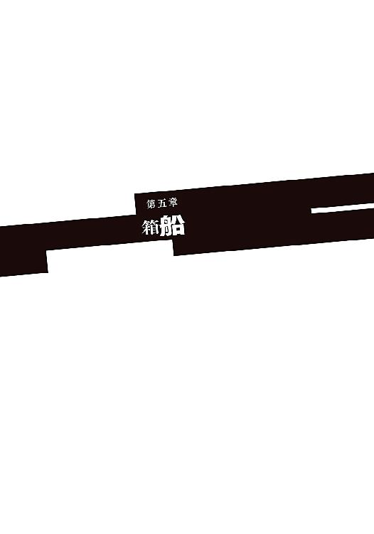
慣れない感覚にふらついたのは最初の数秒だけだった。降魔〝八咫烏〟をその身に宿したソーマはすぐに空を飛ぶコツを摑み、架空の翼を羽ばたかせて気流に乗った。
「いけそうじゃな？」
「ああ。ところで、箱船にはどこから乗り込めばいいんだ？」
「上面に出入り口がある」
メルヴィーユは確信に満ちた口調で言った。
その横顔を見て、ソーマは少しだけ不安になる。箱船の復活以降、メルヴィーユがどんどん記憶を取り戻しつつあるのは間違いない。もしかしたらもう全部思い出しているのかも知れない。ずっと探し求めていた自分の正体を知ったのに──あるいはそれに近いところまで来ているのに、メルヴィーユの表情は晴れやかだとは言いがたい。決戦への緊張感で硬くなっているだけ......ならいいのだけれど。
「開いてなかったら？」
「ぶち破れ」
単純明快なお答えだった。
「分かり易くていいな」
皮肉げに笑う。そのソーマめがけて無数の悪魔が箱船から飛来する。
「空中戦か......」
足場のない空でどれだけ戦えるものか。そもそもどう戦えばいいのか──不安に思うソーマに、メルヴィーユは言い放った。
「突撃あるのみ！」
言うだけではなくソーマの背中に摑まり、その飛行ルートを制御する。二人は一丸となって悪魔の群れに突っ込む。するとソーマに襲いかかろうとしていた悪魔たちが、近付く端から消し炭になって落下していった。
「これは......」
「〝八咫烏〟は太陽の化身。並の悪魔では触れることすら叶わぬ。時間もない。雑魚には構わず突っ切るのじゃ」
「分かった！」
より高く、より速く、ソーマの思いに応じて八咫烏が力を放つ。小さな太陽が無数の悪魔を焼き尽くしながら空を翔る。
飛翔しながらソーマは首をねじって上空──箱船の底面を見上げた。近くに見た箱船は、地上から見上げるよりもさらに大きく、圧迫感も尋常ではなかった。これが人間の造ったものだとはとても信じられない。
箱船の端にたどり着き、垂直に上昇してその上に出る。
「おお......」
ようやく、ソーマは箱船の全貌を見ることができた。「箱」船とは言うけれど、箱の形はしていない。それは大きな街であった。多数の構造物が複雑に組み合わさり、中央部分が盛り上がったなだらかな小山を描いている。どこかでこんなものを見たことがあるな──ソーマが何に似ているのか考えていると、
「まるで三段重ねのデコレーションケーキじゃな」
メルヴィーユが緊張感のないものにたとえたものだから、ソーマは墜落しそうになった。
「......とにかく入り口を探そう」
気を取り直して〝箱船〟に接近する。
見上げていたときも圧巻だったが、見下ろす箱船はさらにすさまじかった。
支えもなしに宙に浮く超巨大建造物。しかもそれはただ浮いているだけではない。多くの人々を乗せ、時空を渡って違う世界から旅をしてきた移民船なのだ。最早ソーマ程度ではその飛行原理を想像することすらできない。
天空の神殿──ふと、そんな言葉がよぎる。
「フン。あっさり中に入れてはくれぬか」
メルヴィーユが不機嫌そうに鼻を鳴らす。
ソーマもほとんど同時に気付いていた。
箱船をケーキにたとえるなら二段目の上の方。無数の構造物がせり出し、石と金属の林のようになっている辺りだ。たなびく雲の中に、すさまじいプレッシャーを放つ何かが潜んでいる。
「来るぞ！」
実際の攻撃はメルヴィーユの警告よりも一拍早かった。雲の中から飛び出してきたのは朱塗りの六角の棍──正確に額を狙ってきたそれをほとんど本能で避ける。驚愕はそれからやってきた。打ち込まれた棍の長さがおかしい。百メートル以上あるように見える。と、その棍がするすると縮み始めた。縮む棍を目で追いかけるとその根元に、緋色の着物を羽織った大柄な猿。
猿の悪魔が振り返り、嫌に人間臭い笑みを浮かべると、立てた人差し指をちょいちょいと動かした。かかってこい、ということなのだろう。
「ソーマ」
「ああ、分かってる。見た目通りの奴じゃない」
ソーマは右手に剣を、左手に〝偽石〟をしっかりと握り直した。
「行くぞメル！ こんなところでもたもたしてられないんだ！」
相手の持つ六角棍はどうやら伸縮自在であるらしい。距離を置けば一方的に突きまくられる。強引にでも接近戦に持ち込むべきだと判断し、ソーマは敵に向かって突進した。悪魔が伸びる棍の突きを放った。見てからでは回避が間に合わない。相手の動作を見て狙いを予測し軌道をずらす。ソーマがまとう〝八咫烏〟の炎熱が突きの圧力で吹き飛ばされた。構わず加速。相手の懐に入ると同時に剣を振る──〝経津主〟は既に展開済み。神魔両断の必殺剣が襲いかかるが、相手は猿そのものの身のこなしでひらりと回避。ソーマは動じない。一発で決められるなんて甘いことは考えていない。さらに踏み込んで二連撃。体勢の崩れた敵悪魔は、しかし棍を伸ばしてその反動だけで横に移動してソーマの攻撃をかわした。続くソーマの攻撃を伏せて回避しながら反撃の蹴りを放つ。ソーマが悪魔を飛び越える。その背中に悪魔が棍で殴りかかる。横殴りの一撃を剣で弾き返し、そのまま踏み込んで切りつける。右、右、左と見せて右。あからさまな隙は罠だと看破された。だがその裏に隠されたもう一つの罠が炸裂する。
「降魔展開──〝建御雷〟！」
『キッ！』
逃げ場を失った敵悪魔は一声鳴くと、虚空に身を躍らせた。雲を突き抜け下層へと逃げるつもりか。
また距離を離されては厄介だ。ソーマも構造物を蹴って敵を追う。敵悪魔が落下しながら身をひねって六角棍を突き出してくる。ソーマは剣の腹に棍を滑らせて凌いだ。一度戻るまでは棍を使った回避も使えない。最大の好機だ。ソーマは偽石を握り込んだ。
「メル！」
「ライブラリ〝黙示録〟解放！ 降魔展開──〝終の炎帝〟！」
魔王の力が体中を駆け巡る。「うっ」とソーマはうめいた。本物の賢者の石とは違って身体への負担が大きい。だが発動した。ここで決める！
剣の先から熱線が一直線にほとばしり、空中で身動きできない敵に殺到する。必殺の一撃は、しかし相手の毛皮すら焼けない。猿の悪魔は雲の上に立っていた。雲を足場にして横に跳び、炎帝の一撃を回避したのだ。
一瞬で立場が逆転した。悪魔が六角棍を構え、落ちてくるソーマに狙いを定める。
「くっ！」
〝終の炎帝〟を使うために〝八咫烏〟は解除している。今のソーマに飛行能力はなく、〝八咫烏〟の再展開は到底間に合わない。
『キキッ』
敵悪魔が猿面を得意げに歪ませる。が、
「......儂のことを忘れておらぬか？」
その耳元で声。メルヴィーユは〝終の炎帝〟が回避されると分かった瞬間、姿を消して先回りをし、悪魔の背後に忍び寄っていたのだ。
姿を現したメルヴィーユは両足を悪魔の首に絡めるようにして頭にしがみつき、視界をふさごうとした。
『キッ!? キーッ！』
「ぬあっ！」
「メル！」
小柄で非力なメルヴィーユは一瞬で引っぺがされて投げ捨てられる。
だがソーマが体勢を立て直すにはその一瞬で十分だった。ソーマは偽石を口に放り込み、空いた左手で敵の頭をわしづかみにすると、落下の勢いも使って強引に傾けさせ、その首筋めがけて剣を振り下ろした。
「降魔展開──〝経津主〟」
最早合図もいらない絶妙のタイミング。再展開した〝経津主〟の刃が、猿の首の左側から入って右の鎖骨へと一文字に抜ける。魔力を失い雲を踏めなくなった悪魔が再び墜落を始めた。
「くっ！」
ソーマは猿の悪魔の体を蹴飛ばすと、その反動で近くの構造物にとびついた。数メートルを落下するが、どうにか突起物を摑んで落下を止める。すぐにメルヴィーユが飛んできた。
「やったなソーマ！ 二人の愛の勝利じゃ。危ないことをするなと？ 分かっておるが夫の危機を見捨てるわけにもいくまい？ 儂もときには体を張るんじゃ......って大丈夫かや？」
「だいひょう......ん」
大丈夫、と言おうとして、偽石を口に入れたままだったことを思い出す。手のひらに吹き出すと、ピキピキッと音を立て、偽石に何本もの亀裂が走った。
「メル、これ......」
「むう............」
偽石は期待以上の力を持っていた。本物の賢者の石と遜色ない出力で降魔を使うことができた。だがその耐久性は、本家とは比べものにならないレベルだった。
「......これはもう、いつ使えなくなっても不思議ではないのう......」
こんなに早い段階でほとんどの力を使い果たしてしまって、箱船を止めることなど──〝黒い蛇〟を倒すことなどできるのだろうか？
「まだディアドラに会うどころか、箱船の内部に進入してさえおらぬというのに......」
メルヴィーユがそう呟いたとき、彼方から雷のような音が聞こえてきた。戦艦アスカロンの砲声だ。
地上でもみんなが戦っている。生きるために。明日をつかむために。
後ろを向いている場合ではなかった。
「行こう、メル。やれるって信じるしかない」
ソーマは構造物を伝って一度平らな部分まで降りた。と、
「ソーマ、あそこじゃ。あそこから入れる」
メルヴィーユが小さな構造物を指さした。どうやら出入り口の一つらしい。近付き、メルヴィーユが脇のタッチパネルに触れると、扉は小さな音を立てて開いた。
「〝黒い蛇〟も箱船の全システムを掌握しているわけではないらしい」
ぽっかりと開いた四角い通路。内部には煌々と照明が点り、落ち着いた色合いの壁と床を照らしている。けれどソーマにはそれが、地獄へ通じる落とし穴に見えた。
「準備は良いか？」
「ああ......」
この先に待つのは絶望的な戦いだ。生きて帰れる保証は何一つない。
けれどもソーマはためらわなかった。
希望はいつだって、絶望の先にあるものだから。
箱船内部に入ると、悪魔の襲撃はぴったりと止んだ。
「船内には悪魔を出現させられない？」
「というわけではないはずじゃ。何なら外にいる連中を呼び寄せてもいいんじゃし」
そうだ。では何故攻撃してこないのか。
「......向こうとしても船内での戦闘は困るんじゃないか？ 箱船を壊されたくない......もしそうなら、手当たり次第壊して回るのもいいかも知れない」
メルヴィーユは心底呆れたようなため息をついた。
「で、具体的にはどうやるんじゃ？」
「え」
「魔剣があるならまだしも、その壊れかけの偽石では箱船を破壊するどころか、壁の二、三枚破ったところで力尽きるぞ。よしんば全体を破壊できたとしても、箱船が聖都に墜落することになる」
「忘れてくれ......」
とソーマはうなだれてしまったが、メルヴィーユは飛行しながら首を傾げ、
「しかし確かに、この静けさは少々気になるところじゃ」
ソーマは歩きながら箱船を観察した。数千年前に異世界の魔法のような技術で建造された移民船──とはいっても同じ人間が使うものだ、構造はソーマがよく知っているファラディースの建造物とそう変わらない。壁があって天井があってドアがあって。試しに入ってみた部屋のにはベッドがあり、作り付けのタンスがある。
もちろん違うところもたくさんあった。ドアは自動で開くし、照明は昼間の太陽のように明るい。壁は一見ファラディースと同じだったが、爪を立てて壁紙をはがしてみると、下から出てきたのは木材でも石材でもない、正体不明の建材だった。
気になったのは居住用と思しき部屋の狭さ。そして窓がないことだった。
「楽園を脱出した人たちは、こんなところで何年も過ごしたのか......」
「乗員のストレスはかなりのものだったらしい」とメルヴィーユ。「それでも楽園に残っていれば死ぬだけ、となれば選択肢はなかった」
「......」
〝黒い蛇〟とは何なのだろう？ とソーマは思った。教皇ディアドラとしてトーマを、人類全てを騙し、破滅に導こうとしているもの。楽園を滅ぼし、終末の厄災を引き起こし、今また人々の前に現れた彼女は何故、執拗に人間を狙うのか。
「行こう」
メルヴィーユが促し、ソーマは再び奥へと進む。目指すは最奥──〝黒い小箱〟の安置されている中枢部分だ。まずは悪魔の発生源である〝黒い小箱〟を止めてしまわなくては、地上が保たない。
中枢への道順はメルヴィーユが知っていた。いや、思い出した。
箱船を目の当たりにしたことがきっかけとなり、メルヴィーユは次から次へと記憶を取り戻しつつあった。
メルヴィーユの案内に従ってソーマは通路を走り、階段を飛び降り、奥へ奥へと進む。エレベーターを使わないのは罠の可能性を考えてのことだ。狭い空間で襲われたらひとたまりもない。時間はかかるが階段で行った方がいい。
それにしても巨大な建造物だ。何十メートル降りただろう。何百メートル進んだろう。整然とした、非常に機能的に造られているはずの箱船の内部で、ソーマは自分の現在位置がよく分からなくなっていた。
「そこじゃ。そこの床自体がリフトになる」
行く手の吹き抜けをメルヴィーユが指さす。
縦横十メートル以上はある巨大な斜めの縦坑。縦坑に面して展望台のようなものがあり、その床部分が半分ほど、黄色にペイントされていた。黄色い床に乗り、手すりのスイッチを押すと、どこかで何かがかみ合う音がして、展望台がゆっくりと下降を始めた。展望台と見えたのは巨大なリフトで、縦坑に敷設されたレールの上を動いているらしい。すさまじい重量があるはずのリフトは、しかし全く振動を感じさせずに下降していく。
「......楽園に住んでいた人間は、ものすごい力を持っていたんだな」
「うむ。そして力に溺れた」
メルヴィーユの言葉にソーマは首を傾げた。
「戦争をしたんじゃよ。楽園の人間たちは二つに分かれ、楽園の支配権を巡って相争った。長い戦いのうち、誰かが悪魔を造り出し、戦争に使うようになった」
「悪魔は......人間が造ったもの？」
「そうじゃ。楽園の人類には、生物を自由に造る技術があったんじゃ。それで便利な家畜などを造り出して、豊かな生活をしていたんじゃが、戦争が始まって、誰かがそれを兵器に転用することを思いついた。......人が造り、人が使役してきた産業生物機械。戦闘用に改造されたそれがこの地に持ち込まれ、やがて人の支配を外れてかつての主を襲うようになったものが、そなたらの知る悪魔なのじゃ」
「悪魔は......人間が造ったもの......」
驚きと同時に、小さな納得があった。悪魔の攻撃性、狩猟ではなく殺傷に向いた様々な能力──生物としては不自然な悪魔の特徴は、「それを目的に作られた」ものだと考えれば一転、非常に合理的に見えてくる。
「〝悪魔〟が投入されたことにより、戦いはさらに激化していった。多くの人が死に、人類社会そのものが力を失っていく。そこに〝黒い蛇〟が現れたのじゃ。戦争によって疲弊した人間たちには〝黒い蛇〟を止めることができなかった。このままでは人類は一人残らず殲滅されてしまう。追い込まれた人間たちは戦争を止め、黒い蛇を葬るために手を取り合った。じゃが少々遅きに失していた。そこで生き残った人間たちは一か八かの賭に出た。大洪水を起こして楽園もろとも〝黒い蛇〟を葬る計画を実行したのじゃ。生き残りは〝箱船〟に乗り込み、新世界へと旅立つ。計画はうまくいったかに見えた......」
神話に謳われる大洪水。それすらも人の行い。この世に神など存在しない──全ては人間の自業自得なのだと言われた気がした。
メルヴィーユの話はその先へ、歴史の狭間に埋もれた物語へと続く。
「......ところが、楽園と共に滅んだはずの〝黒い蛇〟の卵が、どういうわけか箱船に紛れ込んでいたんじゃ。卵から蘇った〝黒い蛇〟は箱船の破壊を試みる。箱船の乗員は悪魔を用いて〝黒い蛇〟と戦ったが、箱船は航行不能に陥り、この星──ファラディースに墜落した。人々は新天地で新しい生活を始めた。そなたらの言う旧世紀の始まりじゃ。〝黒い蛇〟の攻撃によって箱船の機能はいくらか失われたが、それでもこの地を開拓し、再び人類を発展させるに問題はなかった。じゃがその栄華も長くは続かなかった。墜落時に死んだはずの〝黒い蛇〟が復活を遂げ、再び人類を滅ぼそうと活動を始めたんじゃ。人々には〝黒い蛇〟を倒す力はなく、やむなく時空の狭間に封印することにした。......このとき、〝黒い蛇〟と一緒に箱船も封印されてしまったのじゃ。とはいえそれはさほど問題ではなかった。入植直後ならまだしも、そのときには人類は、この地に確かな基盤を築いておった。箱船は必要不可欠なものではなくなっていた」
リフトが縦坑の底に到着した。
降りると、その先には縦坑と同じ幅の巨大な隔壁があった。隔壁は開いていた。
リフトから降りて奥へと進むと、足音が高く反響した。
通路の奥に再び隔壁。こちらも最初から開いている。
「あとは時間をかけて進んでいけば、いずれはこの地を第二の〝楽園〟にできたやもしれん。......じゃが、そうはならなかった。人は再び人同士で争いを始めたのじゃ」
「どうして......」
メルヴィーユは首を振る。
「人間が愚かだからですよ」
「っ！」
割り込む声は通路の先、二枚目の隔壁の奥からだった。
ソーマはメルヴィーユと顔を見合わせ、奥に向かって走った。足音が高く強く響く。
「まあ、おかげで私は時空の狭間から蘇ることができたのですから、感謝しなくてはいけないのでしょうけれど......」
二枚目の隔壁を走り抜けると、その先は球状の広い空間だった。空間がキラキラと輝いている。小さな無数の光が空中を飛び交っている。その空間の頂上付近に、一辺が一メートルほどの黒い立方体──大きさは違うが、クレオン湖で魔王を封じていた箱によく似ている──が、角を下に向ける格好で、何の支えもなく浮かんでいた。
そして黒い立方体の下に、一人の若い女。右手に深紅の剣を持ち、こちらに背を向けて立っている。
「......千年前、この地で人間同士の戦争が始まりました。その戦争の中で、劣勢にあったある陣営が、逆転の秘策として箱船の復活を目論んだのです。箱船を蘇らせ、その力によって悪魔を使役し、この地の覇権を握る。実に愚かで短絡的な考えのもと、小箱のアダムは箱船の封印を解きました。一緒に封印されていたこの私が、〝黒い小箱〟を掌握していたことも知らずに......」
女が振り返った。真っ赤な舌で唇を舐める。
頰は桃のよう。肩は象牙のよう。そして金の瞳は蛇のよう。
「......しかし激しい戦いの末、私は人間に敗れてしまいました。箱船は再び封印され、〝黒い小箱〟との接続を失った私は、人間たちに見つかって滅ぼされないよう必死で逃げ回る、屈辱の千年間を過ごす羽目になったのです。それがあなたのお兄様のおかげで、こうして再び〝黒い小箱〟を我が物とし、かつての力を取り戻すことができました。お礼を言います」
その蛇の瞳を細めて教皇ディアドラは──人類の仇敵〝黒い蛇〟は言った。
「箱船の中枢へようこそ、ソーマ・ノイン・スオウ」
「初めまして。と言うべきかしらね。あなたのことはお兄様からよく聞いていたのだけれど」
箱船の中枢、光の粒子が舞う空間の中心部に立って、ディアドラは柔和な笑みを浮かべている。何も知らずに対面したのなら、彼女こそ聖女、神の遣いであると言われても信じたかも知れない。けれどもその聖女のドレスは血に汚れていた。
「お前が......兄さんを......」
殺したんだな？ そう訊ねたつもりだったが、ディアドラは違った意味に受け取って答える。
「トーマに初めて会ったのは聖都大学の入学式だったわ。彼が私に一目惚れしたことはすぐに分かった。私は彼に誘いをかけた。彼は私に夢中になった。けれども彼は、身分の違いを最後まで気にして、結局田舎に帰ってしまった。私のことは忘れることにして、幼なじみと結婚することに決めたのだとか」
「......」
トーマは大志を抱いていた。優れた悪魔学者となり、人類の為に貢献するのだと。それが大学卒業後、すぐに帰ってきたことは、当時もちょっとばかり疑問ではあった。その理由が失恋にあったと知ってソーマは少し驚いた。
「そこで私は彼にこんな手紙を出したの。『私はあなたが去ってしまって寂しい。寂しくて死にたくなる。私も元は農家の娘。身分の違いが何でしょう？ そもそも身分制度などというものはずっと昔に廃止されています。枢機卿たちが反対するというのなら、それを黙らせるくらいのものを突きつければいいのです』......そのお手紙にね、私は一つの魔法陣を添付しました」
「っ!! まさか！」
ディアドラが蛇の目で笑う。
「......『〝終末の厄災〟で悪魔の群れを討ち滅ぼした古の軍勢──〝天使〟。これを現代に蘇らせることができたなら、歴史的偉業を達成したのなら、その者を教皇の夫にふさわしくないとは、誰も口にしないでしょう』......。彼はその気になった。でも、その魔法陣は欠陥品だった」
「お前が！ お前がアラドの街を！」
ソーマは激昂した。メルヴィーユが慌ててソーマにしがみつき、動きを止める。
「まて！ 落ち着くのじゃ」
「けど、こいつが！」
「勘違いされては困ります。私はトーマに、魔法陣の欠陥を補ってもらうことを期待したのです。それに失敗したのはトーマ、街に悪魔を大発生させたのは、己の能力を過信し、不相応な相手との将来を夢見たトーマよ」
「......っ」
「でもトーマは失敗をただの失敗で終わらせる男ではなかった。魔法陣から悪魔が出現したこと、その魔法陣の意味、それまでに得た膨大な知識とをつなぎ合わせて、箱船の実在に気付いた。それが彼の新たな不幸の始まりではあったのだけれど」
ディアドラは笑っていた。懐かしそうに、楽しそうに。自分が弄んだ男のことを語る。
「彼は私のところへ戻ってきた。箱船を蘇らせて全ての人類を──死者も含めた全ての人類を救う。そのために全てを投げ打つ覚悟だと。......私の正体も知らずに熱っぽく語る彼はとても可愛かったわ。私は聖女のように彼を許し、優しく受け入れた。その後はもう、彼は私の言うがまま。それが人類滅亡の手伝いだとも知らずにせっせと働いて」
「トーマを魔法で操ったのか？ 自由意思を奪って」
「まさか！」
メルヴィーユの問いを、ディアドラは大げさに否定した。
「そんなことはしませんわ。騙して働かせるのが楽しいんじゃない。それと、騙されていたと知ったときの間抜け面を眺めるのが。私がしたのは、甘い言葉を囁いたことと、ああ、あなたを殺そうとしたこともあったわね」
「俺を!?」
「ええ。一年前のアラドの街で、トーマはあなたを殺すつもりはなかったのよ。あれは私が〝千の無貌〟を操ってやったの。親族が全員死んで孤独になったら、きっとトーマは私のところへ来ると思ってね。思い通りになったわ」
「............」
ソーマは奥歯を強く嚙みしめた。
「いい顔......。ぞくぞくするわ。ねえ、私が憎い？ 殺したい？」
「一つ、聞きたい。何でこんな回りくどいことをした？」
教皇として教会の全権を掌握していたディアドラには、トーマを誑かす必要などないはずなのだ。何でも命令すれば教会が動いてくれる。外部の協力者などいなくても、ディアドラには今日のこの惨劇が引き起こせたはずだ。
「趣味」
予想外の返事にメルヴィーユもソーマも面食らう。
「私ね、人を困らせるのが、苦しめるのが大好きなの」
「......悪魔を操って人々を襲わせているのもその一環だと？」
「そうよ」
「何故そんなに人間を嫌う？ 憎む？」
「何故って......そういう風に造られたからしょうがないじゃない」
「......造られ......た？」
「そうよ。私は人間に造られたの。......楽園で戦争があったことはご存じ？ そこでね、長く続きすぎた戦争で、殺し合いで、ついに人間そのものに嫌気がさした科学者がいた。彼が私を造ったのよ。もうこんな人間に生きている価値などない、全部殺してしまえ、って」
「そして今も人類を付け狙っている......か、いくら何でも執念深すぎるじゃろう」
「人間に造られた......ということはお前も、〝黒い蛇〟も悪魔の一種なのか？」
「あんな下等な機械と一緒にしないでもらえるかしら。まあ、あなたたちには区別も理解もできないのでしょうけれど」
ディアドラはさも不機嫌そうに言った。
メルヴィーユはため息を一つついて、
「一つ聞きたい。仮に人類の殲滅が成ったとして、その後はどうする？ そなたは存在意義を失うのではないかえ？」
「この後のこと？ もちろん考えているわ。新しい世界を造るの。ソーマ、あなたをここまで入れたのは、そのためでもあるのよ。あなたには、新世界のアダムになって欲しいの」
「何だと!?」
驚くソーマ。メルヴィーユは床に唾を吐いた。
「そして貴様が新世界のイブか？ ふざけよって。ソーマの妻は儂じゃぞ！」
「まさか。私は人間じゃないもの。人間の子供なんて産めないわ。あなたも悪魔のくせに人間の妻を気取るなんていい加減止めたら？ みっともない」
「ぐ......」
ディアドラが左手を腰の高さに上げた。と、床の一部が変形して演台のようにせり上がってくる。ディアドラが細い指でその演台の表面を撫でると、天井付近に浮かぶ〝黒い小箱〟から、虹色の光の粒が大量に降り注いできた。
「これは！」
悪魔がこの場に生み出される──そう思って構えたソーマであったがしかし、出現したのは悪魔ではなく人間、それもソーマがよく知っている人間であった。
ふわふわの金の髪。ちょっと垂れ目気味の、和やかな眼差し。記憶よりも少し小さく見えるのは、この一年半でソーマの背が伸びたからだろう。
「......」
それは、紛れもなくソーマの幼なじみ。アラド崩壊の日に命を落としたはずの、レンリ・クロアであった。
「......」
「レンリ！」
泣きそうになりながらソーマは踏み出し、そこで何かがブレーキをかけた。
違和感。
「どうしたの？ そーま？」
レンリが言った。にこやかに微笑んではいるけれど、その顔にはどこか茫洋とした印象がある。心ここにあらず。
「レン......リ......？」
「はい。わたしはれんり。そーま。あなたの、妻、よ」
レンリではない。レンリの形をしているけれど、これはレンリではない。なんだこれは。
メルヴィーユが顔をしかめた。
「これはただの生き人形、人の形に整えただけの、肉の塊じゃ。いかな〝箱船〟、〝黒い小箱〟じゃろうと、魂を創造することは叶わん。一度失われた魂を呼び戻すことも叶わん......」
「......」
ディアドラが肩をすくめた。
「お気に召さなかったかしら？ じゃあどんなのが好み？ 遠慮は必要ありませんよ。どんな相手でも思いのままに造り出せますから」
「つまらん真似はよせ。その気もないくせに何が新世界のアダムとイブじゃ」
「分かりますか」
「当然」
ディアドラの話には根本的な矛盾がある。
ソーマを新世界のアダムにしてしまっては、〝楽園〟から続く血脈が保たれてしまう。それでは彼女の目的である人類の根絶は達成されないことになってしまう。ディアドラは、終末の厄災で敗れてほとんどの力を失い、それでもあきらめずに、千年もの間姿を隠し続けて機会を狙う周到さ、用心深さの持ち主だ。自分の言っていることの意味が分からないような馬鹿ではない。
ディアドラはただ、ソーマを──目の前にいる人間を苦しめたいのだ。不愉快にさせたいのだ。常に人間をなぶらずにはいられない。相手の嫌がることをせずにはいられない。
それが〝悪意〟の体現者たるディアドラの本性なのだ。
「ではこれはもう用済みですね」
ディアドラが手を伸ばし、レンリの生き人形、その首を摑んだ。片手で持ち上げて、無造作に投げる。人形が壁に激突し、骨が折れたのだろう、手足をおかしな向きに折り曲げて床に落ちた。
「......っ」
あれはただの人形。レンリ本人ではない──頭では分かっているのだけれど。
「......世界のためとか人類のためとか、そんなのはどうでもいい。お前が、お前が兄さんを誑かして人生を狂わせた」
そしてそのおかげでレンリが死に、ソーマの運命も大きく変わった。
「全ての元凶はお前だ！」
「そうね。その通り。で？」
ソーマの返事は行動だった。
「待て！ 落ち着くんじゃ！」
メルヴィーユが制止するがもちろんソーマは止まらない。
「止めるな！ 戯れ言に付き合うのはもうたくさんだ！ 今すぐ黙らせてやる！」
「あらぁ、熱い口づけでもくれるのかしら？」
激昂するソーマに、しかしディアドラは余裕を見せる。
「ソーマ！」
メルヴィーユは舌打ちをした。
ソーマの踏み込みに合わせてディアドラが後ろに飛ぶ。逃がすものか。ソーマは踏み込みの速度を上げた。
ディアドラはさらに下がる。たおやかな見た目に反して身体能力が高い。降魔を使ったソーマに勝るとも劣らない動きだ。それでも、前進するソーマと後退するディアドラではソーマの方が速い。両者の間合いがぐっと詰まり、しかしまだ剣の間合いにはほど遠いところで、ディアドラが左手を突き出した。
「......〝百手巨人〟」
ディアドラが呟いた瞬間、その左肩がぼこぼこと瘤のように膨れあがった。無数の瘤は何メートルもある長い腕へと成長してソーマに襲いかかった。
「っ！」
驚きながらもソーマは即座に迎撃に入る。剣を閃かせて迫り来る拳を叩き切り、蹴り飛ばし、ぎりぎりで回避──したはずの拳が反転してソーマの頸動脈を狙う。
「降魔展開──〝迦具土〟」
メルヴィーユが呪文を唱える。ソーマの全身から高熱の炎が吹き上がった。ソーマを狙っていた拳がひるんで距離を取る。ソーマは振り向きざまにその拳を切り落とした。
ふと違和感が走ったが、戦闘中に考えている時間はなかった。
続いて襲ってくる拳を打ち払いながら距離を詰める。下がるディアドラの背中が壁に当たった。追い込まれたディアドラが靴を脱ぎ捨てると、そのつま先に蛙のような吸盤が生成される。
どうやらディアドラは悪魔を操るだけでなく、自分の体を変化させることによって、悪魔の能力を使うことができるらしい。伝説における〝黒い蛇〟には決まった姿がない。それはこういうことだったのだ。
ディアドラが壁を登ってソーマの剣を回避し、右手の剣でソーマに斬りかかる。遅い。剣で撃ち返し、無防備になった心臓めがけて突きを放つ。それをディアドラは、硬質化した左手で摑んで止めた。ディアドラが再び剣を振る。
「降魔展開──〝銀の腕〟」
メルヴィーユの呪文が響く。ソーマは悪魔の力を宿し、銀色に変色した腕でディアドラの剣を受け止めた。
「く......」
お互いの武器を封じ合う態勢ができあがる。しかしソーマにはメルヴィーユがついている。
「ライブラリ〝黙示録〟解放！ 降魔展開──〝魔眼〟！」
「っ！」
ソーマがディアドラをにらみ据えた。その目から鋭い光が放たれる。察したディアドラが首をひねって光を避けようとしながら、同時に刃のような尻尾を生やしてソーマへと反撃する。
「ぐうっ！」
ディアドラの尻尾がソーマの脇腹をえぐった。けれどそのときには、ディアドラの頭部は致死の眼光に射貫かれて爆散消滅していた。
ディアドラの体から力が抜け、壁から離れてソーマの上に落ちてくる。ソーマはその忌々しい物体を押しのけ、息をついた。
「......やった？」
「ようじゃが」
ディアドラの死体はぴくりとも動かない。確かに死んでいる。けれど、
「......妙にあっさりしてるな」
「うむ。悪魔を自由に操れるからといって、単体での戦闘力まで高くなければいけないわけではないが......」
それにしても弱すぎるのだ。楽園を滅ぼすきっかけとなり、終末の厄災で人類社会を後退させた怪物とはとても思えない。
「ともかく指輪と魔剣を回収しよう。箱船を止めねば......」
メルヴィーユがしゃがみ込み、ディアドラの死体から剣と指輪を取るが、
「やられた！」少女悪魔は悲鳴を上げた。「これは魔剣でも楽園の指輪でもないぞ！ 真っ赤な偽物じゃ！」
「何だって!?」
と、そのときだった。
入り口にあった隔壁が突然閉じた。
ソーマは急いで駆け寄り、隔壁側のスイッチを押したが何の反応もない。
「閉じ込められた!?」
『うふふふふ。本当にお馬鹿さんたち......悪魔、〝二重写し〟と本物の区別もつかないなんて』
どこからともなく声が聞こえてくる。
「ディアドラ！ どこだ！」
『お答えすると思いまして？』
「くっ......」
『私としても残念ではあるのですよ？ トーマの弟さんと〝希望の悪魔〟......是非直接お会いしたかったし、遊んであげたかったのですけれど、私には使命がありますから』
〝黒い蛇〟の使命──人類の滅亡。それなら今実行中ではないのか？ 大量の悪魔を生み出し、人間を殺すことで。ソーマの思考を読んだように、ディアドラはフフフと笑った。
『以前はそれで失敗しましたから。人間のしぶとさもね、私に負けず劣らず。一人一人殺していくのは効率が悪すぎですね。私としては、この手で殺して回る方が好みなのですけれど」
「奴は人類を一気に殲滅するつもりか......しかしどうやって......そうか!? そのために奴は箱船を」メルヴィーユが大きな声を上げた。
「どういうことだメル!? 奴は何を企んでる？」
「洪水じゃよ！ 〝楽園〟を滅ぼした大洪水を、奴はこの地に再現するつもりじゃ。そのために箱船が必要だった......〝黒い小箱〟から生み出す悪魔の群れなど、ただの時間稼ぎに過ぎなかったんじゃ！」
『正解。ご褒美は、無力感を嚙みしめながらファラディースの滅亡を見届ける権利です』
「ディアドラ！ 貴様！」
『大洪水の準備はまもなく最終段階です。止められるものなら止めてご覧なさい。でもあがけばあがくほど、絶望が深まるだけ......精々私を楽しませて下さいまし！』
〝悪意〟の哄笑が箱船の中枢に響き渡り、唐突に消えた。
「待て！ ディアドラ！」
ソーマは天井に向かって声を張り上げる。しかしディアドラからの返答はなかった。
「くそっ！」
誘い込まれた。手のひらの上で踊らされた。己の間抜けさ加減に腹が立つ。苛立ち紛れに隔壁の操作パネルを叩き、次には隔壁そのものに蹴りを見舞うが当然びくともしない。
「メル！」
ソーマは降魔を使って隔壁を破ろうとメルヴィーユに声をかけるが、
「無駄じゃ」
「無駄!?」
驚いて振り返る。メルヴィーユは部屋の中央で、先ほどディアドラ──に扮した悪魔、〝二重写し〟──が触っていた、演台のような端末と向かい合い、何かの操作をしていた。その手を動かし続けながらソーマをちらりと見て、
「悪魔の力でこの部屋を破壊することはできぬ」
「そんなのやってみなくちゃ、」
「〝魔眼〟を使ったじゃろうが」
「あ」
先ほど〝二重写し〟に対して使った〝魔眼〟は、その視線上にあるものの一切を破砕する魔王である。〝二重写し〟を仕留めたあともソーマは目を閉じたりはしなかったから、背後の壁も粉々になっていなければおかしいのだが、そこには今、悪魔の血がべっとりとついているだけで、傷もへこみもない。
「この部屋自体、悪魔の力を無効化する仕掛けがあるんじゃよ」
「俺たちを閉じ込めるにはうってつけ、ってわけか......くそっ」
再び吐き捨てて壁を殴る。
「やめい。八つ当たりしても疲れるだけじゃぞ」
「......お前は何でそんなに落ち着いてるんだよ？」
「そなたは何故そんなに焦っておるんじゃ？」
「何故って」
閉じ込められたから。このままでは世界が滅んでしまう、ファムやロウたち、地上のみんなが死んでしまうから。
「逆に考えてみよ。何故、奴は儂らを閉じ込めた？ 楽園を滅ぼし、終末の厄災を引き起こした、あらゆる悪魔を使役し自らも悪魔の力を用いる、魔王を超えたような奴ぞ。儂らのことなどプチッとひねり潰して、それからゆっくり大洪水でも人間狩りでもすればよかろう」
「言われてみれば......」
「奴は儂らと戦いたくないんじゃ。儂らのことを脅威と感じておるんじゃ。小賢しい策を弄して時間稼ぎをせねばならんのじゃ」
「ということは......」
「つまり、まだ勝ち目がある」
メルヴィーユは顔も上げずに答える。と、その周囲に無数の文字盤が立体的な映像となって浮かび上がった。メルヴィーユはそれを瞬時に読み取って、
「良し良し。思った通り、奴は箱船の全てを掌握してはおらぬ。これならいけるぞ」
「これは......？」
ソーマは揺れる文字盤に目を凝らし、手をかざし、恐る恐る触れてみた。手がすり抜けた。
「......なんだこれ？ 空中に書いてあるのか？ 楽園の技術ってすごいんだな......」
「不用意に触るでない。これは箱船の管理システムの操作端末じゃ」
「ってことは、隔壁を開けられるのか？」
「いや」
あっさり否定されてソーマはつんのめった。
「隔壁は緊急モードで閉鎖されておる。これはここからでは解除できぬ。解除コードは奴しか知らぬじゃろうな。さあどうする？」
「んん............」
眉間にしわを寄せるソーマを見て、メルヴィーユは楽しそうに笑った。
「奴にしか開けられないなら、奴に開けさせればいいだけじゃ」
「だからどうやってだよ」
「今から管理システムを通じて箱船を落とす」
「っ!?」
驚くソーマ。メルヴィーユはにやりと笑って、
「......ふりをする」
「ふり」
「そうじゃ。奴が起こそうとしている大洪水には箱船の力が必要となる。奴としても大洪水を起こす前に箱船を失うわけには行かぬ。儂が箱船を落とそうとすれば必ず邪魔してくる。まずは向こうも管理システムに接続して、儂の操作を取り消そうとするじゃろうな。......それでも埒が明かなければ物理的な手段に出る。つまり......」
「ここに悪魔の群れを殺到させる。そこの隔壁を開けて」
「うむ。儂らを閉じ込めて勝った気でいる奴に、自分から儂らを解放させるのじゃ。これほど愉快なことはなかろう。くっくっく。奴の悔しがる顔が楽しみじゃ」
メルヴィーユは今から笑いが堪えられない様子。
笑うメルヴィーユを見ていて、ソーマはあることに気付いた。
「あのさ、管理システムを自由にできるなら、とりあえずあれ、止めてしまえないか？」
そう言いながら指さしたのは、天井付近に浮かぶ黒い立方体だ。
悪魔の源たる〝黒い小箱〟を停止させれば、地上で暴れる悪魔たちも活動を停止するはずである。
「さすがにそれは無理じゃ。箱船の復活から儂らが乗り込むまで、それほど時間がなかったせいじゃろうな。奴は箱船の全てを掌握してはおらぬ。今儂が管理システムに介入できているのもそのおかげじゃ。じゃが、黒い小箱や魔法陣関連はさすがにがっちり押さえられておる」
「じゃあぶっ壊してしまうとか。それともあれにも悪魔の攻撃が通じないようになってる？」
「いや、これを破壊すること自体は可能じゃ。が......」
「が？ それで何かまずいことがあるか？」
「〝黒い小箱〟を破壊すれば全ての悪魔は消滅するが、ディアドラは例外じゃ。あれは箱船由来の悪魔ではない故、箱船がなくなっても存在し続ける。一方で儂は箱船に由来する悪魔じゃ。〝黒い小箱〟が失われれば、存在を維持できなくなる」
「そうか......それじゃ問題外だな」
「あちらとしても、本当は箱船なんぞ叩き落として、儂を消滅させてしまいたいところじゃろう。しかしそれをしてしまっては人類抹殺が極めて困難に──事実上不可能になるからできぬのじゃ」
「〝黒い小箱〟は、お互いの急所のようなものか。どちらからも手は出せない。だからあいつは俺たちをここに誘い込み、閉じ込めた」
「そう言うことじゃ」
メルヴィーユは端末に指を滑らせた。
仕上げのように、タン、タン、タンと端末を叩くと、ゴン......とどこかで何かが動く音がして、それからゆっくり、ゆっくり、部屋が斜めに傾き始めた。メルヴィーユが航法装置を操作して箱船のバランスを崩させたのだ。
傾いた床がすぐに復元を始めた。どこかからディアドラが干渉してきたのだろう。メルヴィーユが唇を舐めて端末に向き合う。今度は行き過ぎて逆方向に傾く。
「お、とと......」
そのような揺れが幾度も繰り返され、そのたびに傾斜が大きくなっていく。
「大洪水を起こすための魔法陣は、箱船の最上部に刻まれておる。つまり奴は今、箱船の外側、屋根の上で、儂らよりも何倍も激しい揺れに見舞われておるはずじゃ。くっくっく、魔法陣の起動準備は捗っておるかのう？」
そう言いながらメルヴィーユは再び端末に指を走らせ、タン、とタップした。
「主機点火、箱船、移動開始、ついでに高度もどーんと落としてみようかの」
前後左右にかしぐ箱船に、さらに斜め下方向への加速度が加わった。船体のバランスが一層悪化する。メルヴィーユが宙に浮き、ソーマは端末の根元にしがみついて体を支える。
「......やり過ぎるなよ」
「たわけ。手加減しては落とすふりだと見抜かれるわ。ここで華麗にターンじゃ！」
この悪魔、どう見ても悪乗りである。けれどもそれが功を奏したのかも知れない。
それまでで最大の傾斜を記録した直後、隔壁が音もなく開いた。
「来た！」
「降魔展開──〝旋風響鬼〟！」
すかさずメルヴィーユが呪文を唱えた。
荒れ狂う突風が進入してきた悪魔の群れを隔壁の向こうへと押し返す。隔壁の向こうは狭い通路だ。その細い通路がまるで銃身のような役割を果たして、悪魔の群れを猛烈な勢いで反対側へ撃ち出した。撃ち出された悪魔の弾丸は後続の群れに突っ込み、リフトの斜抗に断末魔を轟かせる。この一発で二、三十体は片付いただろうか。
けれどもそれは、差し向けられた軍勢のほんの一部でしかない。
ディアドラに操られる悪魔たちが次から次へと箱船内部に出現し、ソーマとメルヴィーユめがけて殺到してくる。その数は数百か、数千か。数えるのも馬鹿馬鹿しくなる圧倒的多勢を前にして、しかしメルヴィーユは不敵に笑う。
「さあ、あの女の悔しがる面を拝みに行こうではないか！ 降魔展開──〝金鬣汗馬〟！」
虚空に駿馬の嘶きが轟く。群がる悪魔の頭上を一気に飛び越えて、ソーマは斜坑の壁を駆け上がった。
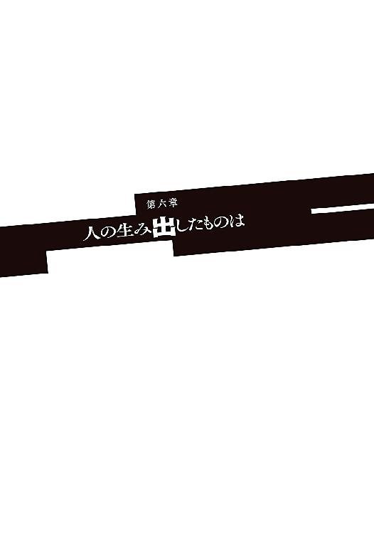
通路を駆け抜け階段を駆け上がり、出くわした悪魔を飛び越える。
群がる悪魔は無尽蔵。積極的に戦うつもりはソーマたちにはなかった。いちいち相手にしていては、時間と体力を無駄にするだけだ。作業用ピットを駆け上がり、今上ってきたばかりの鉄階段の支柱を切り離して蹴り飛ばす。ソーマの後を追って階段を上ってきていた悪魔の群れが、階段もろとも闇に消える。
「これでしばらくは後ろの心配をしなくて済むか」
しかし前方に大量の悪魔が新たに出現する。
ソーマは悪魔の攻撃を避け、走り、ひたすら前に進むことに専念した。とにかく敵の数が多すぎて、周囲の状況を見ている余裕など全くない。それでも迷子にならなかったのはメルヴィーユの的確な案内のおかげだ。
「ソーマ、こっちじゃ！」
ほんの少し先行していたメルヴィーユが、突き当たりの壁に設置されたパネルに触れる。壁が左にスライドする。壁と見分けがつかなかったが、非常用脱出口だったらしい。
全開になった脱出口から湿った空気が大量に流れ込んでくる。闇に漂う雨の臭いは大洪水の前触れか。
ソーマは箱船の外へと飛び出した。振り向くと悪魔の群れも追ってきている。
「降魔展開──〝邪石鶏〟」
ソーマは迫り来る悪魔の群れに向かって強く息を吐いた。その息に触れた悪魔がたちまち石化し、通路をふさいでしまう。いずれは突破されてしまうだろうけれど、それなりには時間が稼げるはずだ。
見回すと、どうやら一層目の真ん中付近に出たらしい。壁面に沿って通路が螺旋状に備えられていたが、真面目に道順を守る必要もない。ソーマは降魔によって増強された身体能力をフルに発揮し、壁面の突起物を利用してほぼ垂直に外壁を伝って箱船の最上部へと到達した。
「......」
先ほどのメルヴィーユの操作によって箱船は高度をぐんと落とし、その巨体を雲のすぐ下へと移動させていた。箱船の屋根から、分厚い雨雲までの距離は二十メートルもないだろう。すぐ目の前に見える黒雲の中に稲妻がいくつも走り、全身を叩くような雷鳴が轟いた。
閃光が、箱船の屋上に刻まれた幾何学模様と、その中心付近に立つ一人の女──女の形をした怪物の姿を浮かび上がらせる。
「......因果は巡るものですね。人はかつて、この大洪水の魔法陣を用いて私を滅ぼしました。そして今、人はこの魔法陣によって滅びるのです。私の手で」
と、ぽつぽつと大粒の雨が降り始める。大洪水の魔法陣が稼働を始めたのだ。この雨が降り注ぎ、やがて大陸を水没させる。地上のあらゆるものを吞み込んで。
世界に終焉をもたらす雨の中、ディアドラが音もなく振り返った。右手の魔剣を無造作に揺らす。
「お兄様の最期はいかがでした？ どのくらい悔しがりました？ 聞かせて下さいな」
「安い挑発だな」
ソーマは剣を構えた。
兄のこと、レンリのこと、この世界のこと──言ってやりたいことは色々あったが、それらがソーマを動揺させることはもうない。これまでのこと全てを吞み込み、ソーマはここに立っている。
結局のところソーマは一介の剣士であった。何を語るにも剣一本で足りるのだ。
「かかって来い。兄さんの無念も俺の怒りも、お前の体に直接刻んでやる。もちろんこの世界も、お前なんかには滅ぼさせない」
「人間風情が吠える......不愉快ですね」
雷鳴が轟く。
蛇の目が闇に輝く。
メルヴィーユが右手を振り上げる。
ひときわ激しくなった雨が、ソーマの踏み込みの音を消した。
終末へのカウントダウンが始まる。
雨水を弾いてソーマが飛び込む。
その後方でメルヴィーユは構えたまま、まだ呪文を唱えない。戦いはいつだって先手必勝。本当なら相手の前に姿を現したりはせず、死角から不意打ちを叩き込みたかった。そうしなかった──できなかったのは、箱船中枢での戦いがあったからだ。
（こやつは本物の〝黒い蛇〟なのか？）
偽石はもう本当に、いつ砕けてもおかしくない状態だ。次の一発がおそらく最後になる。切り札を偽者相手に無駄撃ちしてしまったら、自分たちの勝ち目は完全に消える。確実を期さなくてはいけない。
メルヴィーユのその慎重さが、敵に先手を与えることになった。
ディアドラが魔剣を左手に持ち替えた。自由になった右手の人差し指をメルヴィーユに向ける。
嫌な予感に襲われてメルヴィーユは飛行を中止し、箱船の天井に身を伏せる。同時、
「〝終の炎帝〟」
それまでメルヴィーユがいた空間を、数千度の熱線が夜を赤々と照らしながら貫いていった。
「メル！」
「無事じゃ！ よそ見をするな！」
「っ！」
ソーマが相棒の心配をしたほんの一瞬の隙。それを突いて肉薄したディアドラがソーマに向かって手のひらをかざす。
「っ！」
撃たせたらやられる！ 瞬間の判断。ソーマは逃げるのではなく、逆にディアドラに体当たりを仕掛けた。二人はもつれ合って箱船の屋根の上を転がる。ほぼ同時に起き上がる。剣の間合いよりもさらに内側。ソーマは腿のナイフに手を伸ばすが、
「〝百手巨人〟」
ディアドラの肩口から無数の拳が生えてきてソーマを滅多打ちにした。中枢で偽者も使っていた攻撃だが、破壊力が桁違いだ。一撃ごとに筋肉が痺れ、骨が軋む。たまらずソーマは距離を取った。と、
「〝魔弾〟」
ディアドラの爪がすさまじい勢いで発射される。一直線に飛来する爪の弾丸をソーマは横に動いて避けようとするが、弾丸はソーマの動きに対応し、瞬時に正確に軌道を変えてくる。百発百中の悪魔の弾丸がソーマに迫る。
「降魔展開──〝迦具土〟！」
メルヴィーユが呪文を唱える。ソーマの全身から灼熱の炎が吹き出し、迫る弾丸を着弾の寸前で焼き尽くした。ソーマはそのまま炎をまとって突撃する。ディアドラの手には既に新たな爪が生えている。その爪がさらに伸び、五本の細く鋭い刃となってソーマの剣を受け止め、逆に切り裂こうとしてくる。ソーマは迷わず剣を捨てた。腿のナイフを抜いてディアドラの心臓めがけて突きを入れる。ぞぶりと肉を貫く感触。ディアドラの形のよい胸から鮮血があふれ出し、しかしディアドラは平然とした表情で、肩から生やした腕でソーマの首を絞めにかかる。
「ちっ！」
ナイフを抜いて素早く後退。
ディアドラは追撃してはこなかった。魔剣を右手に持ち替え、左手で傷口を撫でる。たちまち傷口が消え失せた。
「化け物め......」
「私が化け物なら、同じことができるあなたたちも化け物になりますね？」
「......」
どこがだ、とソーマは思った。
降魔はあくまでも紛い物だ。本物とほとんど変わらないことができても、本物の悪魔とは決定的に違う点がある。それは使用者が人間であること。降魔を使えば使うほど、ソーマの体はその負荷によって損傷する。いずれ動けなくなる。それにソーマが高位の悪魔の力を使うには、魔剣のサポートが絶対に必要だ。
ところがディアドラはどうだ。あらゆる悪魔の力をぽんぽん使う。何らかの負担があるような様子もない。
箱船の中枢でメルヴィーユはディアドラを──〝黒い蛇〟をこう言った「あらゆる悪魔を使役し自らも悪魔の力を用いる、魔王を超えたような奴」。
しかもディアドラはまだ全く本気を出していない。小手調べ以前。遊んでいるレベルでこれなのだ。ディアドラこそが本当の化け物であり、悪魔だ。これに比べたら自分たちなど手品の得意な猿のようなものでしかない。
けれど、
「......力の差を理解して、まだそのような目つきをするのですか」
「あきらめる理由が何もないんでね」
「いや、むしろ倒し方が分かった、と言っておこうかの」
「つまらないはったりですね」
「そう思うなら受けてみよ！ 降魔展開──〝雪の女王〟、〝凶氷鳥〟！」
降魔の連続発動。絶対零度の冷気が雨に濡れた箱船の屋上を瞬時に凍らせる。ディアドラが背中に鷹のような羽を生やして舞い上がる。だがそこは〝凶氷鳥〟の領域だ。凍り付いた雨粒が大気中の水蒸気も取り込んで、無数の氷のナイフと化し、激しい雪竜巻に乗ってディアドラへと襲いかかる。
「小賢しい......〝暴炎旋〟」
雪竜巻の内側に炎の竜巻が立ち上がる。氷のナイフがことごとく瞬時に蒸発し、ディアドラは一瞬、水蒸気の渦に包まれた。その隙をついてソーマが頭上から襲いかかる。回収した騎士剣を逆手に構えて急降下。
ディアドラが左手を突き上げる。その手が白銀に染まり、騎士剣をあっさり受け流す。無防備に墜落してくるソーマを見上げて魔剣を構える。
「降魔展開──〝死角の猟犬〟」
メルヴィーユが呪文を唱えた。
ソーマの姿がかき消え、タイムラグなしでディアドラの背後の死角に出現する。
次の瞬間、
「あ......ぐ......」
ソーマが苦しげにうめく。ディアドラの不意を突いたはずのソーマの左胸に、深紅の刃が深々と突き刺さっていた。
「ソーマ！」メルヴィーユが悲鳴を上げた。
「だから小賢しいと言ったのです」
ただ死角に回っただけでは対応されてしまうだろうから、ソーマたちは二段構えの奇襲を組み立てた。一度目はわざと見つかって反撃させ、より大きな隙を作らせてから〝死角の猟犬〟で死角に回る。
しかしディアドラは、ソーマたちが〝死角の猟犬〟をどこかで使うことを予測していた。〝死角の猟犬〟の特性は「必ず死角に回り込む」こと──逆に言えば、「自分のどこに死角があるか把握していれば、相手の出現位置が分かる」のだ。後はそこに攻撃を置いておけば、相手の方から勝手に刺さってきてくれる。
「ぐ......あ......」
「分かりますか？ このような小細工をしなければいけない時点で、あなたたちには勝ち目などないのですよ」
ディアドラが振り返り、ソーマの左胸に手を伸ばして服を切り裂いた。魔剣の一撃で砕かれたのだろう、偽石の破片がソーマの血と一緒にこぼれ落ちた。
「残念でしたね、ここまで温存したのに使う前に潰されて」
「......そうでも、ないさ」
息も絶え絶えのソーマが言う。ディアドラが眉間にしわをよせてソーマを見る。魔剣に心臓を貫かれ、間違いなく致命傷のはずなのに、ソーマは勝ち誇った顔をしている。
魔剣に心臓を貫かれて。
「っ！」
ディアドラは気付いた。ソーマが──魔剣の本来の主が今、魔剣に貫かれている。魔剣に触れている。
その意味を理解してディアドラが魔剣を引き抜こうとする。けれどもソーマがそうさせない。ディアドラの右手ごと魔剣の柄を握り込んで、
「やれ！ メル！」
「〝黙示録〟解放！ 降魔展開──〝不死鳥〟！」
渦巻く炎がソーマを中心として、一羽の大きな鳥の形を作る。
死と再生を司る悪魔──〝不死鳥〟。その炎はソーマの傷を癒やしながら、同時にディアドラを焼き尽くそうと羽ばたいた。
「ああああっ！」
ディアドラの右手がたちまち炭化を始め、続いて腕にも火が回る。逃れようにもその手はソーマががっちり摑んでいる。ディアドラは迷わなかった。
「〝鎌鼬〟！」
瞬時に生やした刃の尻尾で自分の右腕を切り落として、ディアドラは〝不死鳥〟の炎から逃れる。
ソーマは自分の胸から魔剣を引き抜いた。傷口はすぐに〝不死鳥〟の炎が修復する。消し炭となったディアドラの右手をはたき落として魔剣の柄を握ると、自分の体の一部を取り戻したような安心感があった。
「さて......」
メルヴィーユが腕を組んで顎を上げ、ディアドラを思いっきり見下して言う。
「......泣いて謝るなら許してやらんこともないことはないが？」
「結局許さないんじゃねえか」とソーマ。
「人間風情が......」
降りしきる雨の中、ディアドラがソーマたちを睨めつける。そのとげとげしい視線。
「殺す！」
その宣言は、〝黒い蛇〟としての使命感から出てきたものではなかった。ディアドラ個人の怒りと苛立ち。ソーマとメルヴィーユに対する激しい憎悪が、むき出しの感情となって表れたのだ。
「できるものならやってみい。魔剣を取り戻した今、儂らは先刻までとは別物ぞ。はっきり言おう。もはや貴様には勝ち目などない」
「そう言われて、素直にあきらめると思って？」
「そうじゃな。愚問であった」
「それに状況としてはこちらが有利ではないかしら？ ご覧なさい」
とディアドラは空と地上を手で示した。
「雨はもうどのぐらい降ったかしら？ そろそろ目に見えて変化が起こる頃よ。海は荒れ、山は崩れ、川は暴れて全ての人々を吞み込む。気温もずいぶん下がってきましたわね？ 大洪水が世界を沈没させるとは言うけれど、実際にはそのずっと前に、全ての人間は息絶えるのです。間に合うかしら？」
「間に合うさ」
ソーマがかぶせ気味に答えた。ディアドラが不愉快そうに眉根を寄せる。
ディアドラが先に動いた。ソーマが腰を落として迎撃態勢に入る。
「しゃあっ！」
ディアドラは蛇の息のような気合いを発して箱船の屋上を蹴る。両手を高く振り上げて、その肩口から無数の拳が生み出される。しかし拳はすぐには打ち下ろされず、ディアドラ自身につかみかかって濡れそぼったドレスを引き裂く。と、それぞれの手の中で、ドレスの切れ端が剣や槍、斧、棍棒などに変化する。
「っ！」
触れたものを武具に変化させるのは魔王・蚩尤の能力だ。その力で生み出された武具は人間が鍛えた武具などとは比べものにならない強度や切れ味を発揮する。数十の武具が雨のように、いや、隕石のように降り注ぐ。
ソーマは迫り来る剣や斧を打ち払うが、とても捌ききれるものではなかった。たちまち全身を切り刻まれ、打ち据えられ、屋上の縁まで追い詰められる。
「降魔展開──〝八咫烏〟！」
ソーマは屋上を蹴って宙に逃れた。ディアドラも背中に羽を生やして追ってくる。十本はある右手が武器を一斉に捨てた。人差し指を天に向け、ソーマめがけて振り下ろす。虚空に無数の雷球が生じ、ソーマに向かって打ち出された。ソーマは急旋回して雷球を回避。ディアドラの背後に回り込んで斬りかかる。ディアドラが左手数本で迎撃。
「遅い──っ！」
切り裂いたはずのソーマが吹き散らされるように消えた。ディアドラが切ったのは〝陽炎軍妃〟によって生み出された幻影だ。ソーマ本人は雷球に正面から突っ込んでいた。無数の雷球は一発一発が、人間を消し炭にするのに十分な威力を秘めている。けれどもソーマには降魔があった。
「降魔展開──〝雷帝〟」
魔を降ろし、人の身でありながら悪魔の力を得る。雷の化身となったソーマは放たれた雷球に焼かれるどころかそれを吸収して、余剰エネルギーを辺りにまき散らしながらディアドラへと迫る。
「終わりだ！」
「降魔展開──〝黒の蝗王〟！」
必殺の間合いに必殺の、最大最強の魔王を宿した一撃が振り下ろされる。
だが、
「フッ......」ディアドラはソーマを哀れむように笑うと「......〝黒の蝗王〟」
虚空に無数の羽音が響き、降り注ぐ雨の音を圧倒した。耳障りな、世界が震えるような不協和音を響かせながら、黒い霧のようにも見える蝗の群れがディアドラの周囲に出現し、ソーマめがけて襲いかかる。
「何だと!?」
ソーマは慌てて攻撃を中断、剣に宿っていた〝黒の蝗王〟を周囲に展開する。二つの蝗の群れが雨の中でぶつかり、ギチギチと歯を鳴らしながら互いを食い合う。
「まだお分かりになっていなかったようですね。私は〝悪意〟。全ての悪魔を統べるもの。......悪魔の力を使うのは、あなたの専売特許ではないのですよ」
「くっ！」
ソーマとメルヴィーユの〝黒の蝗王〟と、ディアドラの〝黒の蝗王〟──全く同じ力がぶつかり合う。いや、少しずつディアドラが押し始めた。しょせんは模倣に過ぎない降魔と、本物の悪魔の違い──それが力の差に表れているのだ。
「うおおおっ！」
ソーマが裂帛の気合いを放つ。ソーマの〝黒の蝗王〟がディアドラのそれを押し返したが、しかしそれもほんの一瞬のこと。ディアドラはすぐに押し戻し、さらに左手の剣でソーマに斬りかかった。頸動脈を狙ってきた一撃をソーマはかろうじて魔剣で防いだが、そのために上から押さえ込まれて身動きが取れなくなってしまう。
ディアドラの残る腕が素早く動く。まずい、と思う暇もなかった。ソーマの脇腹や腿、足の甲が次々に貫かれてしまう。
「ぐあっ......」
「いい声......それが聞きたかった......」
降りしきる雨の中、ディアドラの吐息が白く浮かび上がった。気温は既に零度を下回っている。全身からの激しい出血がソーマの体温を奪っていく。すぐにでも傷を治さなくてはいけない。〝不死鳥〟を使えばどんな怪我でも一発であるがしかし、そのために〝黒の蝗王〟を解除すれば、その瞬間にソーマはディアドラの〝黒の蝗王〟に喰らい尽くされてしまうだろう。さすがの〝不死鳥〟でも肉体が完全に消滅してしまっては、復活させることは不可能だ。
「チェックメイト、ですわね」
「どうやらそのようだな......」
苦しげに頭を動かすソーマ。ディアドラはうれしそうだ。
「ねえ、私に忠誠を誓うなら、世界の滅亡まで飼って上げてもよろしくてよ？」
「......兄さんの代わりにか？」
「いいえ、私は、あなた個人を気に入ったの。トーマは理屈が多くて、ちょっとつまらない人でしたわ。私はもっとまっすぐで荒々しい人が好み。あなたみたいな」
「ふふ、そうか」とソーマは笑った。
「うふふふ」とディアドラも笑い返す。
と、ソーマは不意に真顔になって唾を吐いた。
「勘違いするな化け物。誰がお前なんかに好かれてうれしいものか。俺が笑っているのはな、......お前が意外に間抜けだと分かったからだよ」
「何？」訝しみ、ついに気付く。「貴様、その剣は何だ!? 魔剣をどこにやった!?」
ソーマが手にしていたのは魔剣アゾスではなく、ロウに借りた騎士剣であった。
「まさか!?」
ディアドラが背後を振り返ったそのとき、屋上の中央──大洪水の魔法陣の中央に、まばゆい二本の光の柱が立ち上がった。一本は血潮の赤、もう一本は豊穣の緑。二つの光は螺旋に絡み合ってさらに輝きを増していく。
光の柱の根元にいるのは魔剣アゾスを手にしたメルヴィーユ。その足下から、中枢にあったものと同じ端末がせり上がってくる。メルヴィーユが落ち着いた様子で手をかざすと、その周囲に複数の立体映像が浮かび上がった。
「パンドラ・システムだと!? なんだ!? 何をするつもりだ!?」
立体映像の文字を読み取ったディアドラの顔に焦りが浮かぶ。
「貴様が知らぬのも道理よ。これは箱船に本来備わっていたものではない」
「くっ！」
ディアドラはメルヴィーユを阻止するために動こうとする。そこにソーマが再び勢いを増して〝黒の蝗王〟をけしかける。さすがのディアドラもこれを無視することはできない。
ソーマたちは最初からこの形を狙っていたのだ。ソーマとディアドラが拮抗し、メルヴィーユが完全にフリーになる状態を。
「ぐうう......。ならば先に貴様から片付けてくれる！」
「っ！」
ディアドラがソーマに向き直った。〝黒の蝗王〟を全開。夜を圧するほどの濃度で、蝗の群れがソーマに襲いかかる。ソーマも必死で抵抗するが、力の差は歴然としていた。ディアドラの〝黒の蝗王〟が、ソーマのそれを食らい尽くし、さらにソーマ本人に襲いかかる。
「ぐああああ！」
全身の肉を嚙みちぎられ、さらに傷口の中にまで入り込まれてソーマは絶叫する。
けれどディアドラの抵抗はそこまでだった。
メルヴィーユの小さな手が、輝く魔剣──魔鍵を持ち上げ、端末に垂直に差し込んでいく。メルヴィーユが目を閉じた。魔剣を介して箱船と──その核心部分へと接続される。
「............」
カッ、とメルヴィーユが目を開いた。瞬間、絡み合っていた二本の光の柱が弾けた。光は物理的な力となってディアドラを弾き飛ばし、一方でソーマを優しく支えて立ち上がらせた。
弾かれたディアドラは背中の羽を六枚に増やして羽ばたかせた。
空中で姿勢を整えたディアドラは、周囲を見回し違和感を覚える。すぐに自分も箱船に接続して、さらなる混乱に包まれた。魔剣を用いて箱船に接続したはずのメルヴィーユが、大洪水の魔法陣を停止させようともしていなければ、〝黒い小箱〟の制御を奪いにかかってもいなかったのだ。
では一体何のために、捨て身で箱船に接続を試みたのか。
「これは......!?」
と、ディアドラは気付いた。〝黒い小箱〟の内部に未知の領域が作られている。与えられたラベルは、
「──〝希望の小箱〟、展開完了」
ディアドラの思考の後を継ぐように、メルヴィーユが呟いた。
「......あらゆる悪魔を統べ、自らも全ての悪魔の力を持つ究極の厄災、〝黒い蛇〟。その劣化版でしかない降魔で、貴様を倒せないことは儂も、儂を造り出した人間たちも重々承知よ」
悪魔は人間が造り出したもの。メルヴィーユ──〝希望の悪魔〟も例外ではない。けれども〝希望の悪魔〟は、それまでに人が造った悪魔とは違って、戦争の道具ではなかった。その役割は、
「儂が造り出された理由はただ一つ、〝黒い蛇〟！ 貴様を滅する為じゃ！」
メルヴィーユが魔剣の切っ先をディアドラに向ける。
その傍らにはいつの間にかソーマが立っていた。
メルヴィーユの手にソーマの手が重なる。
『降魔展開──〝希望〟！』
二人の声が唱和して、光が弾けた。
「っ！」
そのあまりの眩しさにディアドラが目を覆う。
まばゆい光の中、メルヴィーユの体が赤と緑の粒子となって舞い上がった。螺旋を描く光の粒はソーマの周囲を愛撫するように周り、それから染み込むようにソーマと一体化する。
「............」
瞬きを一つ、二つ。ソーマの右目が鮮やかな深紅に、左目が深い碧に輝く。その背中には黒い大きな翼が生えて、周囲に薔薇水晶のような光の粒を振りまいている。
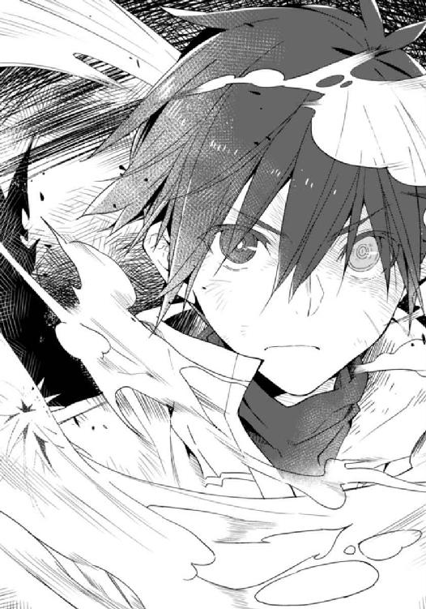
「フン！ 何かと思えば憑依しただけではないか！ それで私に対抗できると思──っ！」
言葉の途中でディアドラは真横に吹っ飛んだ。ソーマが横から殴りつけたのだ。
きりもみしながら吹き飛び、どうにか体勢を立て直したディアドラが驚愕に目を見開く。一撃で顎が粉々に砕けていた。すぐに再生させるが、それで驚きが消えるわけではない。
「何だ、この力は......」
ディアドラは勘違いをしていた。二人の変化は、メルヴィーユがただソーマに憑依したわけではない。メルヴィーユは自らをソーマの中に展開したのだ。霊的なレベルにおいて二人は一つに結びついている。
『聞いてなかったのか？ 〝希望〟の能力は、〝黒い蛇〟を滅ぼすことだ』
答えたのはソーマなのかメルヴィーユなのか。二人の声が重なって発せられる。
『もう貴様に勝ち目はない。儂の──儂らの本当の力、その身でとくと味わうがいい』
降り続く雨がディアドラの髪を濡らし、頰を伝って顎の先から滴り落ちる。ぱたたっ、まっすぐに落ちたはずの水滴がその足下に散り、ディアドラは自分が震えていることに気付いた。
──怖じ気づいている？ この私が？
「そのようなことが！ 〝終の炎帝〟！」
目を背けるように叫び、突き出した右手から熱線を放つ。
ソーマ＝メルヴィーユは避けようともしなかった。
かつてその猛火で楽園の三割を焼き尽くした滅びの熱線は、ソーマを取り巻く燐光に触れると細かく分割され、あらぬ方向へとねじ曲げられて空の彼方に飛び去った。
「なっ」
人間業ではない。悪魔の業ですらない。
「ならばこれで！」
今度は〝黒の蝗王〟。結果にそれほど違いはなかった。蝗の群れは相手に触れる遙か手前で分解され、無に還る。
『無駄だよ。〝黒い蛇〟の力は通じない。〝希望〟はそういう悪魔なんだ』
「そんなことが......」
『そんなことがあるんじゃよ。〝終末の厄災〟で貴様を滅ぼせなかった人間は、いつかこの日がくることを予想していた。そして儂を造り、誰かが箱船に接続したら儂が目覚めるように仕込んでおいた。......そなたの野望、人類抹殺の目論見は、始まる前から終わっていたんじゃ』
その声は、どこか哀れむような響きを持っていた。
実際、メルヴィーユはディアドラに同情めいたものを感じていた。
互いに人に造られた哀しき存在。姉妹のようなものではないか。
ディアドラは人類を滅ぼす存在、絶対上位者として生み出された。他者に恐れられることはあっても、哀れに思われるなどあり得ない。あってはならないことであった。
「〝冥王〟！ 〝死王〟！ 〝閻魔〟！」
死を司る魔王の力を立て続けに引き出す。その全身が闇の色に染まった。虚空から現れた裁きの鎚を両手で握って、ディアドラはソーマに向かって突撃した。
「死ねぇええええええ！」
振り下ろされる絶対死の一撃をソーマは魔剣で受け止める。
「っ！」
素早くもう一撃、二撃。音速を超える鎚の乱舞。衝撃波が乱れ飛び、雨粒が瞬時に消滅する。しかしソーマは全く揺るがない。全てを魔剣で受け止め、受け流す。激しい乱舞の隙間に、ソーマがすっと手を入れた。
「っ！」
傍目には何でもないような一撃だったが、食らったディアドラは体をくの字に曲げて吹き飛び、箱船の屋上に落ちてもんどり打った。その手から離れた鎚が甲高い音を立てて転がる。
「ッ！ がはっ！」
『これで分かったじゃろ？』
「......」
問われるまでもなかった。攻撃は一切通じない。受ける攻撃はすさまじいダメージになる。対〝黒い蛇〟専用悪魔と言うだけのことはある。
「おのれ、おのれ、おのれええええええええ！」
ディアドラは吠えた。
「私は〝悪意〟！ 人類に裁きを下すもの！ それが人間に負けるなどということはあってはならないのだ！」
立ち上がり、両手を広げる。
力を、もっと力を。
「──〝絶対破壊者〟！ 全てを滅ぼす力をここに！」
『うっ！』
暴風が吹き荒れた。水平に飛んできた雨がソーマの頰を切る。いや、これは雹だ。急激な冷気、地獄の底から吹き付けるような冷気が万物を凍らせ、死の暴風を生み出しているのだ。
その中心にいるのはディアドラ──〝黒い蛇〟。彼女はその姿を変えつつあった。
「う、が、が、あ......」
苦しげにうめく。その骨格が音を立てて変形していく。背中にぼこぼこと節が生まれ、尻から太い尻尾が生える。足の脇から新しい足が、腕の脇からも別の腕が、無数に生えてはそれぞれが人の胴体よりも太く大きく膨らんでいく。象牙のようだった肌は見る影もなく、赤と黒、溶岩流のような不吉な鱗に覆われている。その背中に生えるのは、天を覆い隠すほどに巨大な幕翼、それが十二枚。髪が抜け落ち角が生えた。口吻がぐっと伸びて牙が生えた。
変身が終わったとき、そこにいたのは一匹の巨大な赤い竜であった。その大きさたるや、中央管理教会の総本山にも匹敵する。
「グアアアアアアアアアアアアアアアアアアア!!」
竜が吠えた。その声量があまりにも大きすぎて、ソーマは箱船の屋上から落とされそうになった。
辺りを稲妻が乱れ飛び、一瞬も闇が戻ってこない。
『世界の終わりみたいな光景だな......』
けれども世界を終わりにするつもりなどない。
終わらせるのは、この戦いだ。
ソーマ＝メルヴィーユが魔剣を両手で握り、頭上高く掲げた。ソーマの周囲を漂っていた燐光が魔剣に集中し、まばゆい金色の光となる。光は魔剣と一体になり、光輝の剣となった。
『行くぞ！』
「シャアアアアアアア！」
竜が吠え、その口から赤黒い破滅の光を吐き出す。
ソーマは赤い竜めがけて光輝の剣を振り下ろした。
二つの光が正面からぶつかり合う。
拮抗はわずかに一瞬。
すぐに金色の光が破滅の光を打ち払った。まばゆい光輝はそのまま赤い竜へと食らいつき、一度も止まることなく真っ二つに切り裂いていく。
「ギャアアアアアアああアアアアアア！」
〝希望〟が〝悪意〟を打ち破ったのだ。
光輝の剣が雨雲を、夜を、空を切り裂き振り下ろされる。
闇を照らす希望の光は、地上からもはっきりと見えたことだろう。
二つに裂かれた赤竜の、胸から上が箱船の屋上に落ちた。残りの部分は力を失い崩れると、箱船の二段目に逆さまに倒れ込み、三段目の縁ぎりぎりまで滑り落ち、無数の構造物に引っかかり、突き刺さることでようやく止まった。
莫大な質量を持つ〝絶対破壊者〟が倒れた勢いで箱船が大きく揺れる。まるで空に激しい津波が起きて、箱船を攫っていこうかとするようであった。
激しく揺れる箱船の屋上にソーマはがくりと膝を突いた。その背中から烏のような羽が抜け落ち、燐光がふわりと離れると、瞳の色も元に戻った。ソーマから離れた燐光が傍らにまとまり、元のメルヴィーユの姿を取る。
「大丈夫か？」
「ああ......なんとか」
魔剣を杖代わりにしてソーマは顔を上げた。正直死ぬほど辛い。「悪魔のようなもの」ではなく、本物の悪魔をその身に降ろしたのだ。魔剣アゾスの助けを借りていても、その負担は尋常なものではなかった。全身が熱を持ち、関節が酷く軋む。
けれどもその甲斐はあったと言える。
横たわる赤い竜の首がぶすぶすと煙を上げ、その形が崩れ始めている。崩れた部分が雨に打たれるまま流されて、次第に小さくなっていく。ディアドラにはもはや再生を行う力も残っていないのだろう。
〝黒い蛇〟が、滅びる。
〝楽園〟より数千年、時代も世界も超えて続いた戦いが、ついに終わろうとしていた。
「やった......んだよな？」
「うむ。儂らの大勝利じゃ。後は大洪水の魔法陣を止めるだけ。これは儂一人でできる。ソーマはそこで休んでおれ」
「ああ、悪いけどそうさせてもらう」
ソーマはその場にぺたんと尻をついた。
ソーマとメルヴィーユは屋上の中央にいる。メルヴィーユの足下から箱船の端末がせり上がってきた。メルヴィーユが端末を操作すると、箱船の屋上に刻まれていた魔法陣が一瞬青く光り、すぐに暗くなった。
「これでよし」
言って、メルヴィーユは空を見上げた。魔法陣が停止したことで、人為的に引き起こされていた天変地異も停止する。雲が晴れてそこにはきらびやかな星空が広がる──はずだったが、そうはならなかった。
いつまで経っても空には黒雲が渦巻くまま。大雨と暴風、雷も全く衰えることなく、気温はさらに下がっていく。濡れた屋上に霜がつき始めた。天変地異は終わるどころかますます加速していく。
「これはどうしたことじゃ!?」
動揺するメルヴィーユ。自分のミスを疑い端末をせわしなく操作するが、箱船の屋上に刻まれた大洪水の魔法陣は間違いなく停止している。と、
「メル、あそこ！」
ソーマが気付いて空を指さす。荒れ狂う雷雲の中、無数の悪魔が円陣を組んで飛行していた。幾何学的なその陣形は、大洪水の魔法陣の形だった。
魔法陣を書くのに、特殊な紙やインクは必要ない。
悪魔の群れが魔法陣の形を取ったのならば、それは魔法陣として機能する。
停止した箱船の魔法陣の代わりに、悪魔の群れが大洪水を継続しているのだ。
ソーマは痛む体を押して立ち上がった。魔剣を構える。
「降魔展開──〝終の炎帝〟」
紅蓮の炎が魔剣からほとばしり、収束された熱線となって空へ、居並ぶ悪魔の群れを焼き払った。陣形が崩れたことで魔法陣が機能を失う......はずなのだが、事態は何も変わらなかった。
「どうなってるんだ!?」
「あーっはっはっっは！ いいざまですこと！」
突然に哄笑が響く。竜と化したディアドラだ。まだ息があったらしい。首だけとなって、白濁した目でソーマとメルヴィーユをぼんやりと見て、崩れかけた顎を開いて笑っている。
「これはお前の仕業だな！」
「当然。他の誰にできまして？ ......言いましたでしょう？ 私、使命はきちんと遂行するんです。自分がやられた後のことも考えていたんですよ」
「うぬぅ。何という執念、何という悪意......」
メルヴィーユが唸った。
ディアドラはうれしそうに、とてもうれしそうに笑う。
「とってもいい気分だわ。だから教えて上げます。これと同じものが世界の百カ所以上にあって、相互にバックアップをしていますのよ？ 目の前のこれだけ潰しても無駄」
「ひゃっ......!?」
「正確には百八個。今、ひとつ潰されたので残りは百七ですわね。残りはこんな風に目立つところには設置してませんわ。どれもこれも人の目につかないところで、せっせと天変地異を引き起こしています」
「っ！ 悪魔を世界中に放ったのは、ただ人間を殺すためだけじゃなく、このためでもあったのか！」
「正解。がんばって全部探して悪魔を倒して回ったら、大洪水は食い止められますわ。まあその前に世界が水没してしまうでしょうし、そもそも人の身では入り込めない場所にも悪魔たちは隠れてますけれど。フフ。精々がんばるといいわ、無駄なあがきをね！ あーっはっはっはっはっは！ ッ！ アグッ......う、アアアッ！」
ついに限界を超えたのだろう、哄笑を続けるディアドラの額にヒビが入り、自重に耐えきれずに割れて崩れ落ちた。激しい雨と風が、かつて世界の破壊者だった塵芥を浚い、夜空にまき散らしていく。後には緑色に光る指輪だけが残った。
「......大洪水は、世界を七日で水没させる」
メルヴィーユが呟いた。
「たったの一週間しかないのか......」
それではディアドラの言った通り、全ての悪魔を倒すことなど不可能だ。
「......そうだ！ 箱船にみんなを避難させれば、伝説のように！」
ソーマのひらめきに、しかしメルヴィーユは首を横に振った。
「聖都にいる人間の一部はそれで大洪水を逃れられるかも知れん。けれどそこまでじゃ。今の箱船には、かつて移民船だった頃の機能は失われておる。何万もの人間を養うことはできぬ」
「そんな......どうしようもないのか......」
ソーマはその場に膝を突き、拳で箱船を殴り始めた。
「くそっ！ くそっ！ くそっ！ ここまで来て！ こんな、こんな！」
ソーマは奥歯を嚙みしめた。
「何が箱船だ！ 何が永遠の楽園だ！ こんなもの、ただの厄介箱じゃないか！」
悔しかった。こんなもののために兄も、自分たちも、人類全てが翻弄されてきたなんて。
けれどもそれすらも人が生み出したものならば、人は自らを殺す宿命だったとでもいうのだろうか。それでは自分たちは何のために生きてきたのだ。人は何のために生まれたのだ。
ソーマは拳を振り下ろし続ける。手の皮がむけて血がにじんだ。それでも止まらない。ひたすらに、自分を壊そうとするかのように殴り続ける。
「よすのじゃ」
メルヴィーユがソーマの前にしゃがみ込み、血塗れの拳を受け止めた。
「大丈夫じゃ。この世界は滅びぬよ。......人が生み出すのは厄災ばかりではない」
「......でもどうやって」
メルヴィーユは静かにうなずいた。ソーマの目を見て言う。
「箱船を、〝黒い小箱〟を破壊する」
「っ!? メル！ それは......」
メルヴィーユはディアドラがいたところまで歩いて行き、残されていた〝楽園の指輪〟を拾い上げた。
全ての悪魔は〝黒い小箱〟により造られ、制御されしもの。その大本を破壊すれば、全ての悪魔は存在を維持できなくなる。〝悪意〟の残した百個以上の魔法陣を一瞬にして停止させることも可能だ。だが、
「待ってくれ、メル！ そんなことをしたら、そんなことをしたら、お前まで消えてしまうじゃないか！」
それは他ならぬメルヴィーユ本人が、箱船の中枢で言ったことだ。〝黒い小箱〟を破壊すれば、自分を含めた全ての悪魔が地上から消え去ると。
「そうじゃな」
「そうじゃなって、何をそんなあっさり......」
困惑するソーマ。
「安心せい、〝黒い小箱〟の破壊を──儂を殺せとそなたに頼むような真似はせんよ。楽園の指輪と魔剣アゾスという二つの鍵がそろった今、箱船の全てを思いのままにできる。......そうじゃな、宇宙空間で自爆させるのがよいか」
メルヴィーユは飄々とした様子で指輪を嵌め、サイズが合わないことに顔をしかめながらも再び端末の前に立つ。
「......儂とてできることなら自分を殺すような真似はしたくない」
「じゃあなんでだよ」
「それが儂の使命じゃからじゃよ」
メルヴィーユが細い指を端末に滑らせた。周囲に入力装置でもある立体映像が出現する。
「儂もな、あの〝黒い蛇〟と一緒じゃ。人に造られ人に従い目的を達成する一個の生体機械。あれが自らを滅ぼしてでも人類を抹殺しようとしたように、儂は人類を救い、人間に明日を届けなければならんのじゃ。それは儂の存在よりも優先される」
立体映像を操作しながらメルヴィーユは話し続ける。
邪魔をしろ、このままではメルヴィーユが消えてしまうぞ。それでもいいのか？ とソーマの中の衝動的な部分が叫んでいる。ソーマは半歩踏み出した。と、
「本来ならな、儂はこんな風に人と付き合うことはなかったはずなんじゃ」
箱船の封印を解き、大いなる厄災〝黒い蛇〟を解き放ってしまった旧世紀の人類が、贖罪を込めて後世のために残した希望──それが〝希望の悪魔〟。
「〝希望の悪魔〟は目的遂行のために冷徹に、最も優れた人間を選び出し主として、〝黒い蛇〟に立ち向かう。他の何をも差し置いて、いかなる犠牲を出してでも、〝黒い蛇〟の抹殺を最優先として行動する──そういう風にデザインされていたはずなんじゃが......どういうわけか肝心の使命をすっぽり忘れて、ご覧の通りのエロちび悪魔じゃ」
メルヴィーユは一度操作の手を止めて、
「......運命、だったんかのう」
遠い目をして言った。
「運命......」
「老朽化した箱船が何らかのエラーを吐いて、その影響が儂にも及んだのじゃろう。おかげで降魔もきちんと扱えずえらい苦労をしたが、それで良かったと儂は思ってる。そのおかげでそなたと出会い、ここまで共に旅をしてこられたんじゃからな」
微笑んで、
「短い間であったが、そなたと一緒に歩めて儂は幸せじゃった。その幸せを台無しにするようなことはするでない」
「......」
伸ばしかけていた手を、ソーマは引っ込める。そうして初めて、自分が何をしようとしていたのかを理解する。
「俺は......」
言葉が見つからなかった。
悪魔メルヴィーユ。
初めはその正体も、人格すらもどうでも良かった。欲していたのはその力だけだった。
いつからだろう？ メルヴィーユを相棒と見なすようになったのは。
それ以上の存在と思うようになったのは。
離れたくないと思ったのは。
思い出せない。
明確なきっかけなんてなかった。
ここまで共に歩んできた。その間に、分かちがたく結びついていたのだ。
「どうしようもないのか......」
「泣くな。男の子じゃろ？」
「でも......でも......こんなのって......」
〝黒い蛇〟は倒れ、ファラディースを覆う厄災は打ち払われた。これから世界は平和になるだろう。社会は大いに発展し、豊かな暮らしが訪れるだろう。その一番の立役者が、それを見ないで消えなくてはいけない。それではあまりにも報われないではないか。あまりにも気の毒ではないか。
「勘違いするでない。儂は嫌々やっておるわけではないぞ。......じゃが、そうじゃな、それでも儂を哀れと思うなら、一つ儂の頼みを聞いてくれるか」
「頼み？ 十個でも二十個でも聞いてやるよ！」
「一つでよい」とメルヴィーユは笑って、それから真顔になって「もし、もしもじゃ、儂が人間に生まれ変わって、再びそなたと巡り会えたなら、そのときは......」
ソーマは最後まで言わせずに強くうなずいた。
「ああ、そのときは契約でも結婚でも何でもしてやる。俺はお前のものになる。お前も俺のものになる。死ぬまでずっと一緒だ」
「......っ！」
ここまでストレートに言われるとは思っていなかったのだろう。メルヴィーユは目を丸くしてしばらく硬直し、それから、顔を赤くして、
「............ありがとう」
震える声で言った。
それからメルヴィーユは顔を上げ、ふわりと浮き上がった。そのまま近くまで飛んできてソーマの頭を押さえ、額に口づけをする。
「っ！」
そこから熱い何かが流れ込んできて、ソーマはたたらを踏んだ。目眩のような感覚は一瞬で過ぎ去り、ソーマは自分が何をされたのか分かった。ずっとメルヴィーユの中にあったソーマの魂が今、ソーマの肉体へと戻されたのだ。
「以前交わした、復讐のために力を貸す契約は遂行不能につき取り消しじゃな」
「メル......」
メルヴィーユがソーマから離れた。
「これから儂は箱船を自沈させる。そなたはその前に脱出せよ」
再び端末に触れ、後方を見るように示す。振り返ると、箱船の各所に緑色のランプが川のように点っていた。
「あの光をたどっていけば、脱出ポッドがある場所にたどり着く。気をつけるのじゃぞ。契約を解除した以上、そなたはもう降魔を使えんただの人間じゃ」
「メル......」
「早う行け。そなたが脱出してくれぬと作業が進まぬ」
これで最後。もう二度と会えなくなる。何か気の利いた言葉の一つもかけてやりたいのに、何も思い浮かばない。──いや、言葉でなくてもいいのだ。
「ソーマ？ 何をしておる。早う──っ！」
ソーマは無言でメルヴィーユに近付くと、その細い体を力一杯抱きしめた。
初めこそ驚いていたメルヴィーユも、すぐにソーマの体に両腕を回し、ソーマの胸に頭を預けてほうっとため息をつく。
「......初めてじゃな。そなたの方から触れてくれたのは」
「そうだっけ？」
目が合って、その気になったのはソーマが先。実際に動いたのはメルヴィーユが先だった。
「ん......」
辺りには雷鳴が轟き、激しい風が二人に吹き付ける。けれどもソーマは小揺るぎもしなかった。ただ一心にメルヴィーユを抱きしめている。時間が止まってしまったかのように。
けれど、いつまでもそうしているわけにいかないことは二人とも分かっていた。今も大洪水は進行し、地上では多くの人々が生死の瀬戸際で戦っている。
「......」
二人は唇を離し、体を離した。
「息災でな」
「ああ」
──そっちも、と言えないのが哀しかった。ソーマは地上に戻れるが、メルヴィーユは箱船と運命を共にする。
これが今生の別れ。最後にメルヴィーユの姿をその目にしっかりと焼き付けてから、ソーマは勢いよく走り出した。一度も振り返らない。振り返ったら自分が何をしでかすか分からなかったから。気の迷いを起こさないように、メルヴィーユが点した緑のランプ──脱出経路をたどることだけに集中して全力で走った。
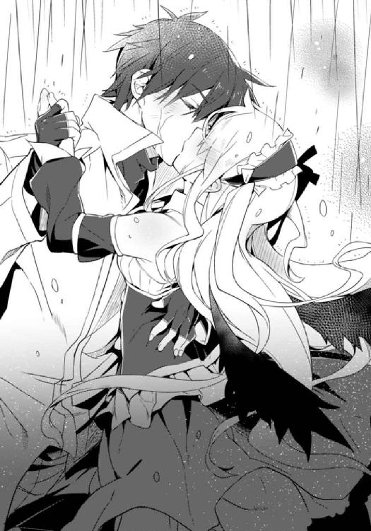
屋上から二層目に降りて、さらに最下層へ。最初に侵入したときとは別の出入り口から箱船内部に再び入り、硬質の通路をひたすら走る。
走りながら、ソーマはかすかな振動を感じた。箱船が動き出したのだ。メルヴィーユが自沈の準備を進めているのだろう。
やがてがらんと広い空間が現れた。壁際に、人一人通れるくらいの穴が、等間隔に無数に並んでいる。最後のランプがソーマを呼ぶかのように明滅していた。
「あれか」
穴の中は滑り台のようなスロープになっていた。入った人間をどこかに運び出す仕掛けらしい。飛び込む。緩いスロープに運ばれた先は三メートル四方程度の狭い部屋。左右にベンチが並んでいて、乗合馬車のような趣だ。定員は二十人程か。
「っと」
どこに座るか決める前に部屋が動き出し、ソーマはその場に尻餅をついてしまった。部屋の後方に接続されていたスロープが分離する。その部分は気密扉になっていたらしく、すぐに二重の扉でぴったりとふさがれた。部屋は加速しながら前に進む。
ソーマは背もたれに摑まり、窓の外を見た。外は一定間隔でオレンジのランプが点っている。左右とも同じだ。どうやら狭いトンネルの中を通っているらしい。何か金属がこすれるような音もする。その音が次第に大きくなり、不意に消えた。同時に窓から見える景色が一変する。
「これは......」
窓に顔を近付けて、外を見る。
闇夜に雷鳴が轟き、破壊され、水没しかけた街並みと、漂ういくつかの船が見えた。それらがすごい勢いで遠ざかっていく。ソーマは脱出ポッドで水平に東へと射出され、海に向かって落下しつつあった。この高度と暗さでは地上の人間の姿までは見えない。と、
「うっ！」
不意に頭上からまばゆい光が降り注いだ。窓に張り付き、目を細めて見上げる。
初めは何がなんだか分からなかったが、少しして脱出ポッドが聖都から離れてくれると、見える範囲が広がり様子が分かるようになった。
見上げる箱船の底面が小さくなっていく。遠ざかっているのだ、箱船が地上から。
「......」
うっすらと発光する箱船が上昇し、雲を貫く。夜空にぽっかり穴を空け、離れるほどにその速度は増していく。雲を突き抜け夜空を突き抜けさらに上へ、成層圏すら突破してその上の──宇宙へ。
遙か彼方に飛び去るかに見えた箱船が、不意に動きを止めたように見えた。その直後、虚空に小さな光の玉が生じる。箱船が持てる全ての動力を暴走させて爆発、自沈したのだ。ばらまかれた破片のいくつかが重力に摑まり、流星雨となってファラディースに降り注ぐ。
地上に目を向けると、残っていた悪魔が一斉に動きを止めるのが見えた。箱船の中枢〝黒い小箱〟が機能を停止した結果だ。
動きを止めた悪魔がその場に崩れ落ちる。その姿を維持できなくなる。
世界中の悪魔が同じように崩壊を始めているのだろう。
それは同時に、今メルヴィーユの身に起こっていることでもあった。
「メル......」
別れは済ませたつもりだった。
けれど、
「メルヴィーユ──────────ッ!!」
脱出ポッドの小さな窓に額を押しつけて、ソーマは喉の奥から叫んだ。
それは、魂を共有する半身の名前だった。
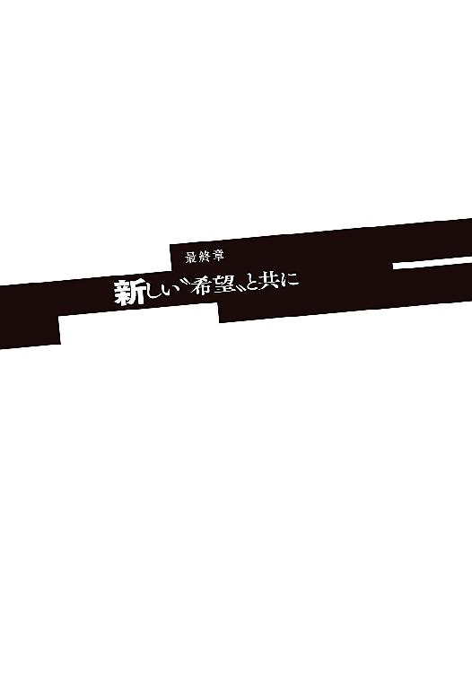
ソーマを乗せた脱出ポッドは聖都の東の海に落下した。一旦海中に没したポッドは、すぐに所定の動作を開始する。圧縮空気を使ってフロートを展開。浮上して姿勢の安定が取れると、すぐに遭難中を示す非常灯を点灯。同時に広域無線によるＳＯＳも発信されたが、悪魔との戦いで科学技術の衰退したファラディースには、この電波を捉える手段が存在しなかった。
届かない声を張り上げながら、ポッドは波間を幾日も漂う。
「......ん」
何かが聞こえた気がして、目を開ける。
小さな窓から強い光が差し込んでいた。朝だ。いつの間にか眠ってしまっていたらしい。起き上がろうとすると全身が強烈にだるい。
脱出ポッドには食料が搭載されていなかった。箱船が〝楽園〟を旅立ったときには、全ての脱出ポッドに規定の非常食料が用意されていたのだろう。けれどその長旅のどこかで、乗員たちは脱出ポッドの非常食に手をつけてしまったのだ。仮に食料が残っていたとしても、数千年前のものが食べられる状態だったかは疑問ではある。
おかげでソーマはここ数日、何も口にしていなかった。手足に力が入らない。
また何か聞こえた。汽笛？ 船。
思考もうまくまとまらない。頭がぼんやりする。あれから何日が経ったのだろう。
不意に、ごん、と何かがぶつかってきた。続いて後部のエアロックが外から開かれ、無数の足音が脱出ポッドの内部に入ってくる。
「本当にいるの？ 気配も何も」ぶつぶつと呟く声が、「......ソーマ！」
悲鳴のような声を上げて駆け寄ってきたのはファムだった。衰弱したソーマの元に跪くと、その頭を支えて唇に水筒を押し当てる。
「......」
流し込まれた水をソーマは自動的に飲み込んだ。数日ぶりの真水は気が遠くなるほど甘く感じた。水筒一本を空にすると、今度は温かなスープ。舌がちぎれそうな程うまかった。栄養を吸収し始めた体がたちまち温かくなっていく。スープのカップを空にして、ようやくソーマは一息ついた。まさしく生き返った気分だった。
「大丈夫？ あたしが誰だか分かるよね？」
「......ああ。無事でよかったよ、ファム」
「お互いにね。ロウとアルディエルも無事。ぶっちゃけ相当やばかったんだけど、まあ何とかなったわ。日頃の行いかしらね」笑って、「それで聖都の水が引いたから、戦艦を出してもらってあんたを探しに来たってわけ。遅くなってごめん」
「来てくれて助かった。あのままじゃ誰にも知られずに乾涸らびて死んでた」
「世界を救った英雄様の死に方じゃないわね。......動ける？」
ファムには数人の騎士たちが同行していた。ソーマが動けなかったときには担架で運び出すつもりだったのだろう。
「立って歩くくらいなら、大丈夫だと思う」
「そう？ 無理しないでね」微笑んでから外に向かって、「要救助者確保！」
ソーマはファムに先導され、騎士たちの手を借りながらも、自分の足で脱出ポッドの外に出た。
潮風が汚れた髪をなぶる。
見回すと、辺りは遮るものない一面の海原だった。
降り注ぐ日の光が波に反射し、海面は雪原のように光っている。
脱出ポッドのすぐ隣に短艇が浮かんでいた。
ソーマとファムが乗り移ると、短艇はすぐにアスカロンに向かって移動を始めた。舷側に到着して、収容作業が始まる。
ソーマたちを乗せたままの短艇が昇降機によって甲板へと運び上げられる。
ふと見上げると、空には無数の光が帯のように浮かんでいた。
「あれね、粉々になった箱船の破片なんだって」
「......」
ソーマは無言で光の帯を見つめた。あの中にいたであろう少女を思う。
「ソーマ？」
「......何でもない」
目尻に浮かんだ涙を見られないように、ソーマはファムに背を向けた。
洪水は収束し、世界は救われた。
その世界に彼女がいないことは哀しい。
それでも、たとえどんなに辛くても、生きていかなければいけないのだろうなとソーマは思う。
彼女が守ったこの世界を、可能な限り守り続けること。それがきっと、自分の使命なのだ。
短艇が甲板の高さまで持ち上げられ、昇降機が停止した。短艇がかくんと一度大きく揺れる。その揺れが収まるのを待ってから、ソーマは立ち上がってアスカロンに乗り移ろうとする。
だが衰弱して体力を失っていたソーマは、船の揺れに対応できずにバランスを崩してしまった。仰向けに倒れ、頭から落下するかと思われた瞬間、甲板から細い手が伸びてきてソーマの手をしっかりと摑んだ。
「っ！」
「大丈夫かや？」
「あ、ああ。助かった、ありが──ってえええええええええええええ!?」
お礼の途中で声が裏返る。
甲板から手を伸ばしてソーマを捕まえたのは。その細い手の持ち主は──
「お前！」
「『お前』とは何じゃ？ まさか儂の名前を忘れたのか？」
その小生意気な面。偉そうな物言い。忘れるわけがあるものか。
「メルヴィーユ！」
「いかにも。そなたの妻、可愛い可愛いメルヴィーユじゃ。......ふんっ！」
メルヴィーユはその細腕に力を込め、ソーマを甲板へと引き上げる。ソーマはほとんど茫然自失。甲板にへたり込んで、水揚げされたマグロみたいに口をぱくぱくさせている。
「なんで......だってお前......」
メルヴィーユは死んだはずだ。この世界を救うために。箱船と運命を共にして。それがどうしてここに。そう言えば何となく雰囲気が違う気がする。見た目も服装も前のままだけれど、何か違和感があった。
「......幽霊？」
「生きておるわ！ ほれ！」
そう言いながらメルヴィーユががばっと抱きついてきた。ソーマの頭を胸に抱く。ドレスに覆われた薄い胸から、確かな鼓動と体温が伝わってくる。それは紛れもない、命の感触だった。
「メル......本物なんだな？ メル！ メル！」
ソーマは感極まってメルヴィーユを抱きしめた。永遠に失われたはずの半身がそこにいる。これほどうれしいことがあるだろうか。「何故？」も「どうして？」も吹き飛んで、ソーマはただメルヴィーユの存在を感じ取ることだけに集中する。
ソーマの両手がメルヴィーユの髪を梳き、首筋を撫でて背中へと下りていく。腰から腿へと下りて行った手が、ふと忘れ物をしたかのように背中へと戻る。そこにあるはずの小さな黒い翼がなくなっていた。
一度は忘れた疑問が戻ってきて、ソーマは顔を上げる。
「今の儂は人間じゃ。生まれ変わったんじゃよ」
「......は？」
理解が追いつかない。「生まれ変わる」とはほんの数日でできることだっただろうか。生まれ変わったら別人になるのでは。いやそもそも生まれ変わりなんてものは実在しない......わけでもないことをソーマは思い出した。転生の秘法。かつて人類にはその技術があった。その技術を用いて、人を天使に生まれ変わらせ、悪魔と戦ったのだ。
「うむ。〝黒い小箱〟を破壊すれば全ての悪魔は存在できなくなる。では『その前に悪魔ではなくなって』いたら？ 〝黒い小箱〟を使えば人間の体だけは造れることは、〝黒い蛇〟の奴が実演してくれたし。箱船の自爆シークエンス自体は自動で処理できるから、儂が最後までついている必要もない。一足先に地上に転生した儂は、教会の天辺でのんびり花火見物というわけよ。箱船の最後はなかなかに壮観であったな」
「............」
ようやく理解が追いついてきた。
あのとき──ソーマが屋上を離れてからのメルヴィーユの行動はこうだ。
まずは箱船に大気圏から脱出して自爆するようなプログラムを入力する。そのプログラムが実行される前に、〝黒い小箱〟の力で人間の体を一つ造り出す。場所はどこでもいい。メルヴィーユが教会を選んだのは、ある程度の高所ではないと洪水に吞み込まれて、転生した途端また死亡する羽目になってしまうからだ。用意ができたら〝転生の秘法〟──トーマがアルディエルに施した不完全な術ではなく、賢者の石を使って〝箱船〟から引き出した完全版の秘法──を使って悪魔の体を捨て、人間の体に移る。箱船の方は自動処理で宇宙に飛び出し自爆。
つまり、ソーマが脱出ポッドから空を見上げて叫んでいたとき、メルヴィーユは既に地上で第二の人生を始めていたのである。
「後は夜が明けたら板っ切れと合流して、陰険眼鏡に仲介させて騎士団に話をつけ、こうしてここまで迎えに来たというわけじゃ」
「ちょっと待てよ？ ってことは、お前は最初っから、自分が消えなくても済むって......」
「愚問じゃ。分かっていたに決まってるじゃろうが」
そう言ってメルヴィーユはくっくと──悪魔的に──笑う。
「転生して助かる方法を思いついたときに、ふと思ったんじゃよ『儂が消えねばならんとなったら、朴念仁のソーマでも儂の思いを受け入れてくれるに違いない』と。それで」
「つまり、一芝居打ったと」
「うむ！ ああでもせんとソーマは何も言ってくれぬと思ったのでな。......しかしまさかプロポーズまでしてくれるとはうれしい誤算。ああ、思い出すだけでも濡れてくる」
メルヴィーユは頰を染めて目を潤ませる。
一方ソーマは全然別の気持ちで顔を赤くし、涙目になっていた。
「明るいうちから卑猥な発言をするな！ というか俺の涙を返せ！」
「何じゃ、怒っておるのか？」
「当たり前だ！」
こっちがどんな気持ちだったと思っているのだ。人のことを弄びやがって。
「くそっ、こんなことだと分かっていたら......」
「分かっていたらプロポーズなどしなかった？」
「..................」
ソーマは答えられない。答えられないことが答えであった。
「ほれほれ、早う答えんか。答えなければ浮気してしまうぞ？」
「......できもしないくせに」
それを聞いてメルヴィーユは目を丸くし、それから大きな声で笑った。
「そうじゃな。儂はソーマにぞっこんじゃからして」
メルヴィーユがソーマの首に腕をからめた。
「お、おい、こんなところで......」
払いのけようとするけれど、漂流で衰弱したソーマにはその力がない。
「......よせって、みんなが見てる」
「見せつけてやれ。......そなたに会えない間、儂がどんな気持ちでいたと思ってるんじゃ」
メルヴィーユが唇を寄せる。ソーマが観念して目を閉じる。
「死ぬまでずっと一緒じゃぞ」
「......ああ」
甲板に盛大な歓声が上がった。
冬晴れの空に短い汽笛が鳴り響く。車庫の暗がりから十両編成の列車が姿を現す。
聖都ニューヤード北西部。ニューヤード西駅。七番ホーム。
本日が運行再開となる大陸横断鉄道の一号列車は、磨き抜かれた黒鉄の車体を牽引車に引かれてしずしずと進め、ホームの定位置にぴたりと停車した。ホームに集まっていた人々の間から、自然と拍手が巻き起こる。
そのホームの隅に、ソーマとメルヴィーユ、それにロウとアルディエルがいた。
眩しさのせいか人の多さのせいか、ロウはいつも以上の不機嫌顔。アルディエルが隣で微笑を浮かべているのが対照的だ。
ソーマは外灯の柱に寄り掛かって、ホームの群衆を眺めていた。その足下には大小のトランク。メルヴィーユは大きい方のトランクを椅子代わりにして、先ほど駅構内で買ったクレープを齧っている。と、
「ソーマ、おかわりじゃ」
「おかわりならさっきしただろ」
「もう一回じゃ。あの様子では出発まではまだまだかかりそうじゃし、乗り遅れる心配はなかろう」
「そうだけど、もう改札通ったんだから無理」
「むう......」
メルヴィーユが口をとがらせる。と、そこに、
「ソーマ！ メルヴィーユ！」
改札の方から呼ぶ声があった。振り返るとファムが改札の外側にいて、ソーマたちを見つけるとぶんぶん手を振る。
「よかった！ 間に合った！」
ファムはそう言いながら駅員に入場券を渡して改札を通り抜け、人でごった返すホームを泳ぐようにしてソーマたちのところへとやってきた。
「遅かったですね」アルディエルが言うと、
「うん。ウルスがちょっともめ事起こして......」
「ウルスさんが？」
「いつものことよ。役人が『前例がない』って言うのを、『今やれすぐやれそこに困ってる人がいるだろうが』で喧嘩になって。向こうの頭が固すぎるんだと言いたいところだけど、こっちも横紙破りまくってるしねえ。それで売り言葉に買い言葉」
「あの人、もっと冷静なタイプかと思ってたけどそうでもないのな」
ソーマが言うとファムは苦笑した。
「そうなのよね。ちょっと気持ちだけが先走りすぎな感じが。まあ色々背負わされちゃったからしょうがないのかな、とは思うけれど。その辺あたしたちも支えていかなきゃな感じ」
ふう、と息をついて、
「あともう一つ、これ。餞別」
「むむ？ 何やら甘い匂いがするぞ!?」
ファムが鞄を開けて中から紙袋を出したその瞬間、メルヴィーユが素早く反応して、ファムの手から紙袋をひったくっていった。
「おい、メル」
ソーマが叱るがメルヴィーユは聞いちゃいない。トランクの上に座り直して紙袋をがさごそ、中に有名店のドーナツがみっしり詰め込んであるのを見て、
「おお！ 板っ切れのくせに気が利くではないか！ 褒めて使わす」
「ありがとうございますくらい言えないのかしらねこのチビは......。これ手に入れるの苦労したのよ。まだ物資に余裕があるわけでもないんだから」
「悪い、ファム。礼は俺から言わせてもらう」
「あんたがそうやって甘やかすから......」と目を吊り上げたファムであったが、あきらめたようにため息をついて、「......本当に行っちゃうのね」
唐突な話題の変更。浮ついていた雰囲気が少しだけ静まる。
「別に今生の別れってわけじゃないさ」
ソーマはドーナツをこぼすメルヴィーユの膝にハンカチを敷いてやってから、ふと空を見上げた。冬の空に、あの日崩壊した箱船の残骸が、白いリングとなって輝いている。
世界の命運を賭けた戦いから、今日で一ヶ月。
もう、という気もするし、まだ、という気もする。
〝黒い小箱〟が破壊されて全ての悪魔が消え去り、悪魔たちによって描かれていた大洪水の魔法陣も消え去った。原因が取り除かれたことで天変地異も速やかに治まり、世界の滅亡は回避されたわけだが、その前に悪魔の大量発生があったこともあり、最終的な被害は甚大なものになった。建物はことごとくが破壊され、流され、あるいは浸水した。発生した瓦礫が道路をふさぎ、川をせき止め、鉄道を通行不能にした。
そうした物的被害も深刻ではあったが、さらに問題だったのが人的被害だった。
あの日一日だけ、聖都だけでも数万人の死者が出た。老いも若きも男も女も分け隔てなく。人がいなくなれば組織は立ちゆかなくなる。全ての枢機卿が死亡した中央管理教会、幹部にも多数の死傷者を出した騎士団、警察や消防、鉄道公社に各種の商工業組合......ありとあらゆる組織が組織としての役割を果たせなくなり、街は街としての機能を失った。
その混乱がどうにかこうにか収拾したのは、ファムたち〝箱船の守り人〟の働きによる。
事態のごく初期に逮捕拘束されていた〝箱船の守り人〟は、皮肉にもそのおかげで、最も多くの死者を出した悪魔の大発生を、少ない被害でやり過ごす形になった。
彼らの聖都における隠れ蓑、活動母体であるルナール商会は、商会という性質上聖都の様々な分野に関わりを持っている。洪水が引いた後、彼らはその人脈、横のつながりを介して状況を把握し、まだ混乱の中にいる各組織をつなぎ合わせて暫定政府を樹立するに至った。ルナールがその代表となり、ファムたち〝箱船の守り人〟のメンバーはそのまま暫定政府の職員となって、街の──そして世界の復興のために無給かつ無休で東奔西走している。
この暫定政府には騎士団がそのまま組み込まれているのだが、ロウはそこには参加していない。あの戦いで神前戦車隊の隊長──ロウを戦車隊にスカウトした人物でもある──を始め多くの騎士が戦死したこともあって、騎士団は大きな組織改編を行った。このとき、ロウを大隊長の一人にと推す声が多数あったのだが、ロウはこれを固辞しただけでなく、騎士そのものを辞めてしまったのだ。今は一人の牧師、そして孤児院の院長である。目つきはおっかないけど優しい院長先生として子供たちに慕われている。
ガラガラと音がして、トランクをいくつも積んだ台車がソーマたちの方に滑ってきた。ここのホームは少し傾斜があるので、うっかりしているとこういうことが起きる。ソーマが手を伸ばして台車の取っ手を摑んで止める。
「すみません！ 助かりました！」
ようやく追いついて来た駅員がソーマに礼を言い、取っ手をしっかりと摑む。
駅員は何度も振り返ってはぺこぺこ頭を下げながら列車の方へと戻っていった。
ドーナツを食べていたメルヴィーユが皮肉に唇を歪めて、かすかな不満の籠もった声で、
「今の駅員、ソーマが世界を救った英雄だなどとは、思いもよらんのじゃろうな......」
そう、ソーマが〝黒い蛇〟を倒したことは公表されていない。
教皇ディアドラの正体は遙か神話の時代に人類抹殺のために生み出された生体兵器であり、人類はそうとは知らずに自分たちの仇敵を奉っていた。ディアドラが訴えた「世界の危機」はこともあろうにディアドラ本人のことであり、箱船による救済計画は実は人類抹殺計画の一部であった──こんなことが公表できるはずもない。
もしも公表していたら、教会も騎士団も市民から袋叩きにされていただろう。「自分たちも騙されていたのだ、被害者だ」などという言い訳は通用しない。教会、騎士団は悪魔と戦い人間社会を守るための組織なのだ。それが悪魔に騙されること自体──〝黒い蛇〟は純粋な悪魔とは言えないのかも知れないが──重大な責任問題なのである。
無論、生き残った高位聖職者や騎士たちは責任逃れをするつもりはなかった。けれども世界はまだ大混乱の中にある。そこにさらなる混乱の種を播いても誰も得をしないし、現実問題として、世界の混乱を治められる組織は教会と騎士団をおいて他にない。
そうした状況を鑑みて、暫定政府──の中でもごく一部の真実を知る者たちは──真実とは全く違う、でっち上げの物語を発表することにした。
その公式発表では、悪魔を大量発生させたのも大洪水を起こそうとしたのもディアドラではなく、大魔王〝絶対破壊者〟の仕業であるとされた。〝天印〟の力によって大魔王の出現を予知していたディアドラは伝説の箱船を復活させて、人類を生き延びさせようとしていたのだが、予想よりも早く出現した大魔王が箱船を乗っ取ってしまった。ディアドラは箱船に乗り込んで大魔王と戦い、自らの命を犠牲にしてこれを打ち破った。
本来ならば諸悪の根源として糾弾されるはずのディアドラを、救世の聖女として讃えているのだ。
世界の混乱を防止するためには、そうするのが一番いいのだということはメルヴィーユにも分かっている。分かってはいるのだが、
「自分の活躍がなかったことにされるのは面白くないか」
ロウに問われてメルヴィーユはさらにふてくされた。
「儂のことはどうでもいいんじゃ。儂はそのために造られた存在。成すべきことを成したまでよ。じゃがソーマは違う。その辺の、普通の、ただの人間が、本来なら背負わなくてもよいものを背負い込まされて、それをきちんとやり遂げた。なかなかできることではないぞ。なのに報酬も称賛も何もなし。それどころかソーマのしたことを誰も知らぬ。何じゃそれは。報われぬにも程があるわ」
吐き捨てるように言って、メルヴィーユはドーナツに牙を立てる。
ぷりぷり怒りながらドーナツをやっつけるメルヴィーユを見て、ソーマはふっと微笑んだ。
「俺は別に英雄になりたかったわけじゃないよ」
「じゃが、」
「ここにいるみんなは俺が......俺たちがしたことをちゃんと知ってるし、それに......」
「それに？」
問うメルヴィーユ。ソーマはメルヴィーユを見つめてちょっと照れたように、
「......称賛や報酬なんかより、もっといいものを俺は手に入れた」
「ソーマ......」
その意味するところを察したのだろう、メルヴィーユが上目遣いでソーマを見る。ソーマがメルヴィーユの顎を指で押さえた。メルヴィーユが目を閉じる。が、
ソーマはメルヴィーユの膝に敷いていたハンカチを手に取って食べかすを払い落とすと、ドーナツの油と砂糖でべとべとになったメルヴィーユの頰を拭いてやった。
「よし、綺麗になったぞ」
「何じゃそれは！」目を開けたメルヴィーユが両手を振り回し、唾を飛ばして怒鳴る。「今のはちゅーの流れじゃったろ！ 子供扱いしおってからに！」
「子供みたいな食べ方してるからだ」暴れるメルヴィーユの頭をぐっと押さえて顔を近付け小声で「二人っきりになってからな。ちゅー以外も」
「っ！ う、......む、それなら......よい......」
耳元で囁かれた途端しおらしくなってうつむく。
攻められると意外に弱いメルヴィーユであった。
「......何か胸焼けしてきた。ドーナツなんか買ってくるんじゃなかったわ」とファム。
ピイッと短い笛が鳴った。牽引車が列車から外されて退避車線へと移動していく。
「えー、大陸横断鉄道ぉ、下りアンタルヤ行きはぁ、まもなくぅ、発車時刻となりまぁす！ お客様はぁ、お早めにぃ、ご乗車くださぁい！」
車掌が独特の節をつけて告げる。別れを惜しんでいた人たちが足早に乗降口へと集まっていく。
「もう時間か......」
ソーマはこれから大陸横断鉄道に乗り、生まれ故郷であるアラドに帰る。アラドは終点であるアンタルヤの手前。文字通りに大陸を横断する長旅だ。
帰ったところで家もなければ家族もない。このまま聖都に留まることも一度は考えたのだけれど。ソーマは小さなトランクに目をやった。その中には聖骸布を始めとしたトーマの遺品と、教会のトーマの部屋から見つかった、古い女物の髪留め──レンリのものだと一目でソーマには分かった──が納められている。せめて遺品だけでも里帰りさせてやりたいと、ソーマは思ったのだ。
メルヴィーユが椅子代わりにしていた大きなトランクからぴょんと飛び降りた。ソーマが大きなトランクを持ち、メルヴィーユが小さなトランクを持とうとするが、
「いいよ。それは俺が持つ」
二つのトランクを両手に提げて、ソーマは一同を見回した。
「......ソーマ、メルヴィーユ、お前たちには本当に感謝している」
とロウが言うと、メルヴィーユがうんうんとうなずいて、
「うむ。一生恩に着るがよい」
「ああ、もちろんだ」
「素直にうなずかれるとそれはそれで気持ち悪いのう......」
ロウの返事に調子を狂わされるメルヴィーユ。アルディエルがクスッと笑った。
「二人とも元気でね」
「はい」「うむ」
車掌が再び笛を吹いた。もうホームで立ち話をしていられる時間ではない。ソーマとメルヴィーユは乗降口へと急ぐ。切符を見せて車内へ。人がひしめく狭い通路をどうにかこうにか通り抜け、ソーマたちは一等客車の個室へと到着する。窓を開けて顔を出すと、それに気付いたファムが駆け寄ってきた。
「ファム？」
「あー、ごめん。何か気の利いたことが言えればいいんだろうけど。別れのあいさつ的なやつ」
「別にいらんじゃろ」
「だな。これっきり会えなくなるってわけでもないんだし」
メルヴィーユとソーマがあっさりと言うとファムは目を丸くしたが、すぐにうなずいた。
「そうね。会おうと思えばいつでも会えるのよね。......それじゃ、また」
「ああ、いずれまた」
大陸横断鉄道の発車を告げる構内放送が流れた。駅関係者がひときわ大きな拍手をする。
車掌が何かを大声で告げ、列車がゆっくりと動き出す。
ファムが窓から離れた。列車が動くにつれてその姿が遠くなる......と、すぐに戻ってきた。ホームを列車と同じ方向に走っているのだ。
「ファム!?」
「また会えるって言ってもさ、それでも......それでもやっぱり寂しいよ！」
叫ぶファムの目には涙が浮かんでいた。
「俺たちもだよ！」
答えるソーマの目にも、隣のメルヴィーユの目にも涙が浮かんでいた。
初めは泥棒とその被害者だった。それが気付けば旅の連れ。
出会ってからたったの半年。正直長い付き合いではないけれど。
幾度も死線をくぐり抜け、生死を共にした仲間との別れが、寂しくないわけがない。
気持ちを表に出せば止められなくなると分かっていたから、旅の始まりを湿っぽくしたくなかったから、ファムもソーマもメルヴィーユも、あえて気楽そうに振る舞っていたのだ。
「元気でね！ 絶対に元気でいてね！」
「ああ！ 着いたら手紙を書くよ！」
ソーマがそう言うと、隣でメルヴィーユが、
「結婚式の招待状じゃ！」
ファムは一瞬虚を突かれて真顔になり、それから大きな声で笑った。
「期待して待ってる！」
大勢の人に見送られ、列道は加速しながらホームを離れる。
市街を抜け、復旧されたばかりの橋を越え、黒鉄の車体は荒野へと突き進んでいく。
その一等客車の一室で、ソーマとメルヴィーユは頰の涙をぬぐい、晴れやかな気持ちで見つめ合った。ソーマはもはや悪魔憑きではなく、メルヴィーユも悪魔ではない。そこにいるのはただの少年とただの少女だ。
「さて」とメルヴィーユが言った。「これで二人っきりじゃな」
「早速かよ......」
苦笑しつつもソーマは拒まない。メルヴィーユの細い腰に手を回して抱き寄せる。
「......アラドに帰って、用事を済ませたら。その後はどうするんじゃ？ 向こうで落ち着くのか？」
「決めてない。......また旅をするのもいいな」
「それも良いな。じゃがどこへ？」
問われてソーマは考える。東の果てまでは行ったから、今度は南か？ それとも北か？
「メルはどこに行きたい？」
「儂か？ そうじゃなあ......」
行き先なんてどこだっていい。
互いを強く思い合う二人の行く先は、希望に満ちた明日に決まっている。
あとがき
大っっっ変長らくお待たせしましたごめんなさい。二巻が出たのが二〇一四年の五月なのでほぼ一年ぶりですか。もう内容忘れちゃった？ 大丈夫！ 長いあらすじつけたから。下手したら一、二巻読んでなくても理解できるくらいに長いやつ。
さて、どうしてこんなに開いてしまったかというと、別の本を書いていたのです。
タイトルは『化け猫島幽霊分校の卒業式』。
この場を借りて少し紹介させていただきますと、離島の被災地を舞台に、幽霊となって地上に取り残された四人の子供たちと、都会からやってきた若い教師の交流、愛と絆を描いた物語です。メディアワークス文庫から発売中。電子書籍の方も配信されておりますのでご利用ください。普段電撃文庫で書いているものとは少し毛色が違いますが、こちらも読んでいただけたらうれしいです。自分で言うのも何だけどマジ感動するよ！
で、話を戻しますと、『Ｄ９─聖櫃の悪魔操者─』はこれにて完結となります。
無事に完結にこぎ着けられたのは読者の皆様のおかげです。ここまで応援いただき──そして長い間お待ちいただき──本当にありがとうございました。
内容についてはここでは言いません。お待たせした分も全力ぶち込んで書きましたので、間違いなく面白いはずです。心ゆくまで楽しんでください。感想待ってます。
最後になりますが、本作品に携わった全ての方々に感謝を。
次回作についてはまだ未定。なるべく早く──とか考えてると決まって間が開くので、余計なフラグは立てない方向で。
上野 遊
上野遊
完結にこぎ着けて真っ白に燃え尽きた作者（イメージ映像）。
イラスト／ここのか
戯れてると血だらけになるほど嚙んでくるうちの犬が、最近あまがみの力加減を覚えました。嚙んだ後ニヤリと不敵に笑う様子がとても可愛らしいです。
本書に対するご意見、ご感想をお寄せください。
電撃文庫公式ホームページ 読者アンケートフォーム
http://dengekibunko.dengeki.com/
※メニューの「読者アンケート」よりお進みください。
ファンレターあて先
〒102-8584 東京都千代田区富士見1-8-19
アスキー・メディアワークス電撃文庫編集部
「上野 遊先生」係
「ここのか先生」係
本書は書き下ろしです。
この物語はフィクションです。実在の人物・団体等とは一切関係ありません。
 電撃文庫
電撃文庫
D9─聖櫃の悪魔操者─III
上野遊
発 行 2015年7月30日
発行者 塚田正晃
発行所 株式会社KADOKAWA
〒102-8177 東京都千代田区富士見2-13-3
03-3238-8745（営業）
http://www.kadokawa.co.jp/
プロデュース アスキー・メディアワークス
〒102-8584 東京都千代田区富士見1-8-19
03-5216-8399（編集）
http://dengekibunko.dengeki.com/
本書（電子版）に掲載されているコンテンツ（ソフトウェア／プログラム／データ／情報を含む）の著作権およびその他の権利は、すべて株式会社KADOKAWAおよび正当な権利を有する第三者に帰属しています。
法律の定めがある場合または権利者の明示的な承諾がある場合を除き、これらのコンテンツを複製・転載、改変・編集、翻案・翻訳、放送・出版、公衆送信（送信可能化を含む）・再配信、販売・頒布、貸与等に使用することはできません。
(C)2015 YOU UENO
※2015年6月10日発行の電撃文庫『D9─聖櫃の悪魔操者─III』初版に基づき制作